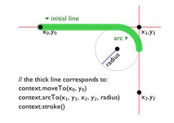
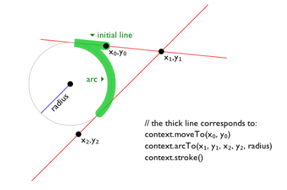
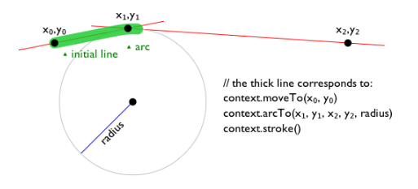
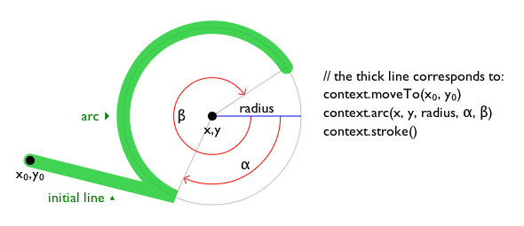
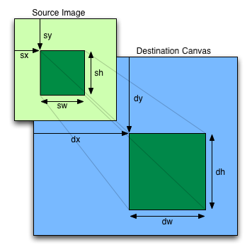
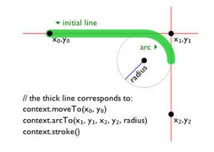
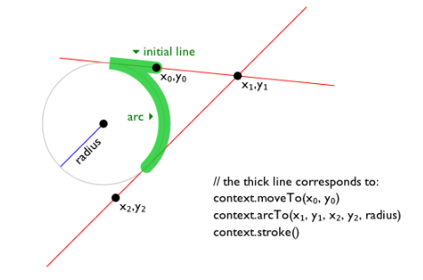
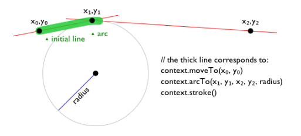
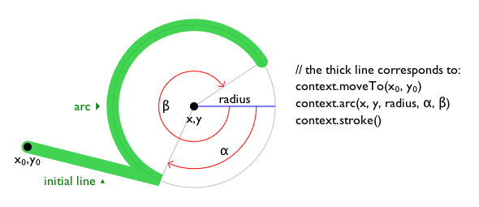
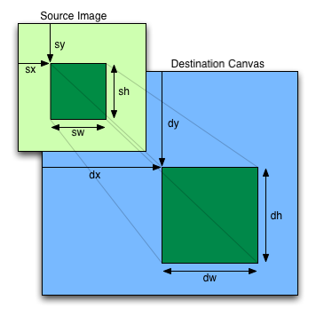

◎
Transparent, but with no interactive content descendants except for a elements, img elements with usemap attributes, button elements, input elements whose type attribute are in the Checkbox or Radio Button states, input elements that are buttons, select elements with a multiple attribute or a display size greater than 1, and elements that would not be interactive content except for having the tabindex attribute specified.
`text/html における~tag省略$
両~tagとも省略-可能でない。
◎
Neither tag is omissible.
`内容~属性$
`大域~属性$
◎
Global attributes
`width$a
— 横~寸法
◎
width — Horizontal dimension
`height$a
— 縦~寸法
◎
height — Vertical dimension
`~DOM~interface$
typedef (`CanvasRenderingContext2D$I or `ImageBitmapRenderingContext$I or `WebGLRenderingContext$I or `WebGL2RenderingContext$I) `RenderingContext@I;
[Exposed=Window]
interface `HTMLCanvasElement@I : `HTMLElement$I {
[`HTMLConstructor$] constructor();
[`CEReactions$] attribute unsigned long `width$m;
[`CEReactions$] attribute unsigned long `height$m;
`RenderingContext$I? `getContext$m(DOMString %contextId, optional any %options = null);
USVString `toDataURL$m(optional DOMString %type = "image/png", optional any %quality);
void `toBlob$m(`BlobCallback$I %_callback, optional DOMString %type = "image/png", optional any %quality);
`OffscreenCanvas$I `transferControlToOffscreen$m();
};
callback `BlobCallback@I = void (`Blob$I? %blob);
`canvas$e 要素は、
解像度に依存する~bitmap~canvasを~scriptに供する
— それは［
~graph, ~game~graphic, ~art,
その他の視覚的~画像
］をその場で描画するために利用できる。
◎
The canvas element provides scripts with a resolution-dependent bitmap canvas, which can be used for rendering graphs, game graphics, art, or other visual images on the fly.
作者は、より相応しい要素が可用であるときは，文書~内に `canvas$e 要素を利用するべきでない。
例えば、~pageの~headingを描画するために `canvas$e 要素を利用するのは不適切である
— ~headingの呈示を~graphic的に目立たせたい場合、適切な要素（概して `h1$e ）を利用して~mark-upした上で，~CSSで~styleをあてがい，`~shadow~tree$などの~support用~技術を利用するべきである。
【！なぜ~shadow~tree？】
◎
Authors should not use the canvas element in a document when a more suitable element is available. For example, it is inappropriate to use a canvas element to render a page heading: if the desired presentation of the heading is graphically intense, it should be marked up using appropriate elements (typically h1) and then styled using CSS and supporting technologies such as shadow trees.
作者は、 `canvas$e 要素を利用するときは、利用者に提示する際に `canvas$e の~bitmapと本質的に同じ機能または目的を果たすような内容を供さなければナラナイ。
この内容は、 `canvas$e 要素の内容として配置されてもヨイ。
`canvas$e 要素の内容があれば、それが要素の`~fallback内容$になる。
◎
When authors use the canvas element, they must also provide content that, when presented to the user, conveys essentially the same function or purpose as the canvas's bitmap. This content may be placed as content of the canvas element. The contents of the canvas element, if any, are the element's fallback content.
次が満たされるならば、動的に作成される， %要素 の~bitmap画像による`埋込d内容$を`表現-$する
⇒
［
媒体は対話的である
］~AND［
%要素 用の`~scriptingは可能化されて$いる
］~AND［
`canvas$e 要素~用の~supportは可能化されている
］
◎
In interactive visual media, if scripting is enabled for the canvas element, and if support for canvas elements has been enabled, then the canvas element represents embedded content consisting of a dynamically created image, the element's bitmap.
媒体が対話的でなく, 静的な場合でも、
%要素 が以前に描画~文脈に結付けられていた場合には（例：
~pageは 対話的かつ視覚的な媒体に表示されていて，今は印刷されている場合 ／
~page~layout処理nの間に走った~scriptが，要素に何か塗っていた場合）、
%要素 の現在の~bitmapと~sizeを伴う`埋込d内容$を`表現-$する。
◎
In non-interactive, static, visual media, if the canvas element has been previously associated with a rendering context (e.g. if the page was viewed in an interactive visual medium and is now being printed, or if some script that ran during the page layout process painted on the element), then the canvas element represents embedded content with the element's current bitmap and size. Otherwise, the element represents its fallback content instead.
他の場合、 %要素 の`~fallback内容$を表現する。
◎
In non-visual media, and in visual media if scripting is disabled for the canvas element or if support for canvas elements has been disabled, the canvas element represents its fallback content instead.
`canvas$e 要素が`埋込d内容$を`表現-$するときでも、依然として，利用者は（`~fallback内容$内にある）`canvas$e 要素の子孫を~focusできる。
`~focusされて$いる要素は、（それ自身は可視でなくとも）~keyboard対話~eventの標的になる。
これは、対話的な~canvasを~keyboardで~access可能にすることを，作者に許容する
— 作者は、対話的~領域から`~fallback内容$内の`~focus可能な区画$へ一対一に対応付けるべきである。
（~focusは、~mouseによる対話~eventに対しては効果はない。）
`UIEVENTS$r
◎
When a canvas element represents embedded content, the user can still focus descendants of the canvas element (in the fallback content). When an element is focused, it is the target of keyboard interaction events (even though the element itself is not visible). This allows authors to make an interactive canvas keyboard-accessible: authors should have a one-to-one mapping of interactive regions to focusable areas in the fallback content. (Focus has no effect on mouse interaction events.) [UIEVENTS]
次を満たす要素は、
`関連な~canvas~fallback内容として利用-中にある@
とされる
⇒
［
最も近傍の先祖である `canvas$e 要素は`具現化されて$いる
］~AND［
`埋込d内容$を`表現-$する
］
◎
An element whose nearest canvas element ancestor is being rendered and represents embedded content is an element that is being used as relevant canvas fallback content.
`canvas$e 要素には、その~bitmapの~sizeを制御するための 2 種の属性
`width@a,
`height@a
がある：
◎
The canvas element has two attributes to control the size of the element's bitmap: width and height.＼
これらの属性に指定する値は、`妥当な負でない整数$でなければナラナイ。
◎
These attributes, when specified, must have values that are valid non-negative integers.＼
これらの属性から
`数量-値@
を得るときは、［
要素は属性を有していて，属性の値を`負でない整数として構文解析-$した結果 ~NEQ `失敗^i ならば その結果 ／
~ELSE_ 既定~値
］を返すモノトスル
— この既定~値は、
`width$a 属性~用には 300,
`height$a 属性~用には 150 とする。
◎
The rules for parsing non-negative integers must be used to obtain their numeric values. If an attribute is missing, or if parsing its value returns an error, then the default value must be used instead. The width attribute defaults to 300, and the height attribute defaults to 150.
これらの属性が［
要素の`文脈~mode$ ~EQ `placeholder$cM
］の下で設定されようとしたときは、~UAは，属性を変更することなく `InvalidStateError$E 例外を投出するモノトスル。
◎
When setting the value of the width or height attribute, if the context mode of the canvas element is set to placeholder, the user agent must throw an "InvalidStateError" DOMException and leave the attribute's value unchanged.
`埋込d内容$を`表現-$するような `canvas$e 要素の`内在的~size$は、要素の~bitmapの寸法に等しいとする。
◎
The intrinsic dimensions of the canvas element when it represents embedded content are equal to the dimensions of the element's bitmap.
~UAは、［
`canvas$e の~bitmap, およびその描画~文脈
］用の座標~空間には，［
その 1 単位が画像~dataの 1 画素に等しい，正方形の画素~密度
］を利用するモノトスル。
◎
The user agent must use a square pixel density consisting of one pixel of image data per coordinate space unit for the bitmaps of a canvas and its rendering contexts.
注記：
`canvas$e 要素は、~stylesheetにより任意に~sizeできる
— そうした場合、その~bitmapは，~CSS `object-fit$p ~propの~subjectになる。
◎
A canvas element can be sized arbitrarily by a style sheet, its bitmap is then subject to the 'object-fit' CSS property.
一部の描画~文脈
— ［
`canvas$e 要素 ／
`ImageBitmap$I ~obj ／
以下の節に述べる `~2D描画~文脈$など
］ —
の~bitmapは、真偽値をとる
`生成元clean~flag@
を持つ
— ［
`canvas$e 要素 ／ `ImageBitmap$I ~obj
］の作成-時には、 ~T に設定するモノトスル。
【他に対しては、他所で述べられる】
◎
The bitmaps of canvas elements, the bitmaps of ImageBitmap objects, as well as some of the bitmaps of rendering contexts, such as those described in the sections on the CanvasRenderingContext2D and ImageBitmapRenderingContext objects below, have an origin-clean flag, which can be set to true or false. Initially, when the canvas element or ImageBitmap object is created, its bitmap's origin-clean flag must be set to true.
各 `canvas$e 要素は、描画~文脈を束縛し得る。
そのような描画~文脈の有無, および その種類を追跡し続けるため、各 `canvas$e は
`~canvas文脈~mode@
を持ち，初期~時には［
そのような描画~文脈は無いことを表す
`none@cM
］をとるとする。
それは、この仕様に定義される各種~algoにより，次のいずれかに変更され得る
⇒＃
`placeholder@cM,
`2d@cM,
`bitmaprenderer@cM,
`webgl@cM,
`webgl2@cM
◎
A canvas element can have a rendering context bound to it. Initially, it does not have a bound rendering context. To keep track of whether it has a rendering context or not, and what kind of rendering context it is, a canvas also has a canvas context mode, which is initially none but can be changed to either placeholder, 2d, bitmaprenderer, webgl, or webgl2 by algorithms defined in this specification.
`none$cM
⇒
この場合、要素の~bitmapは`透明な黒$になる。
加えて，要素の［
`内在的~横幅$／`内在的~縦幅$
］は、 `px$css 単位で要素の［
`width$a ／ `height$a
］属性の`数量-値$に等しくなり，これらの属性が［
設定-／変更-／除去-
］される伴い，更新されるモノトスル。
◎
When its canvas context mode is none, a canvas element has no rendering context, and its bitmap must be transparent black with an intrinsic width equal to the numeric value of the element's width attribute and an intrinsic height equal to the numeric value of the element's height attribute, those values being interpreted in CSS pixels, and being updated as the attributes are set, changed, or removed.
`placeholder$cM
⇒
この場合、要素は，ある `OffscreenCanvas$I ~objの~placeholderとして~serveする。
要素の内容は、［
`OffscreenCanvas$I ~objの描画~文脈の `commit()$m ~method
］を~callすることにより更新される。
◎
When its canvas context mode is placeholder, a canvas element has no rendering context. It serves as a placeholder for an OffscreenCanvas object, and the content of the canvas element is updated by calling the commit() method of the OffscreenCanvas object's rendering context.
`canvas$e 要素は、`埋込d内容$を表現するならば，次のような`塗り~source$を供する
⇒＃
要素の ( 横幅, 縦幅 ) は、要素の ( `内在的~横幅$, `内在的~縦幅$ ) で与えられる ／
要素の外観は、要素の~bitmapで与えられる
◎
When a canvas element represents embedded content, it provides a paint source whose width is the element's intrinsic width, whose height is the element's intrinsic height, and whose appearance is the element's bitmap.
`canvas$e 要素 %canvas の［
`width$a ／ `height$a
］内容~属性が［
設定-（元と同じ値が設定される場合も含む）／変更-／除去-
］されるたびに、~UAは，要素の`~canvas文脈~mode$に応じて，次を遂行するモノトスル：
◎
Whenever the width and height content attributes are set, removed, changed, or redundantly set to the value they already have, then the user agent must perform the action from the row of the following table that corresponds to the canvas element's context mode.
◎
Context Mode
◎
Action
`2d$cM
%canvas の［
`width$a, `height$a
］内容~属性の`数量-値$で`~bitmap寸法を設定する$。
◎
Follow the steps to set bitmap dimensions to the numeric values of the width and height content attributes.
`webgl$cM
`webgl2$cM
~WebGL仕様に定義される挙動に従う。
`WEBGL$r
◎
Follow the behavior defined in the WebGL specifications. [WEBGL]
`bitmaprenderer$cM
~IF［
%canvas が束縛している描画~文脈の`~bitmap~mode$iBM ~EQ `~blank$iBM
］
⇒
`~ImageBitmapRenderingContextの出力~bitmapを設定する$( %canvas が束縛している描画~文脈 )
◎
If the context's bitmap mode is set to blank, run the steps to set an ImageBitmapRenderingContext's output bitmap, passing the canvas element's rendering context.
`placeholder$cM
何もしない。
◎
Do nothing.
`none$cM
何もしない。
【上の記述と矛盾？】
◎
Do nothing.
`width@m
`height@m
順に，此れの［
`width$a, `height$a
］内容~属性を`反映する$モノトスル
— 既定の値は、対応する内容~属性のそれと同じとする下で。
◎
The width and height IDL attributes must reflect the respective content attributes of the same name, with the same defaults.
~canvasに描くための~APIを公開する~objを返す。
%contextId は、欲される~APIを［
`2d$cC,
`bitmaprenderer$cC,
`webgl$cC,
`webgl2$cC
］いずれかとして指定する。
%options は、その~APIにより取扱われる。
◎
Returns an object that exposes an API for drawing on the canvas. contextId specifies the desired API: "2d", "bitmaprenderer", "webgl", or "webgl2". options is handled by that API.
この仕様は、［
`2d$cC, `bitmaprenderer$cC
］文脈を定義する。
`WEBGL$r 仕様は、［
`webgl$cC, `webgl2$cC
］文脈を定義する。
◎
This specification defines the "2d" and "bitmaprenderer" contexts below. The WebGL specifications define the "webgl" and "webgl2" contexts. [WEBGL]
次の場合は~NULLを返す
⇒
%contextId は~supportされない場合 ／
当の~canvasは すでに別種の文脈で初期化されている場合（例：
`webgl$cC 文脈を取得した後に `2d$cC 文脈を取得しようと試行した場合）。
◎
Returns null if contextId is not supported, or if the canvas has already been initialized with another context type (e.g., trying to get a "2d" context after getting a "webgl" context).
`getContext(contextId, options)@m
~methodの被呼出時には、次を走らすモノトスル：
◎
The getContext(contextId, options) method of the canvas element, when invoked, must run these steps:
~IF［
%options は `object$I でない
］
⇒
%options ~SET ~NULL
◎
If options is not an object, then set options to null.
%options ~SET `~JS値に変換する$( %options )
◎
Set options to the result of converting options to a JavaScript value.
◎
Run the steps in the cell of the following table whose column header matches this canvas element's canvas context mode and whose row header matches contextId:
◎
｜none｜2d｜bitmaprenderer｜webgl or webgl2｜placeholder
"2d"｜Follow the 2D context creation algorithm defined in the section below, passing it this canvas element and options, to obtain a CanvasRenderingContext2D object; if this does not throw an exception, then set this canvas element's context mode to 2d, and return the CanvasRenderingContext2D object.｜Return the same object as was returned the last time the method was invoked with this same first argument.｜Return null.｜Return null.｜Throw an "InvalidStateError" DOMException.
"bitmaprenderer"｜Follow the ImageBitmapRenderingContext creation algorithm defined in the section below, passing it this canvas element and options, to obtain an ImageBitmapRenderingContext object; then set this canvas element's context mode to bitmaprenderer, and return the ImageBitmapRenderingContext object.｜Return null.｜Return the same object as was returned the last time the method was invoked with this same first argument.｜Return null.｜Throw an "InvalidStateError" DOMException.
"webgl" or "webgl2", if the user agent supports the WebGL feature in its current configuration｜Follow the instructions given in the WebGL specifications' Context Creation sections to obtain a WebGLRenderingContext, WebGL2RenderingContext, or null; if the returned value is null, then return null; otherwise, set this canvas element's context mode to webgl or webgl2, and return the WebGLRenderingContext or WebGL2RenderingContext object. [WEBGL]｜Return null.｜Return null.｜Return the same object as was returned the last time the method was invoked with this same first argument.｜Throw an "InvalidStateError" DOMException.
An unsupported value*｜Return null.｜Return null.｜Return null.｜Return null.｜Throw an "InvalidStateError" DOMException.
◎
* For example, the "webgl" or "webgl2" value in the case of a user agent having exhausted the graphics hardware's abilities and having no software fallback implementation.
この~canvas内の画像~用の`~data-URL$を返す。
◎
Returns a data: URL for the image in the canvas.
%type 引数が供された場合、返される画像の型を制御する（例： ~PNG／~JPEG ）。
既定は `image/png$mt 型とする
— この型は、所与の型が~supportされない場合にも利用される。
%quality 引数は、型による画像~形式が可変~品質を~supportする場合（ `image/jpeg$mt など ）に適用される， 0.0 以上 1.0 以下の数であり、結果の画像に欲される品質~levelを指示する。
◎
The first argument, if provided, controls the type of the image to be returned (e.g. PNG or JPEG). The default is "image/png"; that type is also used if the given type isn't supported. The second argument applies if the type is an image format that supports variable quality (such as "image/jpeg"), and is a number in the range 0.0 to 1.0 inclusive indicating the desired quality level for the resulting image.
作者は、 `image/png$mt 以外の型を利用しようと試行するときは，返された画像が本当に要請した形式であるかどうかを検査できる
— 返された文字列が正確に文字列 ［
`data:image/png,^l ／ `data:image/png;^l
］から開始されているかどうかを見て。
そうであれば、画像は~PNGであり，要請した型は~supportされないことになる（これに対する唯一の例外は、~canvasの縦幅または横幅がない場合で、その事例での結果は単純に `data:,^l になるであろう）。
◎
When trying to use types other than "image/png", authors can check if the image was really returned in the requested format by checking to see if the returned string starts with one of the exact strings "data:image/png," or "data:image/png;". If it does, the image is PNG, and thus the requested type was not supported. (The one exception to this is if the canvas has either no height or no width, in which case the result might simply be "data:,".)
%canvas . `toBlob(callback [, type [, quality ] ] )$m
この~canvas内の画像を包含している~fileを表現している `Blob$I ~objを作成した上で、その~objを~~渡して %callback を呼出す。
◎
Creates a Blob object representing a file containing the image in the canvas, and invokes a callback with a handle to that object.
%type 引数が供された場合、返される画像の型を制御する（例： ~PNG／~JPEG ）。
既定は `image/png$mt 型とする
— この型は、所与の型が~supportされない場合にも利用される。
%quality 引数は、型による画像~形式が可変~品質を~supportする場合（ `image/jpeg$mt など ）に適用される， 0.0 以上 1.0 以下の数であり、結果の画像に欲される品質~levelを指示する。
◎
The second argument, if provided, controls the type of the image to be returned (e.g. PNG or JPEG). The default is "image/png"; that type is also used if the given type isn't supported. The third argument applies if the type is an image format that supports variable quality (such as "image/jpeg"), and is a number in the range 0.0 to 1.0 inclusive indicating the desired quality level for the resulting image.
%canvas . `transferControlToOffscreen()$m
`canvas$e 要素を~placeholderとして利用するような，新たな `OffscreenCanvas$I ~objを返す。
`canvas$e 要素が `OffscreenCanvas$I ~obj用の~placeholderになって以降は、その内在的~sizeは，もはや変更し得なくなり，描画~文脈も持ち得なくなる。
~placeholder~canvasの内容は、 `OffscreenCanvas$I ~objの描画~文脈の `commit()$m ~methodを~callすることにより更新される。
◎
Returns a newly created OffscreenCanvas object that uses the canvas element as a placeholder. Once the canvas element has become a placeholder for an OffscreenCanvas object, its intrinsic size can no longer be changed, and it cannot have a rendering context. The content of the placeholder canvas is updated by calling the commit() method of the OffscreenCanvas object's rendering context.
`toDataURL(type, quality)@m
被呼出時には、次を走らすモノトスル：
◎
The toDataURL(type, quality) method, when invoked, must run these steps:
~IF［
此れの~bitmapの`生成元clean~flag$ ~EQ ~F
］
⇒
~THROW `SecurityError$E
◎
If this canvas element's bitmap's origin-clean flag is set to false, then throw a "SecurityError" DOMException.
~IF［
此れの~bitmapの寸法は、横, 縦いずれかは 0 （すなわち、~bitmapは空）
］
⇒
~RET 文字列 `data:,^l
（これは、 `text/plain^c 資源~内の空~文字列を表現する最短な`~data-URL$を与える。）
◎
If this canvas element's bitmap has no pixels (i.e. either its horizontal dimension or its vertical dimension is zero) then return the string "data:,". (This is the shortest data: URL; it represents the empty string in a text/plain resource.)
%file ~LET `~bitmapを~fileとして直列化する$( 此れの~bitmap, %type, %quality )
（ %type ／ %quality は省略-時は ε ）
◎
Let file be a serialization of this canvas element's bitmap as a file, passing type and quality if given.
~IF［
%file ~EQ ~NULL
］
⇒
~RET `data:,^l
◎
If file is null then return "data:,".
被呼出時には、次を走らすモノトスル：
◎
The toBlob(callback, type, quality) method, when invoked, must run these steps:
~IF［
此れの~bitmapの`生成元clean~flag$ ~EQ ~F
］
⇒
~THROW `SecurityError$E
◎
If this canvas element's bitmap's origin-clean flag is set to false, then throw a "SecurityError" DOMException.
%結果 ~LET ~NULL
◎
Let result be null.
~IF［
此れの~bitmapの寸法は、横, 縦とも 0 でない（すなわち、~bitmapは空でない）
］
⇒
%結果 ~SET 此れの~bitmapの複製
◎
If this canvas element's bitmap has pixels (i.e., neither its horizontal dimension nor its vertical dimension is zero), then set result to a copy of this canvas element's bitmap.
この段は`並列的$に走らす：
◎
Run these steps in parallel:
~IF［
%結果 ~NEQ ~NULL
］
⇒
%結果 ~SET `~bitmapを~fileとして直列化する$( %結果, %type, %quality )
（ %type ／ %quality は省略-時は ε ）
◎
If result is non-null, then set result to a serialization of result as a file with type and quality if given.
次を走らす`~taskを~queueする$：
◎
Queue a task to run these steps:
~IF［
%結果 ~NEQ ~NULL
］
⇒
%結果 ~SET
此れに`関連な~Realm$内に作成され, %結果 を表現する，新たな `Blob$I ~obj
`FILEAPI$r
◎
If result is non-null, then set result to a new Blob object, created in the relevant Realm of this canvas element, representing result. [FILEAPI]
`~callback関数を呼出す$( %callback, « %結果 » )
◎
Invoke callback with « result ».
この~task用の`~task源$は、
`~canvas~blob直列化~task源@
とする。
◎
The task source for this task is the canvas blob serialization task source.
`transferControlToOffscreen()@m
被呼出時には、次を走らすモノトスル：
◎
The transferControlToOffscreen() method, when invoked, must run these steps:
~IF［
此れの`~canvas文脈~mode$ ~NEQ `none$cM
］
⇒
~THROW `InvalidStateError$E
◎
If this canvas element's context mode is not set to none, throw an "InvalidStateError" DOMException.
%offscreenCanvas ~LET 次のようにされた新たな `OffscreenCanvas$I ~obj
⇒＃
`width$oC ~SET 此れの `width$a 内容~属性の`数量-値$,
`height$oC ~SET 此れの `height$a 内容~属性の`数量-値$
◎
Let offscreenCanvas be a new OffscreenCanvas object with its width and height equal to the values of the width and height content attributes of this canvas element.
%offscreenCanvas の`~placeholder~canvas要素$ ~SET 此れへの弱い参照
◎
Set the placeholder canvas element of offscreenCanvas to be a weak reference to this canvas element.
此れの`~canvas文脈~mode$ ~SET `placeholder$cM
◎
Set this canvas element's context mode to placeholder.
注記：
既存の~Web内容との互換性を保守するため、~UAは，
`CanvasRenderingContext2D$I ~obj上の `stroke()$2d ~methodの直後に `CanvasUserInterface$I にて定義される~methodを列挙する必要がある。
◎
To maintain compatibility with existing Web content, user agents need to enumerate methods defined in CanvasUserInterface immediately after the stroke() method on CanvasRenderingContext2D objects.
特定0の `canvas$e 要素が永続的に束縛している
`CanvasRenderingContext2D$I ~objを返す。
◎
Returns a CanvasRenderingContext2D object that is permanently bound to a particular canvas element.
`alpha$mb ~memberが ~F の場合、当の~canvasは，常に不透明に強制される。
◎
If the alpha member is false, then the context is forced to always be opaque.
`desynchronized$mb が ~T の場合、当の文脈は，`非同期化-$され得る。
◎
If the desynchronized member is true, then the context might be desynchronized.
`alpha$mb ~memberは
⇒
当の文脈に~alpha~channelがあるならば ~T ／
不透明に強制されているならば ~F
◎
alpha member is true if the context has an alpha channel, or false if it was forced to be opaque.
`desynchronized$mb ~memberは
⇒
当の文脈は`非同期化-$され得るならば ~T ／
~ELSE_ ~F
◎
desynchronized member is true if the context can be desynchronized.
各 `CanvasRenderingContext2D$I ~objは、次のものを持つ：
`出力~bitmap@
~objの作成-時に初期化される。
◎
A CanvasRenderingContext2D object has an output bitmap that is initialized when the object is created.
各`出力~bitmap$は、真偽値をとる`生成元clean~flag$を持つ
— 初期~時には ~T に設定するモノトスル。
【！one of these bitmaps？】
◎
The output bitmap has an origin-clean flag, which can be set to true or false. Initially, when one of these bitmaps is created, its origin-clean flag must be set to true.
`~alpha@
真偽値。
~F の場合、~alpha~channelは，全~画素において 1.0 （全部的に不透明）に固定され、どの画素に対しても，その~alpha成分を変更しようとする試みは黙して無視するモノトスル。
◎
The CanvasRenderingContext2D object also has an alpha boolean. When a CanvasRenderingContext2D object's alpha is false, then its alpha channel must be fixed to 1.0 (fully opaque) for all pixels, and attempts to change the alpha component of any pixel must be silently ignored.
注記：
したがって，そのような文脈の~bitmapは、`透明な黒$に代わって，`不透明な黒$から開始され、［
`clearRect()$2d ~methodによる結果は 常に`不透明な黒$になる／
`getImageData()$2d ~methodから得られる毎 4 個目の~byteは 常に 255 になる／
`putImageData()$2d ~methodでは 入力における毎 4 個目の~byteは実質的に無視される
］等々になる。
しかしながら，~canvas上に描かれる~styleや画像の~alpha成分は、`出力~bitmap$に影響iする箇所の~alpha~channelに限り，依然として尊守される。
一例として，新規に［
`~alpha$が ~F に設定されて作成された`出力~bitmap$
］上に 50% 透明な~whiteの正方形を描いたときの結果は、全部的に不透明な~grayの正方形になる。
◎
Thus, the bitmap of such a context starts off as opaque black instead of transparent black; clearRect() always results in opaque black pixels, every fourth byte from getImageData() is always 255, the putImageData() method effectively ignores every fourth byte in its input, and so on. However, the alpha component of styles and images drawn onto the canvas are still honoured up to the point where they would impact the output bitmap's alpha channel; for instance, drawing a 50% transparent white square on a freshly created output bitmap with its alpha set to false will result in a fully-opaque gray square.
`CanvasRenderingContext2D$I ~objは、
`非同期化d~flag@
も持つ。
~T の場合、~UAは当の~canvasの描画を最適化してもヨイ
— すなわち、［
~canvas塗り~cycleを~event~loopから非同期化したり，普通の~UA描画~algoを迂回する
］ことにより，入力~eventから~raster化までの待時間を抑制してもヨイ。
この~modeは、［
通例の塗りの仕組み／~raster化
］を迂回することを孕む場合には，可視な
`tearing artifacts^en
【画面上の ある~~境目を挟んで，異なる~frameが同時に表示される現象】
を導入し得る。
◎
The CanvasRenderingContext2D object also has a desynchronized boolean. When a CanvasRenderingContext2D object's desynchronized is true, then the user agent may optimize the rendering of the canvas to reduce the latency, as measured from input events to rasterization, by desynchronizing the canvas paint cycle from the event loop, bypassing the ordinary user agent rendering algorithm, or both. Insofar as this mode involves bypassing the usual paint mechanisms, rasterization, or both, it might introduce visible tearing artifacts.
~UAは通例的に，表示されない~buffer上に描画し、呈示~用に，それを `scan out^en されている~buffer
【~display装置へ直に転送するための~buffer】
と素早く入替える
— 前者の~bufferは “裏~buffer（ `back buffer^en ）”,
後者の~bufferは “表~buffer（ `front buffer^en ）”
と呼ばれる。
待時間を抑制するためとして，表~buffer描画と呼ばれる技法が~~普及している（ `単-~buffer^i 描画とも呼ばれる）
— そこでの描画は、 `scan out^en する処理nと並列的に，先を争うように起こる。
この技法は、 `tearing artifacts^en を導入し得る引き換えに待時間を抑制し，`非同期化d~flag$の一部または全部を実装するために利用され得る。
`MULTIPLEBUFFERING$r
◎
The user agent usually renders on a buffer which is not being displayed, quickly swapping it and the one being scanned out for presentation; the former buffer is called back buffer and the latter front buffer. A popular technique for reducing latency is called front buffer rendering, also known as single buffer rendering, where rendering happens in parallel and racily with the scanning out process. This technique reduces the latency at the price of potentially introducing tearing artifacts and can be used to implement in total or part of the desynchronized boolean. [MULTIPLEBUFFERING]
注記：
`非同期化d~flag$は、描き~appなど，入力から~raster化までの待時間が~criticalになる，ある種の~appを実装するときに有用になり得る。
◎
The desynchronized boolean can be useful when implementing certain kinds of applications, such as drawing applications, where the latency between input and rasterization is critical.
`getContextAttributes()@2d
被呼出時には、次のようにされた `CanvasRenderingContext2DSettings$I 辞書を返すモノトスル
⇒＃
`alpha$mb ~member ~SET 此れの`~alpha$,
`desynchronized$mb ~member ~SET 此れの`非同期化d~flag$
◎
The getContextAttributes() method, when invoked, must return a CanvasRenderingContext2DSettings dictionary containing the following members:
• alpha, set to this context's alpha.
• desynchronized, set to this context's desynchronized.
~2D描画~文脈 `CanvasRenderingContext2D$I は、~~直交座標系を成す平坦な面を表現する
— その座標~空間は：
原点 ( 0, 0 ) は左上~隅にあり, ［
%x ／ %y
］値は［
右／下
］へ向かって増大し, ［
右端~辺の %x 座標 ／ 下端~辺の %y 座標
］は
— `px$css 単位で【！＊】 —
当の描画~文脈の`出力~bitmap$の［
横幅 ／ 縦幅
］に等しくなる。
◎
The CanvasRenderingContext2D 2D rendering context represents a flat linear Cartesian surface whose origin (0,0) is at the top left corner, with the coordinate space having x values increasing when going right, and y values increasing when going down. The x-coordinate of the right-most edge is equal to the width of the rendering context's output bitmap in CSS pixels; similarly, the y-coordinate of the bottom-most edge is equal to the height of the rendering context's output bitmap in CSS pixels.
~UAが［
内部で／描画の間に
］利用する実際~bitmapの~sizeは、座標~空間の~sizeになる必要はない。
一例として，高精細~display上では、~UAは
— 描画が高~品質であり続けるよう —
［
4 個の機器~画素が座標~空間の 1 単位~画素を成すような~bitmap
］を内部で利用してもヨイ。
同様に，~anti-alias法は、［
~displayに~~現れる結果の画像より解像度が高い~bitmapを得る~oversample法
］を利用して実装できる。
◎
The size of the coordinate space does not necessarily represent the size of the actual bitmaps that the user agent will use internally or during rendering. On high-definition displays, for instance, the user agent may internally use bitmaps with four device pixels per unit in the coordinate space, so that the rendering remains at high quality throughout. Anti-aliasing can similarly be implemented using oversampling with bitmaps of a higher resolution than the final image on the display.
描画~文脈の`出力~bitmap$の~sizeを `px$css で述べることは、描画される~canvasが `px$css による等価な区画を覆うことを意味しない。
`px$css が再利用されるのは、~text~layoutなどの~CSS特能との統合を容易にするためである。
◎
Using CSS pixels to describe the size of a rendering context's output bitmap does not mean that when rendered the canvas will cover an equivalent area in CSS pixels. CSS pixels are reused for ease of integration with CSS features, such as text layout.
言い換えれば、下の `canvas$e 要素の描画~文脈の`出力~bitmap$は 200×200 であり（それは、~CSS特能との統合を容易にするため， `px$css 単位を内部的に利用する）、
100×100 `px$css として描画される：
◎
In other words, the canvas element below's rendering context has a 200x200 output bitmap (which internally uses CSS pixels as a unit for ease of integration with CSS) and is rendered as 100x100 CSS pixels:
`~2D文脈を作成する@
ときは、所与の
( `canvas$e 要素 %target, %options )
に対し 次の手続きを走らす：
◎
The 2D context creation algorithm, which is passed a target (a canvas element) and options, consists of running these steps:
%設定群 ~LET %options を `CanvasRenderingContext2DSettings$I 辞書~型の`~IDL値に変換-$した結果（例外投出あり）
◎
Let settings be the result of converting options to the dictionary type CanvasRenderingContext2DSettings. (This can throw an exception.).
%文脈 ~LET 新たな `CanvasRenderingContext2D$I ~obj
◎
Let context be a new CanvasRenderingContext2D object.
%文脈 の `canvas$2d 属性 ~SET %target を指すように初期化する
◎
Initialize context's canvas attribute to point to target.
%文脈 の`出力~bitmap$ ~SET %target の~bitmap（ %target と同じ~bitmap共有する）
◎
Set context's output bitmap to the same bitmap as target's bitmap (so that they are shared).
%target の［
`width$a, `height$a
］内容~属性の`数量-値$で`~bitmap寸法を設定する$
◎
Set bitmap dimensions to the numeric values of target's width and height content attributes.
%文脈 の`~alpha$ ~SET %設定群 の
`alpha@mb
◎
Set context's alpha to settings's alpha.
%文脈 の`非同期化d~flag$ ~SET %設定群 の
`desynchronized@mb
◎
Set context's desynchronized to settings's desynchronized.
~RET %文脈
◎
Return context.
所与の
( %横幅, %縦幅 )
で， %描画~文脈 の
`~bitmap寸法を設定する@
ときは、次を走らすモノトスル：
◎
When the user agent is to set bitmap dimensions to width and height, it must run these steps:
%描画~文脈 を`既定の状態に設定し直す$
◎
Reset the rendering context to its default state.
`出力~bitmap$を
( %横幅, %縦幅 )
に~resizeした上で、それを成す全~画素を`透明な黒$にする
◎
Resize the output bitmap to the new width and height and clear it to transparent black.
%canvas ~LET %描画~文脈 の `canvas$2d 属性の初期化-時に与えた `canvas$e 要素
◎
Let canvas be the canvas element to which the rendering context's canvas attribute was initialized.
~IF［
%canvas の `width$a 内容~属性の`数量-値$ ~NEQ %横幅
］
⇒
%canvas の `width$a 内容~属性の値 ~SET
%横幅 を`妥当な負でない整数$として表現する，アリな限り最短な文字列
◎
If the numeric value of canvas's width content attribute differs from width, then set canvas's width content attribute to the shortest possible string representing width as a valid non-negative integer.
~IF［
%canvas の `height$a 内容~属性の`数量-値$ ~NEQ %縦幅
］
⇒
%canvas の `height$a 内容~属性の値 ~SET
%縦幅 を`妥当な負でない整数$として表現する，アリな限り最短な文字列
◎
If the numeric value of canvas's height content attribute differs from height, then set canvas's height content attribute to the shortest possible string representing height as a valid non-negative integer.
次の例では、正方形が 1 個だけ現れるように描かれる：
◎
Only one square appears to be drawn in the following example:
/*
%canvas は `canvas^e 要素への参照
◎
canvas is a reference to a <canvas> element
*/
var %context = %canvas.getContext('2d');
%context.fillRect(0,0,50,50);
%canvas.setAttribute('width', '300'); /*
これは %canvas を消去する
◎
clears the canvas
*/
%context.fillRect(0,100,50,50);
%canvas.width = %canvas.width; /*
これは %canvas を消去する
◎
clears the canvas
*/
%context.fillRect(100,0,50,50); /*
この正方形だけ残る
◎
only this square remains
*/
`canvas@m
取得子は、此れの作成-時に初期化された値を返すモノトスル。
◎
The canvas attribute must return the value it was initialized to when the object was created.
`CanvasFillRule$I 列挙~型の値は、［
所与の点が~pathの［
内側, 外側
］のどちらに入るかを決定する，
`~fill規則@
~algo
］を選択するために利用される：
◎
The CanvasFillRule enumeration is used to select the fill rule algorithm by which to determine if a point is inside or outside a path.
`nonzero@l
この値は、~nonzero巻数~規則を指示する
— この規則の下では、所与の点が図形の外側にあると見なされるのは，［
その点から見て、図形の~pathが その点から描かれる半直線に［
右から左へ交叉する回数, 左から右へ交叉する回数
］が等しい
］ときとされる。
◎
The value "nonzero" value indicates the nonzero winding rule, wherein a point is considered to be outside a shape if the number of times a half-infinite straight line drawn from that point crosses the shape's path going in one direction is equal to the number of times it crosses the path going in the other direction.
`evenodd@l
この値は、~even-odd巻数~規則を指示する
— この規則の下では、所与の点が図形の外側にあると見なされるのは，［
その点から見て、図形の~pathが その点から描かれる半直線に交叉する回数が偶数である
］ときとされる。
◎
The "evenodd" value indicates the even-odd rule, wherein a point is considered to be outside a shape if the number of times a half-infinite straight line drawn from that point crosses the shape's path is even.
所与の点は、図形の外側にないならば，内側にあるものとされる。
◎
If a point is not outside a shape, it is inside the shape.
`ImageSmoothingQuality$I 列挙は、画像の滑化-時に利用する補間~品質についての選好を表出する
— 次のいずれかの値をとり得る：
◎
The ImageSmoothingQuality enumeration is used to express a preference for the interpolation quality to use when smoothing images.
`low@l
低~levelを指示する。
他の値より計算的に効率的になり得る。
◎
The "low" value indicates a preference for a low level of image interpolation quality. Low-quality image interpolation may be more computationally efficient than higher settings.
`medium@l
中~levelを指示する。
◎
The "medium" value indicates a preference for a medium level of image interpolation quality.
`high@l
高~levelを指示する。
他の値より計算的に高価になり得る。
◎
The "high" value indicates a preference for a high level of image interpolation quality. High-quality image interpolation may be more computationally expensive than lower settings.
注記：
双線型~拡縮-法は、他より低~品質だが，画像を比較的~高速に滑化する~algoの例である。
［
双三次／~Lanczos
］拡縮-法は、より高~品質な出力を生産する，画像を滑化する~algoの例である。
この仕様は、利用する特定の補間~algoは義務付けない。
◎
Bilinear scaling is an example of a relatively fast, lower-quality image-smoothing algorithm. Bicubic or Lanczos scaling are examples of image-smoothing algorithms that produce higher-quality output. This specification does not mandate that specific interpolation algorithms be used.
4.12.5.1.1. 実装に対する注記
~INFORMATIVE
~UAにより直に表示されない`出力~bitmap$に対しては、実装は，~bitmapの~dataが実際に必要になる時点（例えば `drawImage()$2d や `createImageBitmap()$m ~factory~methodの~call）まで、この~bitmapを更新せずに，適用された一連の描き演算を単に覚えておくだけにできる。
これにより、多くの事例で~memoryに関してより効率的になる。
◎
The output bitmap, when it is not directly displayed by the user agent, implementations can, instead of updating this bitmap, merely remember the sequence of drawing operations that have been applied to it until such time as the bitmap's actual data is needed (for example because of a call to drawImage(), or the createImageBitmap() factory method). In many cases, this will be more memory efficient.
実施においては、 `canvas$e 要素の~bitmapは，たいていは常に必要になる。
描画~文脈の`出力~bitmap$は、もしあれば，常に `canvas$e 要素の~bitmapを指す単なる別名になる。
◎
The bitmap of a canvas element is the one bitmap that's pretty much always going to be needed in practice. The output bitmap of a rendering context, when it has one, is always just an alias to a canvas element's bitmap.
追加的な~bitmapが必要になることも，ときにはある
— 例：［
当の~canvasがその`内在的~size$から異なる~sizeで塗られている ／
例えば~page~scrollingの様な，~graphic更新-時の二重~buffer法を可能化する
］ときに，高速な描きを可能化するために、~canvasに描く~commandが実行されている間，同時並行的に処理できるような。
◎
Additional bitmaps are sometimes needed, e.g. to enable fast drawing when the canvas is being painted at a different size than its intrinsic size, or to enable double buffering so that graphics updates, like page scrolling for example, can be processed concurrently while canvas draw commands are being executed.
4.12.5.1.2. ~canvas状態
`CanvasState$I を実装する~objは、 0 個~以上の`描法~状態$からなる
`描法~状態~stack@
を保守する。
各
`描法~状態@
は、次のものからなる：
◎
Objects that implement the CanvasState interface maintain a stack of drawing states. Drawing states consist of:
現在の`変形n行列$
◎
The current transformation matrix.
現在の`切抜き領域$
◎
The current clipping region.
次に挙げる属性の現在の値
⇒＃
`strokeStyle$2d,
`fillStyle$2d,
`globalAlpha$2d,
`lineWidth$2d,
`lineCap$2d,
`lineJoin$2d,
`miterLimit$2d,
`lineDashOffset$2d,
`shadowOffsetX$2d,
`shadowOffsetY$2d,
`shadowBlur$2d,
`shadowColor$2d,
`filter$2d,
`globalCompositeOperation$2d,
`font$2d,
`textAlign$2d,
`textBaseline$2d,
`direction$2d,
`imageSmoothingEnabled$2d,
`imageSmoothingQuality$2d
◎
The current values of the following attributes: strokeStyle, fillStyle, globalAlpha, lineWidth, lineCap, lineJoin, miterLimit, lineDashOffset, shadowOffsetX, shadowOffsetY, shadowBlur, shadowColor, filter, globalCompositeOperation, font, textAlign, textBaseline, direction, imageSmoothingEnabled, imageSmoothingQuality.
現在の`~dash~list$
◎
The current dash list.
注記：
`現在の既定の~path$と描画~文脈の~bitmapは、描法~状態の一部を成さない。
`現在の既定の~path$は、持続的であり，設定し直されるのは `beginPath()$2d ~methodを利用したときに限られる。
~bitmapの方は、描画~文脈が `canvas$e 要素に束縛されているかどうか／どう束縛されたかに依存する。
◎
The current default path and the rendering context's bitmaps are not part of the drawing state. The current default path is persistent, and can only be reset using the beginPath() method. The bitmaps depend on whether and how the rendering context is bound to a canvas element.
%context . `save()$2d
現在の状態を`描法~状態~stack$に~pushする。
◎
Pushes the current state onto the stack.
%context . `restore()$2d
`描法~状態~stack$から状態を~popして，現在の状態をその状態に復旧する。
◎
Pops the top state on the stack, restoring the context to that state.
`save()@2d
被呼出時には、此れの`描法~状態~stack$に，此れの現在の描法~状態の複製を~pushするモノトスル。
◎
The save() method, when invoked, must push a copy of the current drawing state onto the drawing state stack.
`restore()@2d
被呼出時には、次を走らすモノトスル
%状態 ~LET 此れの`描法~状態~stack$から~popする
~IF［
%状態 ~EQ ε
］
⇒
~RET
此れの現在の描法~状態を %状態 が述べる描法~状態に設定し直す
◎
The restore() method, when invoked, must pop the top entry in the drawing state stack, and reset the drawing state it describes. If there is no saved state, then the method must do nothing.
所与の %描画~文脈 を
`既定の状態に設定し直す@
ときは、次を行うモノトスル
⇒
%描画~文脈 の`描法~状態~stack$を空にした上で、
%描画~文脈 の現在の`描法~状態$を成すすべてを初期~値に戻す
◎
When the user agent is to reset the rendering context to its default state, it must clear the drawing state stack and everything that drawing state consists of to initial values.
4.12.5.1.3. 線~style
%context . `lineWidth$2d [ = %value ]
%styles . `lineWidth$2d [ = %value ]
現在の線~幅を返す。
◎
Returns the current line width.
設定して、線~幅を変更できる。
［
`有限$でない値／正でない値
］は、無視される。
◎
Can be set, to change the line width. Values that are not finite values greater than zero are ignored.
%context . `lineCap$2d [ = %value ]
%styles . `lineCap$2d [ = %value ]
現在の線~cap~styleを返す。
◎
Returns the current line cap style.
設定して、線~cap~styleを変更できる。
◎
Can be set, to change the line cap style.
線~cap~styleにアリな値は、
`butt^l , `round^l , `square^l 。
他の値は、無視される。
◎
The possible line cap styles are "butt", "round", and "square". Other values are ignored.
%context . `lineJoin$2d [ = %value ]
%styles . `lineJoin$2d [ = %value ]
現在の線~join~styleを返す。
◎
Returns the current line join style.
設定して、線~join~styleを変更できる。
◎
Can be set, to change the line join style.
~join~styleにアリな値は
`bevel^l , `round^l , `miter^l 。
他の値は、無視される。
◎
The possible line join styles are "bevel", "round", and "miter". Other values are ignored.
%context . `miterLimit$2d [ = %value ]
%styles . `miterLimit$2d [ = %value ]
現在の~miter限界比を返す。
◎
Returns the current miter limit ratio.
設定して、~miter限界比を変更できる。
［
`有限$でない値／正でない値
］は、無視される。
◎
Can be set, to change the miter limit ratio. Values that are not finite values greater than zero are ignored.
%context . `setLineDash(segments)$2d
%styles . `setLineDash(segments)$2d
現在の線~dash~patternを設定する（~stroke時に利用される）。
引数は、線の有無が交互に切り替わるような，一連の距離からなる~listである。
◎
Sets the current line dash pattern (as used when stroking). The argument is a list of distances for which to alternately have the line on and the line off.
%segments = %context . `getLineDash()$2d
%segments = %styles . `getLineDash()$2d
現在の線~dash~patternの複製を返す。
返される配列~内の~entry数は常に偶数になる（すなわち、~patternは正規化される）。
◎
Returns a copy of the current line dash pattern. The array returned will always have an even number of entries (i.e. the pattern is normalized).
%context . `lineDashOffset$2d
%styles . `lineDashOffset$2d
位相~offsetを返す（線~dash~patternと同じ単位による）。
◎
Returns the phase offset (in the same units as the line dash pattern).
設定して、位相~offsetを変更できる。
`有限$でない値は、無視される。
◎
Can be set, to change the phase offset. Values that are not finite values are ignored.
`CanvasPathDrawingStyles$I を実装する~objは、この~objが線をどう扱うかを制御する，各種
属性, ~method
（この節にて定義する）を有する。
◎
Objects that implement the CanvasPathDrawingStyles interface have attributes and methods (defined in this section) that control how lines are treated by the object.
`lineWidth@2d
線~幅を【！座標~空間~単位で】与える。
◎
The lineWidth attribute gives the width of lines, in coordinate space units.＼
取得子は、現在の値を返すモノトスル。
◎
On getting, it must return the current value.＼
設定子は、［
所与の値は`有限$であって正である
］ならば，現在の値を所与の値に変更するモノトスル。
◎
On setting, zero, negative, infinite, and NaN values must be ignored, leaving the value unchanged; other values must change the current value to the new value.
此れの作成-時には、現在の値は 1.0 になるモノトスル。
◎
When the object implementing the CanvasPathDrawingStyles interface is created, the lineWidth attribute must initially have the value 1.0.
`lineCap@2d
~UAが線の終端に配置する終端-法の種別を定義する。
妥当な値は、次のいずれかとする
⇒
`butt^l , `round^l , `square^l
◎
The lineCap attribute defines the type of endings that UAs will place on the end of lines. The three valid values are "butt", "round", and "square".
取得子は、現在の値を返すモノトスル。
◎
On getting, it must return the current value.＼
設定子は、現在の値を所与の値に変更するモノトスル。
◎
On setting, the current value must be changed to the new value.
此れの作成-時には、この属性は値 `butt^l になるモノトスル。
◎
When the object implementing the CanvasPathDrawingStyles interface is created, the lineCap attribute must initially have the value "butt".
`lineJoin@2d
2 本の線が出会う所で~UAが配置する隅の種別を定義する。
妥当な値は、次のいずれかとする
⇒
`bevel^l , `round^l , `miter^l
◎
The lineJoin attribute defines the type of corners that UAs will place where two lines meet. The three valid values are "bevel", "round", and "miter".
取得子は、現在の値を返すモノトスル。
◎
On getting, it must return the current value.＼
設定子は、現在の値を所与の値に変更するモノトスル。
◎
On setting, the current value must be changed to the new value.
此れの作成-時には、この属性は値 `miter^l になるモノトスル。
◎
When the object implementing the CanvasPathDrawingStyles interface is created, the lineJoin attribute must initially have the value "miter".
`miterLimit@2d
［
此れの `lineJoin$2d 属性の値 ~EQ `miter^l
］の下では、~strokeの~joinをどう描画するか裁定するときに~miter限界比が利用される。
~miter限界比は、この属性を利用して明示的に設定できる。
◎
When the lineJoin attribute has the value "miter", strokes use the miter limit ratio to decide how to render joins. The miter limit ratio can be explicitly set using the miterLimit attribute.＼
取得子は、現在の値を返すモノトスル。
◎
On getting, it must return the current value.＼
設定子は、［
所与の値は`有限$であって正である
］ならば，現在の値を所与の値に変更するモノトスル。
◎
On setting, zero, negative, infinite, and NaN values must be ignored, leaving the value unchanged; other values must change the current value to the new value.
この属性は、此れの作成-時には，値 10.0 になるモノトスル。
◎
When the object implementing the CanvasPathDrawingStyles interface is created, the miterLimit attribute must initially have the value 10.0.
各 `CanvasPathDrawingStyles$I ~objは
`~dash~list@
を持つ。
それは偶数~個（ 0 個でもよい）の負でない数からなり、初期~時には空になるモノトスル。
◎
Each CanvasPathDrawingStyles object has a dash list, which is either empty or consists of an even number of non-negative numbers. Initially, the dash list must be empty.
`setLineDash(segments)@2d
被呼出時には、次を走らすモノトスル：
◎
The setLineDash() method, when invoked, must run these steps:
~IF［
%segments 内に［
`有限$でない値／負な値
］がある
］
⇒
~RET
（例外は投出しないが、~UAは，開発者~consoleに~debug用~messageを示すこともできる。）
◎
Let a be the argument.
◎
If any value in a is not finite (e.g. an Infinity or a NaN value), or if any value is negative (less than zero), then return (without throwing an exception; user agents could show a message on a developer console, though, as that would be helpful for debugging).
~IF［
%segments の長さは奇数である
］
⇒
%segments ~SET %segments と %segments の複製を連結した結果
◎
If the number of elements in a is odd, then let a be the concatenation of two copies of a.
此れの`~dash~list$ ~SET %segments
◎
Let the object's dash list be a.
`getLineDash()@2d
被呼出時には、此れの`~dash~list$を成す値たちからなる同じ順序の連列を返すモノトスル。
◎
When the getLineDash() method is invoked, it must return a sequence whose values are the values of the object's dash list, in the same order.
`lineDashOffset@2d
~dash~patternの “位相” を変更するのが有用になることもある
— 例えば、 “蟻が行進する” ような効果を達成するなど。
この属性を利用すれば、この位相を設定できる。
◎
It is sometimes useful to change the "phase" of the dash pattern, e.g. to achieve a "marching ants" effect. The phase can be set using the lineDashOffset attribute.＼
取得子は、現在の値を返すモノトスル。
◎
On getting, it must return the current value.＼
設定子は、［
所与の値は`有限$でない
］場合に限り，現在の値を所与の値に変更するモノトスル。
◎
On setting, infinite and NaN values must be ignored, leaving the value unchanged; other values must change the current value to the new value.
この属性は、此れの作成-時には 値 0.0 になるモノトスル。
◎
When the object implementing the CanvasPathDrawingStyles interface is created, the lineDashOffset attribute must initially have the value 0.0.
`~pathをナゾる@
ときは、所与の
( `~path$ %~path, `CanvasPathDrawingStyles$I ~obj %style )
に対し，次を走らせた結果の新たな`~path$を返すモノトスル：
◎
When a user agent is to trace a path, given an object style that implements the CanvasPathDrawingStyles interface, it must run the following algorithm. This algorithm returns a new path.
現在の~font設定群を返す。
◎
Returns the current font settings.
設定して、~fontを変更できる。
その構文は，~CSS `font$p ~propのそれと同じであり、~CSS~font値として構文解析できない値は，無視される。
◎
Can be set, to change the font. The syntax is the same as for the CSS 'font' property; values that cannot be parsed as CSS font values are ignored.
相対［
~keyword／長さ
］は、 `canvas$e 要素の~fontに相対的に算出される。
◎
Relative keywords and lengths are computed relative to the font of the canvas element.
%context . `textAlign$2d [ = %value ]
%styles . `textAlign$2d [ = %value ]
現在の~text整列~設定群を返す。
◎
Returns the current text alignment settings.
設定して、整列法を変更できる。
アリな値とその意味は，下に与えられ、他の値は無視される。
既定は `start$l 。
◎
Can be set, to change the alignment. The possible values are and their meanings are given below. Other values are ignored. The default is "start".
%context . `textBaseline$2d [ = %value ]
%styles . `textBaseline$2d [ = %value ]
現在の基底線~整列 設定群を返す。
◎
Returns the current baseline alignment settings.
設定して、基底線~整列を変更できる。
アリな値とその意味は，下に与えられ、他の値は無視される。
既定は `alphabetic$l 。
◎
Can be set, to change the baseline alignment. The possible values and their meanings are given below. Other values are ignored. The default is "alphabetic".
%context . `direction$2d [ = %value ]
%styles . `direction$2d [ = %value ]
現在の方向性を返す。
◎
Returns the current directionality.
設定して、方向性を変更できる。
アリな値とその意味は，下に与えられ、他の値は無視される。
既定は `inherit$l 。
◎
Can be set, to change the directionality. The possible values and their meanings are given below. Other values are ignored. The default is "inherit".
`CanvasTextDrawingStyles$I を実装する~objは、~objにより
~textがどう~lay-outされるか（~raster化／外形線~化）を制御する属性を有する（この節にて定義する）。
そのような~objは、その
`~font~style源@
になる~objも持ち得る。
`~font~style源$は、［
`CanvasRenderingContext2D$I ~objに対しては，その `canvas$2d 属性の値で与えられる `canvas$e 要素 ／
`OffscreenCanvasRenderingContext2D$I ~objに対しては、それに結付けられている `OffscreenCanvas$I ~obj
］になる。
◎
Objects that implement the CanvasTextDrawingStyles interface have attributes (defined in this section) that control how text is laid out (rasterized or outlined) by the object. Such objects can also have a font style source object. For CanvasRenderingContext2D objects, this is the canvas element given by the value of the context's canvas attribute. For OffscreenCanvasRenderingContext2D objects, this is the associated OffscreenCanvas object.
`~font~style源$用の~font解決には、`~font~source$ `CSSFONTLOAD$r が要求される。
これは、所与の
( `CanvasTextDrawingStyles$I を実装する %~obj )
に対し，次の手続きで決定される：
◎
Font resolution for the font style source object requires a font source. This is determined for a given object implementing CanvasTextDrawingStyles by the following steps: [CSSFONTLOAD]
%F ~LET %~obj の`~font~style源$
◎
↓
~IF［
%F は `canvas$e 要素である
］
⇒
~RET %F の`~node文書$
◎
If object's font style source object is a canvas element, return the element's node document.
~Assert：
%F は `OffscreenCanvas$I ~objである。
◎
Otherwise, object's font style source object is an OffscreenCanvas object:
%大域 ~LET %~obj に`関連な大域~obj$
◎
Let global be object's relevant global object.
この例では、~ID `c1^v の `canvas^e 要素は，
`mycanvasfont.ttf^v を~fontに利用して~textを表示することになる。
◎
In this example, the canvas will display text using mycanvasfont.ttf as its font.
`OffscreenCanvas$I を利用して~font解決が起こる様子を示す例。
~ID `c2^v の `canvas$e 要素のそれは、ある~workerに転送されるとする：
◎
This is an example of how font resolution can happen using OffscreenCanvas. Assuming a canvas element with ID c2 which is transferred to a worker like so:
この例では、~canvasは、 `myfont.ttf^v を利用して~textを表示することになる。
~fontは、~workerの内側に限り読込まれ，文書の文脈~内には読込まれないことに注意。
◎
In this example, the canvas will display a text using myfont.ttf. Notice that the font is only loaded inside the worker, and not in the document context.
◎
The font IDL attribute, on setting, must be parsed as a CSS <'font'> value (but without supporting property-independent style sheet syntax like 'inherit'), and the resulting font must be assigned to the context, with the 'line-height' component forced to 'normal', with the 'font-size' component converted to CSS pixels, and with system fonts being computed to explicit values. If the new value is syntactically incorrect (including using property-independent style sheet syntax like 'inherit' or 'initial'), then it must be ignored, without assigning a new font value. [CSS]
各~font-family名は、~fontが利用される時点で，此れの`~font~style源$の文脈の下で解釈するモノトスル。
したがって、~fontのうち［
`font-face$at ~at-ruleを利用して埋込まれているもの ／
`FontFace$I ~objを利用して読込まれているもの
］のうち，`~font~style源$から可視なものは、読込まれた時点から可用になるモノトスル。
（各`~font~style源$は、どの~fontが可用かを決定する`~font~source$を持つ。）
~fontが利用された時点で［
~fontは まだ全部的に読込まれていない ／
`~font~style源$の視野~内にその~fontがない
］場合、未知な~fontであったかのように扱うモノトスル
— すなわち、関連な~CSS仕様に述べられるように，別のものに~fall-backするとする。
`CSSFONTS$r
`CSSFONTLOAD$r
◎
Font family names must be interpreted in the context of the font style source object when the font is to be used; any fonts embedded using @font-face or loaded using FontFace objects that are visible to the font style source object must therefore be available once they are loaded. (Each font style source object has a font source, which determines what fonts are available.) If a font is used before it is fully loaded, or if the font style source object does not have that font in scope at the time the font is to be used, then it must be treated as if it was an unknown font, falling back to another as described by the relevant CSS specifications. [CSSFONTS] [CSSFONTLOAD]
取得子は、此れの現在の~fontの値を（その `line-height$p 成分は除いた上で）
直列化した形
で返すモノトスル。
`CSSOM$r
◎
On getting, the font attribute must return the serialized form of the current font of the context (with no 'line-height' component). [CSSOM]
例えば、次の~code：
◎
For example, after the following statement:
を~~実行した後，
%context の `font$2d 属性を評価した結果は、文字列
`italic 12px "Unknown Font", sans-serif^l
になる。
`font-weight^p `400^v は、既定の値なので現れない。
`line-height^p も 既定の値 `normal^v に強制されるので現れない。
◎
...the expression context.font would evaluate to the string "italic 12px "Unknown Font", sans-serif". The "400" font-weight doesn't appear because that is the default value. The line-height doesn't appear because it is forced to "normal", the default value.
此れの作成-時には、此れの `font$2d は `10px sans-serif^v に設定するモノトスル。
◎
When the object implementing the CanvasTextDrawingStyles interface is created, the font of the context must be set to 10px sans-serif.＼
`font-size$p に対しては、次により与えられる長さ
⇒＃
百分率 ／
`~fontに相対的な長さ$ 【！ em, ex 】／
`larger^v ~keyword ／
`smaller^v ~keyword
◎
When the 'font-size' component is set to lengths using percentages, 'em' or 'ex' units, or the 'larger' or 'smaller' keywords, these must be interpreted relative to the computed value of the 'font-size' property of the font style source object at the time that the attribute is set, if it is an element.＼
`font-weight$p に対しては、次の~keyword
⇒
`bolder^v ／
`lighter^v
◎
When the 'font-weight' component is set to the relative values 'bolder' and 'lighter', these must be interpreted relative to the computed value of the 'font-weight' property of the font style source object at the time that the attribute is set, if it is an element.＼
ただし、`算出d値$が未定義になる事例においては（例：
`~font~style源$は要素でないか，要素ではあるが`具現化されて$いないなど）、相対的な値は，既定のもの
— `font-size^p に対しては `10px sans-serif^v ／
`font-weight^p に対しては `normal^v —
に相対的に解釈するモノトスル。
◎
If the computed values are undefined for a particular case (e.g. because the font style source object is not an element or is not being rendered), then the relative keywords must be interpreted relative to the normal-weight 10px sans-serif default.
`textAlign@2d
取得子は、現在の値を返すモノトスル。
◎
The textAlign IDL attribute, on getting, must return the current value.＼
設定子は、現在の値を所与の値に変更するモノトスル。
◎
On setting, the current value must be changed to the new value.＼
此れの作成-時には、この属性は 値 `start$l になるモノトスル。
◎
When the object implementing the CanvasTextDrawingStyles interface is created, the textAlign attribute must initially have the value start.
`textBaseline@2d
取得子は、現在の値を返すモノトスル。
◎
The textBaseline IDL attribute, on getting, must return the current value.＼
設定子は、現在の値を所与の値に変更するモノトスル。
◎
On setting, the current value must be changed to the new value.＼
此れの作成-時には、この属性は
値 `alphabetic$l になるモノトスル。
◎
When the object implementing the CanvasTextDrawingStyles interface is created, the textBaseline attribute must initially have the value alphabetic.
`direction@2d
取得子は、現在の値を返すモノトスル。
◎
The direction IDL attribute, on getting, must return the current value.＼
設定子は、現在の値を所与の値に変更するモノトスル。
◎
On setting, the current value must be changed to the new value.＼
此れの作成-時には、この属性は
値 `inherit$l になるモノトスル。
◎
When the object implementing the CanvasTextDrawingStyles interface is created, the direction attribute must initially have the value "inherit".
`textAlign$2d 属性に許容される~keywordは、次に従う：
◎
The textAlign attribute's allowed keywords are as follows:
`start@l
~textの始端~辺に整列する
（左横書き~textにおいては左端~側 ／
右横書き~textにおいては右端~側になる）。
◎
Align to the start edge of the text (left side in left-to-right text, right side in right-to-left text).
`end@l
~textの終端~辺に整列する（左横書き~textにおいては右端~側 ／
右横書き~textにおいては左端~側になる）。
◎
Align to the end edge of the text (right side in left-to-right text, left side in right-to-left text).
`left@l
左端に整列する。
◎
Align to the left.
`right@l
右端に整列する。
◎
Align to the right.
`center@l
中央に整列する。
◎
Align to the center.
`textBaseline$2d 属性に許容される~keywordは、~fontにおける整列~点に対応する：
◎
The textBaseline attribute's allowed keywords correspond to alignment points in the font:
`baselines^dgm
各種~keywordは、次に従って，これらの整列~点に対応付ける：
◎
The keywords map to these alignment points as follows:
`top@l
~em平方の上端
◎
The top of the em square
`hanging@l
~hanging基底線
◎
The hanging baseline
`middle@l
~em平方の真中
◎
The middle of the em square
`alphabetic@l
~alphabetic基底線
◎
The alphabetic baseline
`ideographic@l
~ideographic基底線
◎
The ideographic baseline
`bottom@l
~em平方の下端
◎
The bottom of the em square
`direction$2d 属性に許容される~keywordは、［
`~textを準備する$~algoに渡す入力~文字列
］が次に従うようにする：
◎
The direction attribute's allowed keywords are as follows:
`ltr@l
入力を左横書き~textとして扱う。
◎
Treat input to the text preparation algorithm as left-to-right text.
`rtl@l
入力を右横書き~textとして扱う。
◎
Treat input to the text preparation algorithm as right-to-left text.
`inherit@l
入力を［
`canvas$e 要素, その`~node文書$のうち適切な方
］の方向性として扱う。
◎
Default to the directionality of the canvas element or Document as appropriate.
`~textを準備する@
~algoは、所与の入力
( 文字列 %text, `CanvasTextDrawingStyles$I ~obj %target, %最大-横幅 )
に対し，
( 図形~list, 物理的~整列, `行内~box$ )
が成す組を返す
— ここで：
◎
The text preparation algorithm is as follows. It takes as input a string text , a CanvasTextDrawingStyles object target, and an optional length maxWidth. It returns＼
【！無意味な記述：（この~algoのほとんどの~call元は、図形~list以外を無視する。）】
◎
an array of glyph shapes, each positioned on a common coordinate space,＼
a physical alignment whose value is one of left, right, and center, and＼
an inline box.＼
(Most callers of this algorithm ignore the physical alignment and the inline box.)
~IF［
%最大-横幅 ~NEQ `無限大^i
］~AND［
%最大-横幅 ~LT 0
【！or equal to NaN は不要】
］
⇒
~RET ( 空~list【, “利用されない任意の物理的~整列”, “利用されない任意の行内~box” 】 )
◎
If maxWidth was provided but is less than or equal to zero or equal to NaN, then return an empty array.
%text 内の各 `~ASCII空白$すべてを
`0020^U SPACE 文字に置換する
◎
Replace all ASCII whitespace in text with U+0020 SPACE characters.
%font ~LET %target の `font$2d 属性で与えられる現在の~font
◎
Let font be the current font of target, as given by that object's font attribute.
%方向 ~LET %target の `direction$2d 属性の値に応じて
⇒＃
`ltr$l ならば`~ltr$／
`rtl$l ならば`~rtl$／
~ELSE_ ε
◎
Apply the appropriate step from the following list to determine the value of direction:
◎
If the target object's direction attribute has the value "ltr"
• Let direction be 'ltr'.
◎
If the target object's direction attribute has the value "rtl"
• Let direction be 'rtl'.
◎
If the target object's font style source object is an element
• Let direction be the directionality of the target object's font style source object.
◎
If the target object's font style source object is a Document with a non-null document element
• Let direction be the directionality of the target object's font style source object's document element.
◎
Otherwise
• Let direction be 'ltr'.
%行内~box ~LET ~textとして %text を包含している新たな`行内~box$ `CSS$r
◎
Form a hypothetical infinitely-wide CSS line box containing a single inline box containing the text text,＼
%行内~box の各種~propを次のように設定する
⇒＃
`direction$p ~SET %方向,
`white-space$p ~SET `pre^v,
他のすべての~prop ~SET 各自の初期~値
◎
with all the properties at their initial values except the 'font' property of the inline box set to font, the 'direction' property of the inline box set to direction, and the 'white-space' property set to 'pre'. [CSS]
◎
If maxWidth was provided and the hypothetical width of the inline box in the hypothetical line box is greater than maxWidth CSS pixels, then change font to have a more condensed font (if one is available or if a reasonably readable one can be synthesized by applying a horizontal scale factor to the font) or a smaller font, and return to the previous step.
%起点 は %行内~box 上の点 であり，
%物理的~整列 は［
`左端^i, `右端^i, `中央^i
］いずれかを値にとる。
これらの変数は、次に従って決定される：
◎
The anchor point is a point on the inline box, and the physical alignment is one of the values left, right, and center. These variables are determined by the textAlign and textBaseline values as follows:
◎
If textAlign is left
If textAlign is start and direction is 'ltr'
If textAlign is end and direction is 'rtl'
• Let the anchor point's horizontal position be the left edge of the inline box, and let physical alignment be left.
◎
If textAlign is right
If textAlign is end and direction is 'ltr'
If textAlign is start and direction is 'rtl'
• Let the anchor point's horizontal position be the right edge of the inline box, and let physical alignment be right.
◎
If textAlign is center
• Let the anchor point's horizontal position be half way between the left and right edges of the inline box, and let physical alignment be center.
%font の~em~boxの上端
◎
Let the anchor point's vertical position be the top of the em box of the first available font of the inline box.
`hanging$l
◎
If textBaseline is hanging
%font の~hanging基底線
◎
Let the anchor point's vertical position be the hanging baseline of the first available font of the inline box.
`middle$l
◎
If textBaseline is middle
%font の~em~boxの下端と上端の中点
◎
Let the anchor point's vertical position be half way between the bottom and the top of the em box of the first available font of the inline box.
`alphabetic$l
◎
If textBaseline is alphabetic
%font の~alphabetic基底線
◎
Let the anchor point's vertical position be the alphabetic baseline of the first available font of the inline box.
`ideographic$l
◎
If textBaseline is ideographic
%font の~ideographic基底線
◎
Let the anchor point's vertical position be the ideographic baseline of the first available font of the inline box.
`bottom$l
◎
If textBaseline is bottom
%font の~em~boxの下端
◎
Let the anchor point's vertical position be the bottom of the em box of the first available font of the inline box.
◎
Let result be an array constructed by iterating over each glyph in the inline box from left to right (if any), adding to the array, for each glyph, the shape of the glyph as it is in the inline box, positioned on a coordinate space using CSS pixels with its origin is at the anchor point.
~RET
( %図形~list, %物理的~整列, %行内~box )
◎
Return result, physical alignment, and the inline box.
4.12.5.1.5. ~pathの築き方
`CanvasPath$I を実装する各~objは、`~path$を持つ。
◎
Objects that implement the CanvasPath interface have a path.＼
`~path@
は、 0 個~以上の下位pathからなる~listである。
各 下位pathは：
◎
A path has a list of zero or more subpaths. Each subpath consists of＼
1 個~以上の点からなる~listであり、それを成す各［
連続する 2 個の点
］は，ある
`線~区分@
— 直線や曲線 —
で接続される。
◎
a list of one or more points, connected by straight or curved line segments, and＼
加えて，閉な下位pathは、その最後の点から最初の点まで，直線で接続される。
そうでない下位pathは、開な下位pathと称される
【指定されない限り，開な下位pathとする】
。
“下位pathを閉じる”
という句は、所与の開な下位pathを閉な下位pathにすることを意味する。
【その逆を行う操作は無い。】
◎
a flag indicating whether the subpath is closed or not. A closed subpath is one where the last point of the subpath is connected to the first point of the subpath by a straight line.＼
1 個の点のみからなる下位pathは、~pathを塗るときには無視される。
◎
Subpaths with only one point are ignored when painting the path.
各`~path$は、
`新たな下位pathが必要~flag@
を持ち、~pathの作成-時には ~T にするモノトスル。
［
この~flag ~EQ ~T
］の下では、一部の~APIは
— 最後の下位pathを拡張することなく —
`~path$に新たな下位pathを付加する。
◎
Paths have a need new subpath flag. When this flag is set, certain APIs create a new subpath rather than extending the previous one. When a path is created, its need new subpath flag must be set.
`CanvasPath$I ~objの作成-時には、その`~path$は
0 個の下位pathからなるように初期化するモノトスル。
◎
When an object implementing the CanvasPath interface is created, its path must be initialized to zero subpaths.
%context . `moveTo(x, y)$2d
%path . `moveTo(x, y)$2d
所与の点を伴う新たな下位pathを作成する。
◎
Creates a new subpath with the given point.
%context . `closePath()$2d
%path . `closePath()$2d
現在の下位pathを閉じた上で、その始端（すなわち終端）と同じ点から，新たな下位pathを開始する。
◎
Marks the current subpath as closed, and starts a new subpath with a point the same as the start and end of the newly closed subpath.
%context . `lineTo(x, y)$2d
%path . `lineTo(x, y)$2d
現在の下位pathに，その最後の点から直線で接続するように所与の点を追加する。
◎
Adds the given point to the current subpath, connected to the previous one by a straight line.
%context . `quadraticCurveTo(cpx, cpy, x, y)$2d
%path . `quadraticCurveTo(cpx, cpy, x, y)$2d
現在の下位pathに，その最後の点から［
所与の制御~点を伴う二次ベジェ曲線
］で接続するように所与の点を追加する。
◎
Adds the given point to the current subpath, connected to the previous one by a quadratic Bézier curve with the given control point.
現在の下位pathに，その最後の点から［
所与の制御~点を伴う三次ベジェ曲線
］で接続するように所与の点を追加する。
◎
Adds the given point to the current subpath, connected to the previous one by a cubic Bézier curve with the given control points.
%context . `arcTo(x1, y1, x2, y2, radius)$2d
%path . `arcTo(x1, y1, x2, y2, radius)$2d
現在の下位pathに，その最後の点から直線, および［
所与の［
制御~点, 半径
］を伴う円弧
］で順に接続するように点を追加する。
◎
Adds an arc with the given control points and radius to the current subpath, connected to the previous point by a straight line.
%radius が負である場合、 `IndexSizeError$E 例外が投出される。
◎
Throws an "IndexSizeError" DOMException if the given radius is negative.
現在の下位pathに，その最後の点から直線, および［
真円の周を所与の始端~角度から所与の終端~角度まで所与の方向へたどる円弧（既定は時計回り）
］で順に接続するように点を追加する。
◎
Adds points to the subpath such that the arc described by the circumference of the circle described by the arguments, starting at the given start angle and ending at the given end angle, going in the given direction (defaulting to clockwise), is added to the path, connected to the previous point by a straight line.
所与の半径が負である場合、
`IndexSizeError$E 例外が投出される。
◎
Throws an "IndexSizeError" DOMException if the given radius is negative.
現在の下位pathに，その最後の点から直線, および［
楕円の周を所与の始端~角度から所与の終端~角度まで所与の方向へたどる円弧（既定は時計回り）
］で順に接続するように点を追加する。
◎
Adds points to the subpath such that the arc described by the circumference of the ellipse described by the arguments, starting at the given start angle and ending at the given end angle, going in the given direction (defaulting to clockwise), is added to the path, connected to the previous point by a straight line.
所与の半径が負である場合、
`IndexSizeError$E 例外が投出される。
◎
Throws an "IndexSizeError" DOMException if the given radius is negative.
%context . `rect(x, y, w, h)$2d
%path . `rect(x, y, w, h)$2d
所与の矩形を表現している 新たな閉な下位pathを，この~pathに追加する。
◎
Adds a new closed subpath to the path, representing the given rectangle.
以下の~methodは、 `CanvasPath$I ~objの`~path$に対する操作を，作者に許容する。
◎
The following methods allow authors to manipulate the paths of objects implementing the CanvasPath interface.
［
`CanvasDrawPath$I ~obj ／ `CanvasTransform$I ~obj
］に対しては、［
これらの~methodに渡された点, および
これらの~methodにより`現在の既定の~path$に追加されることになる線
］は、~pathに追加される前に`変形n行列$に則って変形するモノトスル。
◎
For objects implementing the CanvasDrawPath and CanvasTransform interfaces, the points passed to the methods, and the resulting lines added to current default path by these methods, must be transformed according to the current transformation matrix before being added to the path.
`moveTo(x, y)@2d
被呼出時には、次を走らすモノトスル：
◎
The moveTo(x, y) method, when invoked, must run these steps:
~IF［
いずれかの引数は`有限$でない
］
⇒
~RET
◎
If either of the arguments are infinite or NaN, then return.
此れの`~path$に［
点 ( %x, %y ) のみからなる新たな下位path
］を追加する【！Create a】
◎
Create a new subpath with the specified point as its first (and only) point.
`下位pathありを確保する@
ときは、所与の
( `~path$ %~path, 座標 %P )
に対し，次を行うモノトスル：
◎
When the user agent is to ensure there is a subpath for a coordinate (x, y) on a path, the user agent must＼
~IF［
%~path の`新たな下位pathが必要~flag$ ~EQ ~F
］
⇒
~RET
◎
check to see if the path has its need new subpath flag set.＼
%~path に［
点 %P のみからなる新たな下位path
］を追加する【！create a】
（ `moveTo()$2d ~methodが~callされたかのように）
◎
If it does, then the user agent must create a new subpath with the point (x, y) as its first (and only) point, as if the moveTo() method had been called, and＼
%~path の`新たな下位pathが必要~flag$~SET ~F
◎
must then unset the path's need new subpath flag.
`closePath()@2d
被呼出時には、次を走らすモノトスル：
◎
The closePath() method, when invoked, must＼
%~path ~LET 此れの`~path$
◎
↓
~IF［
%~path は空である
］
⇒
~RET
◎
do nothing if the object's path has no subpaths.＼
%~path を成す最後の下位pathを閉じる
◎
Otherwise, it must mark the last subpath as closed,＼
%~path に［
%~path を成す最後の下位pathの最初の点に一致する点
］のみからなる，新たな下位pathを追加する
◎
create a new subpath whose first point is the same as the previous subpath's first point, and＼
finally add this new subpath to the path.
注記：
最後の下位path内に複数の点がある場合、これは，下位pathの［
最後の点から最初の点へ
］戻るように接続する直線を追加して，下位pathを “閉じる” 。
◎
If the last subpath had more than one point in its list of points, then this is equivalent to adding a straight line connecting the last point back to the first point of the last subpath, thus "closing" the subpath.
以下に述べる各種~methodは、新たな点, および それを接続する線を下位pathに追加する。
どの~methodも，当の~objの~pathを成す最後の下位pathのみを改変する：
◎
New points and the lines connecting them are added to subpaths using the methods described below. In all cases, the methods only modify the last subpath in the object's path.
`lineTo(x, y)@2d
被呼出時には、次を走らすモノトスル：
◎
The lineTo(x, y) method, when invoked, must run these steps:
~IF［
いずれかの引数は`有限$でない
］
⇒
~RET
◎
If either of the arguments are infinite or NaN, then return.
%P ~LET 点 ( %x, %y )
◎
↓
~IF［
此れの`~path$は空である
］
⇒＃
`下位pathありを確保する$( 此れの`~path$, %P )；
~RET
◎
If the object's path has no subpaths, then ensure there is a subpath for (x, y).
此れの`~path$を成す最後の下位pathに
— 下位pathの最後の点から %P へ直線で接続するように —
%P を追加する
◎
Otherwise, connect the last point in the subpath to the given point (x, y) using a straight line, and then add the given point (x, y) to the subpath.
`quadraticCurveTo(cpx, cpy, x, y)@2d
被呼出時には、次を走らすモノトスル：
◎
The quadraticCurveTo(cpx, cpy, x, y) method, when invoked, must run these steps:
~IF［
いずれかの引数は`有限$でない
］
⇒
~RET
◎
If any of the arguments are infinite or NaN, then return.
%CP ~LET 点 ( %cpx, %cpy )
◎
↓
%P ~LET 点 ( %x, %y )
◎
↓
`下位pathありを確保する$( 此れの`~path$, %CP )
◎
Ensure there is a subpath for (cpx, cpy)
此れの`~path$を成す最後の下位pathに
— その最後の点から［
制御~点 %CP を伴う二次ベジェ曲線
］で接続するように —
%P を追加する
`BEZIER$r
◎
Connect the last point in the subpath to the given point (x, y) using a quadratic Bézier curve with control point (cpx, cpy). [BEZIER]
◎
Add the given point (x, y) to the subpath.
`bezierCurveTo(cp1x, cp1y, cp2x, cp2y, x, y)@2d
被呼出時には、次を走らすモノトスル：
◎
The bezierCurveTo(cp1x, cp1y, cp2x, cp2y, x, y) method, when invoked, must run these steps:
~IF［
いずれかの引数は`有限$でない
］
⇒
~RET
◎
If any of the arguments are infinite or NaN, then return.
%P ~LET 点 ( %x, %y )
◎
↓
%CP1 ~LET 点 ( %cp1x, %cp1y )
◎
↓
%CP2 ~LET 点 ( %cp2x, %cp2y )
◎
↓
`下位pathありを確保する$( 此れの`~path$, %CP1 )
◎
Ensure there is a subpath for (cp1x, cp1y).
此れの`~path$を成す最後の下位pathに
— その最後の点から［
制御~点 %CP1, %CP2 を伴う三次ベジェ曲線
］で接続するように —
%P を追加する
`BEZIER$r
◎
Connect the last point in the subpath to the given point (x, y) using a cubic Bézier curve with control points (cp1x, cp1y) and (cp2x, cp2y). [BEZIER]
◎
Add the point (x, y) to the subpath.
`arcTo(x1, y1, x2, y2, radius)@2d
被呼出時には、次を走らすモノトスル：
◎
The arcTo(x1, y1, x2, y2, radius) method, when invoked, must run these steps:
~IF［
いずれかの引数は`有限$でない
］
⇒
~RET
◎
If any of the arguments are infinite or NaN, then return.
%P1 ~LET 点( %x1, %y1 )
◎
↓
%P2 ~LET 点( %x2, %y2 )
◎
↓
`下位pathありを確保する$( 此れの`~path$, %P1 )
◎
Ensure there is a subpath for (x1, y1).
~IF［
%radius ~LT 0
］
⇒
~THROW `IndexSizeError$E
◎
If radius is negative, then throw an "IndexSizeError" DOMException.
%P0 ~LET %下位path 内の最後の点を（この~methodに渡された点と同じ座標系~内にあるように）`変形n行列$の逆行列により変形した結果
◎
Let the point (x0, y0) be the last point in the subpath, transformed by the inverse of the current transformation matrix (so that it is in the same coordinate system as the points passed to the method).
~IF［
次のいずれかが満たされる
］…：
%P0 ~EQ %P1
%P1 ~EQ %P2
%radius ~EQ 0
［
%P0, %P1, %P2
］は、同じ直線~上にある
…ならば
⇒
%下位path に %P1 を追加した上で，
%P0 から %P1 へ直線で接続する
◎
If the point (x0, y0) is equal to the point (x1, y1), or if the point (x1, y1) is equal to the point (x2, y2), or if radius is zero, then add the point (x1, y1) to the subpath, and connect that point to the previous point (x0, y0) by a straight line.
◎
Otherwise, if the points (x0, y0), (x1, y1), and (x2, y2) all lie on a single straight line, then add the point (x1, y1) to the subpath, and connect that point to the previous point (x0, y0) by a straight line.
◎
Otherwise, let The Arc be the shortest arc given by circumference of the circle that has radius radius, and that has one point tangent to the half-infinite line that crosses the point (x0, y0) and ends at the point (x1, y1), and that has a different point tangent to the half-infinite line that ends at the point (x1, y1) and crosses the point (x2, y2). The points at which this circle touches these two lines are called the start and end tangent points respectively. Connect the point (x0, y0) to the start tangent point by a straight line, adding the start tangent point to the subpath, and then connect the start tangent point to the end tangent point by The Arc, adding the end tangent point to the subpath.
`arc(x, y, radius, startAngle, endAngle, anticlockwise)@2d
被呼出時には、次を走らすモノトスル
⇒
`~ellipse~method手続き$( 此れの`~path$, %x, %y, %radius, %radius, 0, %startAngle, %endAngle, %anticlockwise )
◎
The arc(x, y, radius, startAngle, endAngle, anticlockwise) method, when invoked, must run the ellipse method steps with this, x, y, radius, radius, 0, startAngle, endAngle, and anticlockwise.
注記：
これは、次を渡して `ellipse()$2d を呼出すことに等価になる
⇒＃
%radiusX には %radius,
%radiusY には %radius,
%rotation には 0,
他は同じ
◎
This makes it equivalent to ellipse() except that both radii are equal and rotation is 0.
`ellipse(x, y, radiusX, radiusY, rotation, startAngle, endAngle, anticlockwise)@2d
被呼出時には、次を走らすモノトスル
⇒
`~ellipse~method手続き$( 此れの`~path$, %x, %y, %radiusX, %radiusY, %rotation, %startAngle, %endAngle, %anticlockwise )
◎
The ellipse(x, y, radiusX, radiusY, rotation, startAngle, endAngle, anticlockwise) method, when invoked, must run the ellipse method steps with this, x, y, radiusX, radiusY, rotation, startAngle, endAngle, and anticlockwise.
`~ellipse~method手続き@
は、所与の
( `~path$ %~path, %x, %y, %x半径, %y半径, %回転, %始端~角度, %終端~角度, %反時計回り )
に対し，次を走らす：
◎
The ellipse method steps, given canvasPath, x, y, radiusX, radiusY, rotation, startAngle, endAngle, and anticlockwise, are:
~IF［
%~path 以外の引数に`有限$でないものがある
］
⇒
~RET
◎
If any of the arguments are infinite or NaN, then return.
~IF［
%x半径 ~LT 0
］~OR［
%y半径 ~LT 0
］
⇒
~THROW `IndexSizeError$E
◎
If either radiusX or radiusY are negative, then throw an "IndexSizeError" DOMException.
~ELSE
⇒
%~path を成す最後の下位pathに
— その最後の点から直線で接続するように —
%始点 を追加する
◎
If canvasPath's path has any subpaths, then add a straight line from the last point in the subpath to the start point of the arc.
%~path を成す最後の下位pathに
— その最後の点から %円弧 で接続するように —
%終点 を追加する
◎
Add the start and end points of the arc to the subpath, and connect them with an arc. The arc and its start and end points are defined as follows:
◎
Consider an ellipse that has its origin at (x, y), that has a major-axis radius radiusX and a minor-axis radius radiusY, and that is rotated about its origin such that its semi-major axis is inclined rotation radians clockwise from the x-axis.
◎
If anticlockwise is false and endAngle-startAngle is equal to or greater than 2π, or, if anticlockwise is true and startAngle-endAngle is equal to or greater than 2π, then the arc is the whole circumference of this ellipse, and the point at startAngle along this circle's circumference, measured in radians clockwise from the ellipse's semi-major axis, acts as both the start point and the end point.
◎
Otherwise, the points at startAngle and endAngle along this circle's circumference, measured in radians clockwise from the ellipse's semi-major axis, are the start and end points respectively, and the arc is the path along the circumference of this ellipse from the start point to the end point, going anti-clockwise if anticlockwise is true, and clockwise otherwise. Since the points are on the ellipse, as opposed to being simply angles from zero, the arc can never cover an angle greater than 2π radians.
注記：
結果の円弧が楕円の全~周-を覆っていて，下位path内に他の点はない場合でも、
`closePath()$2d ~methodが適切に呼出されない限り，~pathは閉じられない。
◎
Even if the arc covers the entire circumference of the ellipse and there are no other points in the subpath, the path is not closed unless the closePath() method is appropriately invoked.
`rect(x, y, w, h)@2d
被呼出時には、次を走らすモノトスル：
◎
The rect(x, y, w, h) method, when invoked, must run these steps:
~IF［
いずれかの引数は`有限$でない
］
⇒
~RET
◎
If any of the arguments are infinite or NaN, then return.
此れの`~path$に［
次の 4 個の点を順に直線で接続した上で閉じる，新たな下位path
］を追加する【！Create a】
⇒
( %x, %y ),
( %x ~PLUS %w, %y ),
( %x ~PLUS %w, %y ~PLUS %h ),
( %x, %y ~PLUS %h )
◎
Create a new subpath containing just the four points (x, y), (x+w, y), (x+w, y+h), (x, y+h), in that order, with those four points connected by straight lines.
◎
Mark the subpath as closed.
此れの`~path$に［
点 ( %x, %y ) のみからなる新たな下位path
］を追加する【！Create a】
◎
Create a new subpath with the point (x, y) as the only point in the subpath.
4.12.5.1.6. `Path2D^I ~obj
`Path2D$I ~objは、~pathを宣言してから，後で `CanvasDrawPath$I ~obj上で利用するために利用できる。
これまでの各~節に述べた多くの~APIに加えて、 `Path2D$I ~objには，［
一連の~pathを組合せる ／ ~pathに~textを追加する【？】
］ための~methodもある。
◎
Path2D objects can be used to declare paths that are then later used on objects implementing the CanvasDrawPath interface. In addition to many of the APIs described in earlier sections, Path2D objects have methods to combine paths, and to add text to paths.
%path = new `Path2D()$m
新たな空の `Path2D$I ~objを作成する。
◎
Creates a new empty Path2D object.
%path = new `Path2D(path)$m
%path は `Path2D$I ~objである場合、その複製を返す。
◎
When path is a Path2D object, returns a copy.
%path は文字列である場合、それを~SVG~path~data `SVG$r として解釈して得られる~pathを作成する。
◎
When path is a string, creates the path described by the argument, interpreted as SVG path data. [SVG]
%path . `addPath(path [, transform ] )$m
引数で与えられる~pathを ~pathに追加する。
◎
Adds to the path the path given by the argument.
`Path2D(path)@m
この構築子の被呼出時には、次を走らすモノトスル：
◎
The Path2D(path) constructor, when invoked, must run these steps:
%出力 ~LET 新たな `Path2D$I ~obj
◎
Let output be a new Path2D object.
~IF［
%path ~EQ ε
］
⇒
~RET %出力
◎
If path is not given, then return output.
~IF［
%path は `Path2D$I ~objである
］
⇒＃
%出力 に %path を成すすべての下位pathを追加する；
~RET %出力 （言い換えれば、引数の複製を返す）
◎
If path is a Path2D object, then add all subpaths of path to output and return output. (In other words, it returns a copy of the argument.)
%~SVG~path ~LET `SVG 2^cite の~path~dataの規則に則って，
%path を~SVG~pathとして構文解析した結果
`SVG$r
◎
Let svgPath be the result of parsing and interpreting path according to SVG 2's rules for path data. [SVG]
注記：
結果の~pathは空にもなり得る。
~path~dataを構文解析する際の~error取扱い規則, および
~path~dataを適用するための規則は、~SVGが定義する。
【参照：~path~data用の文法／ ~path~data内の~errorの取扱い】
◎
The resulting path could be empty. SVG defines error handling rules for parsing and applying path data.
~IF［
%b は下位pathを持たない
］
⇒
~RET
◎
If the Path2D object b has no subpaths, then return.
%行列 ~LET `~2D辞書から行列を作成する$( %transform, `DOMMatrix$I )
◎
Let matrix be the result of creating a DOMMatrix from the 2D dictionary transform.
~IF［
%行列 の［
`m11$, `m12$, `m21$, `m22$, `m41$, `m42$
］成分のいずれかは`有限$でない
］
⇒
~RET
◎
If one or more of matrix's m11 element, m12 element, m21 element, m22 element, m41 element, or m42 element are infinite or NaN, then return.
%b ~SET %b 内のすべての［
座標, 線
］を %行列 で変形して得られる新たな~path
◎
Create a copy of all the subpaths in b. Let this copy be known as c.
◎
Transform all the coordinates and lines in c by the transform matrix matrix.
%P ~LET %b の最後の下位path内の最後の点
◎
Let (x, y) be the last point in the last subpath of c.
%a に［
%b 内の すべての下位path
］を追加する
◎
Add all the subpaths in c to a.
%a に［
点 %P のみからなる新たな下位path
］を追加する【！create a】
◎
Create a new subpath in a with (x, y) as the only point in the subpath.
4.12.5.1.7. 変形n
`CanvasTransform$I を実装する~objは、
`現在の変形n行列@
とそれを操作する各種~methodを有する（この節にて述べる）。
この変形n行列は、~objの作成-時には，単位行列に初期化するモノトスル。
◎
Objects that implement the CanvasTransform interface have a current transformation matrix, as well as methods (described in this section) to manipulate it. When an object implementing the CanvasTransform interface is created, its transformation matrix must be initialized to the identity matrix.
`現在の変形n行列$は、［
`現在の既定の~path$を作成するとき ／
~text, 図形, `Path2D$I ~objを塗るとき
］に `CanvasTransform$I ~obj上の座標に適用される。
◎
The current transformation matrix is applied to coordinates when creating the current default path, and when painting text, shapes, and Path2D objects, on objects implementing the CanvasTransform interface.
一連の変形nは、逆順に遂行するモノトスル。
【変形n行列は，点に対し`左から乗算-$するのが規約なので、行列~演算としては`同順に乗算する^emことを意味する。】
◎
The transformations must be performed in reverse order.
注記：
一例として，［
横幅を 2 倍する拡縮-変形n,
描き演算を 1/4 回転する回転~変形n
］がこの順で~canvasに適用された場合、~~幅が高さの 2 倍である矩形が~canvas上に描かれた場合に現れる結果は，正方形になる。
◎
For instance, if a scale transformation that doubles the width is applied to the canvas, followed by a rotation transformation that rotates drawing operations by a quarter turn, and a rectangle twice as wide as it is tall is then drawn on the canvas, the actual result will be a square.
%context . `scale(x, y)$2d
所与の特徴を伴う拡縮ng変形nを適用するように，`現在の変形n行列$を変更する。
◎
Changes the current transformation matrix to apply a scaling transformation with the given characteristics.
%context . `rotate(angle)$2d
所与の特徴を伴う回転~変形nを適用するように，`現在の変形n行列$を変更する。
角度 %angle は~radian単位とする。
◎
Changes the current transformation matrix to apply a rotation transformation with the given characteristics. The angle is in radians.
%context . `translate(x, y)$2d
所与の特徴を伴う並進~変形nを適用するように，`現在の変形n行列$を変更する。
◎
Changes the current transformation matrix to apply a translation transformation with the given characteristics.
%context . `transform(a, b, c, d, e, f)$2d
`現在の変形n行列$を，一連の引数により与えられる行列（下に述べる）を適用するように変更する。
◎
Changes the current transformation matrix to apply the matrix given by the arguments as described below.
%matrix = %context . `getTransform()$2d
`現在の変形n行列$の複製を，新たな `DOMMatrix$I ~objとして返す。
◎
Returns a copy of the current transformation matrix, as a newly created DOMMatrix object.
%context . `setTransform(a, b, c, d, e, f)$2d
`現在の変形n行列$を，一連の引数により与えられる行列（下に述べる）に変更する。
◎
Changes the current transformation matrix to the matrix given by the arguments as described below.
%context . `~setTransformM(transform)$2d
`現在の変形n行列$を，渡された `DOMMatrix2DInit$I 辞書により表現される行列に変更する。
◎
Changes the current transformation matrix to the matrix represented by the passed DOMMatrix2DInit dictionary.
%context . `resetTransform()$2d
`現在の変形n行列$を，単位行列に変更する。
◎
Changes the current transformation matrix to the identity matrix.
被呼出時には、次を走らすモノトスル：
◎
The scale(x, y) method, when invoked, must run these steps:
~IF［
いずれかの引数は`有限$でない
］
⇒
~RET
◎
If either of the arguments are infinite or NaN, then return.
此れの`現在の変形n行列$に次の行列を`右から乗算-$する
⇒
`~2D行列$ [ %x, 0, 0, %y, 0, 0 ]
（横 %x 倍, 縦 %y 倍に拡縮する変形nを表す）
◎
Add the scaling transformation described by the arguments to the current transformation matrix. The x argument represents the scale factor in the horizontal direction and the y argument represents the scale factor in the vertical direction. The factors are multiples.
`rotate(angle)@2d
被呼出時には、次を走らすモノトスル：
◎
The rotate(angle) method, when invoked, must run these steps:
~IF［
%angle は`有限$でない
］
⇒
~RET
◎
If angle is infinite or NaN, then return.
此れの`現在の変形n行列$に次の行列を`右から乗算-$する
⇒
`~2D行列$ [ `cos^op( %angle ), `sin^op( %angle ), −`sin^op( %angle ), `cos^op( %angle ), 0, 0 ]
（角度 %angle ~radianだけ時計回りに回転する変形nを表す）
◎
Add the rotation transformation described by the argument to the current transformation matrix. The angle argument represents a clockwise rotation angle expressed in radians.
`translate(x, y)@2d
被呼出時には、次を走らすモノトスル：
◎
The translate(x, y) method, when invoked, must run these steps:
~IF［
いずれかの引数は`有限$でない
］
⇒
~RET
◎
If either of the arguments are infinite or NaN, then return.
此れの`現在の変形n行列$に次の行列を`右から乗算-$する
⇒
`~2D行列$ [ 1, 0, 0, 1, %x, %y ]
（横に %x, 縦に %y だけ並進する変形nを表す）
【！The arguments are in coordinate space units.】
◎
Add the translation transformation described by the arguments to the current transformation matrix. The x argument represents the translation distance in the horizontal direction and the y argument represents the translation distance in the vertical direction. The arguments are in coordinate space units.
`transform(a, b, c, d, e, f)@2d
被呼出時には、次を走らすモノトスル：
◎
The transform(a, b, c, d, e, f) method, when invoked, must run these steps:
~IF［
いずれかの引数は`有限$でない
］
⇒
~RET
◎
If any of the arguments are infinite or NaN, then return.
此れの`現在の変形n行列$に次の行列を`右から乗算-$する
⇒
`~2D行列$ [ %a, %b, %c, %d, %e, %f ]
◎
Replace the current transformation matrix with the result of multiplying the current transformation matrix with the matrix described by:
a c e
b d f
0 0 1
注記：
引数［
%a, %b, %c, %d, %e, %f
］は、あるときは［
%m11, %m12, %m21, %m22, %dx, %dy
］, 別のときは［
%m11, %m21, %m12, %m22, %dx, %dy
］と呼ばれることもある。
特に， ［
%b, %c
］の順序には要注意
— それらは~APIごとに変わり、対応する位置に，あるときは［
%m12, %m21
］による表記, 別のときは［
%m21, %m12
］による表記を利用することもあるので。
◎
The arguments a, b, c, d, e, and f are sometimes called m11, m12, m21, m22, dx, and dy or m11, m21, m12, m22, dx, and dy. Care ought to be taken in particular with the order of the second and third arguments (b and c) as their order varies from API to API and APIs sometimes use the notation m12/m21 and sometimes m21/m12 for those positions.
`getTransform()@2d
被呼出時には、此れの`現在の変形n行列$の複製を表現している，新たな `DOMMatrix$I を返すモノトスル。
◎
The getTransform() method, when invoked, must return a newly created DOMMatrix representing a copy of the current transformation matrix matrix of the context.
注記：
返される~objは~liveではないので、更新しても`現在の変形n行列$には影響せず，逆も同様になる。
◎
This returned object is not live, so updating it will not affect the current transformation matrix, and updating the current transformation matrix will not affect an already returned DOMMatrix.
`setTransform(a, b, c, d, e, f)@2d
被呼出時には、次を走らすモノトスル：
◎
The setTransform(a, b, c, d, e, f) method, when invoked, must run these steps:
~IF［
いずれかの引数は`有限$でない
］
⇒
~RET
◎
If any of the arguments are infinite or NaN, then return.
此れの`現在の変形n行列$ ~SET `~2D行列$ [ %a, %b, %c, %d, %e, %f ]
◎
Reset the current transformation matrix to the identity matrix.
◎
Invoke the transform(a, b, c, d, e, f) method with the same arguments.
`~setTransformM(transform)@2d
被呼出時には、次を走らすモノトスル：
◎
The setTransform(transform) method, when invoked, must run these steps:
%行列 ~LET `~2D辞書から行列を作成する$( %transform, `DOMMatrix$I )
◎
Let matrix be the result of creating a DOMMatrix from the 2D dictionary transform.
~IF［
%行列 の［
`m11$, `m12$, `m21$, `m22$, `m41$, `m42$
］成分のいずれかは`有限$でない
］
⇒
~RET
◎
If one or more of matrix's m11 element, m12 element, m21 element, m22 element, m41 element, or m42 element are infinite or NaN, then return.
此れの`現在の変形n行列$ ~SET %行列
◎
Reset the current transformation matrix to matrix.
`resetTransform()@2d
被呼出時には、此れの`現在の変形n行列$を単位行列に設定し直すモノトスル。
◎
The resetTransform() method, when invoked, must reset the current transformation matrix to the identity matrix.
注記：
`transform()$2d ／
`setTransform()$2d
~methodから作成される行列
— すなわち：
◎
Given a matrix of the form created by the transform() and setTransform() methods, i.e.,
%a %c %e
%b %d %f
0 0 1
が与えられたとき、この変形-行列の乗算により，座標 (%x, %y) を変形した結果は
⇒＃
( %a %x ~PLUS %c %y ~PLUS %e, %b %x ~PLUS %d %y ~PLUS %f )
◎
the resulting transformed coordinates after transform matrix multiplication will be
• xnew = a x + c y + e
• ynew = b x + d y + f
4.12.5.1.8. ~2D描画~文脈~用の画像~source
［
`CanvasDrawImage$I ／ `CanvasFillStrokeStyles$I
］~interface上の一部の~methodは、共用体~型 `CanvasImageSource$I の引数をとる。
◎
Some methods on the CanvasDrawImage and CanvasFillStrokeStyles interfaces take the union type CanvasImageSource as an argument.
この共用体~型は、次の~interface実装する~objを画像~sourceとして利用できるようにする：
◎
This union type allows objects implementing any of the following interfaces to be used as image sources:
注記：
~SVG `image$e 要素については、このように正式には指定されてはいないが，
`img$e 要素にほぼ一致するように実装されるものと期待されている。
すなわち， ~SVG `image$e 要素は、基礎的な［
概念と特能
］を `img$e 要素と共有する。
◎
Although not formally specified as such, SVG image elements are expected to be implemented nearly identical to img elements. That is, SVG image elements share the fundamental concepts and features of img elements.
注記：
`ImageBitmap$I ~objは、
`ImageData$I も含め，何種かの［
画像を表現する型
］から作成できる。
◎
The ImageBitmap interface can be created from a number of other image-representing types, including ImageData.
`画像~引数は利用-可能か検査する@
ときは、所与の
( `CanvasImageSource$I ~obj %image )
に対し，次を走らすモノトスル：
◎
To check the usability of the image argument, where image is a CanvasImageSource object, run these steps:
%image に応じて：
◎
Switch on image:
`HTMLOrSVGImageElement$I
~IF［
%image の`現在の要請$の`状態$imG ~EQ `壊れている$
］
⇒
~THROW `InvalidStateError$E
◎
If image's current request's state is broken, then throw an "InvalidStateError" DOMException.
~IF［
%image は`全部的に復号-可能$でない
］
⇒
~RET `不良^i
◎
If image is not fully decodable, then return bad.
~IF［
%image の`内在的~横幅$ ~EQ 0
］~OR［
%image の`内在的~縦幅$ ~EQ 0
］
⇒
~RET `不良^i
◎
If image has an intrinsic width or intrinsic height (or both) equal to zero, then return bad.
`HTMLVideoElement$I
~IF［
%image の `readyState$m 属性の値 ~IN { `HAVE_NOTHING$m, `HAVE_METADATA$m }
］
⇒
~RET `不良^i
◎
If image's readyState attribute is either HAVE_NOTHING or HAVE_METADATA, then return bad.
`HTMLCanvasElement$I
`OffscreenCanvas$I
~IF［
%image の横~寸法 ~EQ 0
］~OR［
%image の縦~寸法 ~EQ 0
］
⇒
~THROW `InvalidStateError$E
◎
If image has either a horizontal dimension or a vertical dimension equal to zero, then throw an "InvalidStateError" DOMException.
`ImageBitmap$I
~IF［
%image . `Detached$sl ~EQ ~T
］
⇒
~THROW `InvalidStateError$E
◎
If image's [[Detached]] internal slot value is set to true, then throw an "InvalidStateError" DOMException.
%O である要素の画像。
◎
When a CanvasImageSource object represents an HTMLOrSVGImageElement, the element's image must be used as the source image.
特定的には，要素が~animate化~画像を表現する場合、その既定の画像（~animationが~supportされないか不能化されているときに，その画像の形式が利用するものと定義されるもの）が［
あれば それ ／
なければ ~animationの最初の~frame
］になる。
◎
Specifically, when a CanvasImageSource object represents an animated image in an HTMLOrSVGImageElement, the user agent must use the default image of the animation (the one that the format defines is to be used when animation is not supported or is disabled), or, if there is no such image, the first frame of the animation, when rendering the image for CanvasRenderingContext2D APIs.
`HTMLVideoElement$I
%O を引数に~methodが呼出された時点で，`現在の再生~位置$にある~frame
—
この場合の~source画像の寸法は、`媒体~資源$の［
`内在的~横幅$vD, `内在的~縦幅$vD
］とする（すなわち縦横比~補正があれば その適用-後の寸法）。
◎
When a CanvasImageSource object represents an HTMLVideoElement, then the frame at the current playback position when the method with the argument is invoked must be used as the source image when rendering the image for CanvasRenderingContext2D APIs, and the source image's dimensions must be the intrinsic width and intrinsic height of the media resource (i.e. after any aspect-ratio correction has been applied).
`HTMLCanvasElement$I
%O である要素の~bitmap。
◎
When a CanvasImageSource object represents an HTMLCanvasElement, the element's bitmap must be used as the source image.
要素 %O が`具現化されて$いて，~resizeされたときでも、~source画像には，描画された画像ではなく，元の画像~dataを利用するモノトスル（例：
要素が［
`width$diM ／ `height$diM
］属性を有していても、それは，画像を `CanvasRenderingContext2D$I ~APIで描画するときに %O がどう解釈されるかには効果を及ぼさない）。
◎
When a CanvasImageSource object represents an element that is being rendered and that element has been resized, the original image data of the source image must be used, not the image as it is rendered (e.g. width and height attributes on the source element have no effect on how the object is interpreted when rendering the image for CanvasRenderingContext2D APIs).
%O は `ImageBitmap$I ~objである場合
⇒
%O の~bitmap画像~data。
◎
When a CanvasImageSource object represents an ImageBitmap, the object's bitmap image data must be used as the source image.
所与の %image
`引数は生成元cleanでない@
とは、
%image の型に応じて，次が満たされることをいう：
◎
An object image is not origin-clean if, switching on image:
`HTMLOrSVGImageElement$I
`HTMLVideoElement$I
( %image の`生成元$, `入口~設定群~obj$により指定される`生成元$enV )
は、`同一-生成元$でない
◎
image's origin is not same origin with entry settings object's origin.
`HTMLCanvasElement$I
`ImageBitmap$I
%image の~bitmapの`生成元clean~flag$ ~EQ ~F
【！ ＊ImageBitMap 誤記】
◎
image's bitmap's origin-clean flag is false.
4.12.5.1.9. ~fill~style, ~stroke~style
%context . `fillStyle$2d [ = %value ]
%context . `strokeStyle$2d [ = %value ]
順に，図形を［
~fill, ~stroke
］するときに利用される現在の~styleを返す。
◎
Returns the current style used for filling shapes.
設定して、［
~fill／~stroke
］~styleを変更できる。
◎
Can be set, to change the fill style.
~styleは、~CSS色を与える文字列, または［
`CanvasGradient$I ／ `CanvasPattern$I
］~objをとり得る。
妥当でない値は、無視される。
◎
The style can be either a string containing a CSS color, or a CanvasGradient or CanvasPattern object. Invalid values are ignored.
◎
context . strokeStyle [ = value ]
◎
Returns the current style used for stroking shapes.
◎
Can be set, to change the stroke style.
◎
The style can be either a string containing a CSS color, or a CanvasGradient or CanvasPattern object. Invalid values are ignored.
`CanvasFillStrokeStyles$I を実装する各~objは、図形をどう扱うかを制御する各種
属性, ~method
を有する（この節にて定義する）。
◎
Objects that implement the CanvasFillStrokeStyles interface have attributes and methods (defined in this section) that control how shapes are treated by the object.
`fillStyle@2d
`strokeStyle@2d
順に，［
図形の内側, 図形をなぞる線
］に利用する［
色または【塗り】~style
］を表現する。
◎
The fillStyle attribute represents the color or style to use inside shapes, and the strokeStyle attribute represents the color or style to use for the lines around the shapes.
両~属性とも、とり得る値は，次のいずれかである
⇒＃
色を表す文字列【 `color$t 】,
`CanvasGradient$I ~obj,
`CanvasPattern$I ~obj
◎
Both attributes can be either strings, CanvasGradients, or CanvasPatterns.＼
◎
strings must be parsed with this canvas element and the color assigned, and CanvasGradient and CanvasPattern objects must be assigned themselves.＼
◎
If parsing the value results in failure, then it must be ignored, and the attribute must retain its previous value.
◎
If the new value is a CanvasPattern object that is marked as not origin-clean, then the CanvasRenderingContext2D's origin-clean flag must be set to false.
◎
When set to a CanvasPattern or CanvasGradient object, the assignment is live, meaning that changes made to the object after the assignment do affect subsequent stroking or filling of shapes.
◎
On getting, if the value is a color, then the serialization of the color must be returned. Otherwise, if it is not a color but a CanvasGradient or CanvasPattern, then the respective object must be returned. (Such objects are opaque and therefore only useful for assigning to other attributes or for comparison to other gradients or patterns.)
`色を直列化する@
ときは、所与の
( 色~値 %色 )
に対し，次に従って算出される文字列を返す：
◎
The serialization of a color for a color value is a string, computed as follows:＼
◎
if it has alpha equal to 1.0, then the string is a lowercase six-digit hex value, prefixed with a "#" character (U+0023 NUMBER SIGN), with the first two digits representing the red component, the next two digits representing the green component, and the last two digits representing the blue component, the digits being ASCII lower hex digits.＼
◎
Otherwise, the color value has alpha less than 1.0, and the string is the color value in the CSS rgba() functional-notation format: the literal string "rgba" (U+0072 U+0067 U+0062 U+0061) followed by a U+0028 LEFT PARENTHESIS, a base-ten integer in the range 0-255 representing the red component (using ASCII digits in the shortest form possible), a literal U+002C COMMA and U+0020 SPACE, an integer for the green component, a comma and a space, an integer for the blue component, another comma and space, a U+0030 DIGIT ZERO, if the alpha value is greater than zero then a U+002E FULL STOP (representing the decimal point), if the alpha value is greater than zero then one or more ASCII digits representing the fractional part of the alpha, and finally a U+0029 RIGHT PARENTHESIS.＼
User agents must express the fractional part of the alpha value, if any, with the level of precision necessary for the alpha value, when reparsed, to be interpreted as the same alpha value.
此れの作成-時には、両~属性とも，文字列~値 `#000000^l にするモノトスル。
◎
When the context is created, the fillStyle and strokeStyle attributes must initially have the string value #000000.
どちらの属性も，その値が色を表す文字列にされている下では、［
~bitmap上に描くために利用されるときは，変形n行列により影響されない
］モノトスル。
◎
When the value is a color, it must not be affected by the transformation matrix when used to draw on bitmaps.
~gradientには 2 種類の型［
線型~gradient, 放射型~gradient
］があり、どちらも不透明な `CanvasGradient$I ~objにより表現される。
◎
There are two types of gradients, linear gradients and radial gradients, both represented by objects implementing the opaque CanvasGradient interface.
◎
Once a gradient has been created (see below), stops are placed along it to define how the colors are distributed along the gradient. The color of the gradient at each stop is the color specified for that stop. Between each such stop, the colors and the alpha component must be linearly interpolated over the RGBA space without premultiplying the alpha value to find the color to use at that offset. Before the first stop, the color must be the color of the first stop. After the last stop, the color must be the color of the last stop. When there are no stops, the gradient is transparent black.
%gradient . `addColorStop(offset, color)$m
此れの~gradientの，所与の~offsetに所与の色による色停を追加する
%offset 0.0 は~gradientの一方の端,
%offset 1.0 は他方の端を指す。
◎
Adds a color stop with the given color to the gradient at the given offset. 0.0 is the offset at one end of the gradient, 1.0 is the offset at the other end.
%offset が範囲~外の場合、
`IndexSizeError$E 例外が投出される。
%color を色として構文解析できない場合、
`SyntaxError$E 例外が投出される。
◎
Throws an "IndexSizeError" DOMException if the offset is out of range. Throws a "SyntaxError" DOMException if the color cannot be parsed.
線型~gradientを表現する `CanvasGradient$I ~objを返す
— ~gradientは、一連の引数により表現される 2 個の座標を結ぶ線に沿って塗られる。
◎
Returns a CanvasGradient object that represents a linear gradient that paints along the line given by the coordinates represented by the arguments.
放射型~gradientを表現する `CanvasGradient$I ~objを返す
— ~gradientは、一連の引数により表現される 2 個の真円から得られる円錐に沿って塗られる。
◎
Returns a CanvasGradient object that represents a radial gradient that paints along the cone given by the circles represented by the arguments.
半径 %r0, %r1 のいずれかが負である場合、
`IndexSizeError$E 例外が投出される。
◎
If either of the radii are negative, throws an "IndexSizeError" DOMException exception.
`CanvasGradient$I ~interface上の各種~method：
◎
↓
`addColorStop(offset, color)@m
被呼出時には、次を走らすモノトスル：
◎
The addColorStop(offset, color) method on the CanvasGradient, when invoked, must run these steps:
~IF［
%offset ~LT 0
］~OR［
%offset ~GT 1
］
⇒
~THROW `IndexSizeError$E
◎
If the offset is less than 0 or greater than 1, then throw an "IndexSizeError" DOMException.
%解析済み色 ~LET `~CSS色~値として構文解析する$( %color )
◎
Let parsed color be the result of parsing color.
注記：
構文解析するときに要素は渡されない。
`CanvasGradient$I ~objは `canvas$e に中立的であり、ある `canvas$e により作成されたそれは，別のそれにも利用され得るため、色が指定された時点では “当の要素” を知る仕方がないので。
◎
No element is passed to the parser because CanvasGradient objects are canvas-neutral — a CanvasGradient object created by one canvas can be used by another, and there is therefore no way to know which is the "element in question" at the time that the color is specified.
~IF［
%解析済み色 ~EQ `失敗^i
］
⇒
~THROW `SyntaxError$E
◎
If parsed color is failure, throw a "SyntaxError" DOMException.
此れの~gradientに 次のようにされた新たな色停を加える
⇒＃
その色 ~SET %解析済み色,
それを配置する［ ~gradient全体に相対的な~offset ］ ~SET %offset
◎
Place a new stop on the gradient, at offset offset relative to the whole gradient, and with the color parsed color.
~gradient上の同じ~offsetに複数の色停が追加された場合、それらは，追加された順序で配置するモノトスル
— 最初のものが~gradientの始端に最も近く，後続の各~色停は 無限小に終点に近づくように（その結果、それらのうち最初と最後の色停~以外は，すべて無視される）。
◎
If multiple stops are added at the same offset on a gradient, then they must be placed in the order added, with the first one closest to the start of the gradient, and each subsequent one infinitesimally further along towards the end point (in effect causing all but the first and last stop added at each point to be ignored).
`createLinearGradient(x0, y0, x1, y1)@2d
被呼出時には、［
~gradientの
始点 ( %x0, %y0 ),
終点 ( %x1, %y1 )
を表現する 4 個の引数で指定される線
］で初期化された［
線型~gradientを表現する新たな `CanvasGradient$I ~obj
］を返すモノトスル。
◎
The createLinearGradient(x0, y0, x1, y1) method takes four arguments that represent the start point (x0, y0) and end point (x1, y1) of the gradient. The method, when invoked, must return a linear CanvasGradient initialized with the specified line.
線型~gradientは、［
始点, 終点に交叉する線 %l に垂直な線 %m
］上にある すべての点を［
%l 上の %m との交点の色（上に述べた`補間と外挿$による色）
］で描画するモノトスル。
◎
Linear gradients must be rendered such that all points on a line perpendicular to the line that crosses the start and end points have the color at the point where those two lines cross (with the colors coming from the interpolation and extrapolation described above).＼
線型~gradient内の点は、描画-時には，`変形n行列$により変形するモノトスル。
◎
The points in the linear gradient must be transformed as described by the current transformation matrix when rendering.
［
%x0 ~EQ %x1
］~AND［
%y0 ~EQ %y1
］の場合、線型~gradientは，何も塗らないモノトスル。
◎
If x0 = x1 and y0 = y1, then the linear gradient must paint nothing.
【！値は座標~空間~単位による。】
◎
The createRadialGradient(x0, y0, r0, x1, y1, r1) method takes six arguments, the first three representing the start circle with origin (x0, y0) and radius r0, and the last three representing the end circle with origin (x1, y1) and radius r1. The values are in coordinate space units. If either of r0 or r1 are negative, then an "IndexSizeError" DOMException must be thrown. Otherwise, the method, when invoked, must return a radial CanvasGradient initialized with the two specified circles.
放射型~gradientは、次の手続きに従って描画するモノトスル：
◎
Radial gradients must be rendered by following these steps:
`色^op( ~omega ) ~LET 所与の実数 ~omega に対し，（上で述べた`補間と外挿$による）~gradient上の位置 ~omega における色を返す関数
◎
Let the color at ω be the color at that position on the gradient (with the colors coming from the interpolation and extrapolation described above).
◎
For all values of ω where r(ω) > 0, starting with the value of ω nearest to positive infinity and ending with the value of ω nearest to negative infinity, draw the circumference of the circle with radius r(ω) at position (x(ω), y(ω)), with the color at ω, but only painting on the parts of the bitmap that have not yet been painted on by earlier circles in this step for this rendering of the gradient.
注記：
これは実質的に、~gradientの作成-時に定義された 2 個の真円に接する円錐を作成する（
円錐の 始端~真円（ ~omega ~EQ 0.0 ）より前の部位には，最初の~offsetの色を利用し、終端~真円（ ~omega ~EQ 1.0 ）より後の部位には、最後の~offsetの色を利用して）。
~gradientは、円錐の外側の区画には触れない（`透明な黒$）。
◎
This effectively creates a cone, touched by the two circles defined in the creation of the gradient, with the part of the cone before the start circle (0.0) using the color of the first offset, the part of the cone after the end circle (1.0) using the color of the last offset, and areas outside the cone untouched by the gradient (transparent black).
描画-時には、結果の放射型~gradientは、`変形n行列$で変形するモノトスル。
◎
The resulting radial gradient must then be transformed as described by the current transformation matrix when rendering.
~gradientが塗られるのは、関連な［
~stroke／~fill
］用の効果を描くよう要求される所に限るモノトスル。
◎
Gradients must be painted only where the relevant stroking or filling effects requires that they be drawn.
~patternは、不透明な `CanvasPattern$I ~objにより表現される。
◎
Patterns are represented by objects implementing the opaque CanvasPattern interface.
%image 引数に与えられた画像を %repetition 引数で与えられる方向に繰返すような
`CanvasPattern$I ~objを返す。
◎
Returns a CanvasPattern object that uses the given image and repeats in the direction(s) given by the repetition argument.
%repetition に許容される値は、`繰返しの挙動$paTに挙げられたもの, および空~文字列（ `repeat^l と同じに扱われる）である
◎
The allowed values for repetition are repeat (both directions), repeat-x (horizontal only), repeat-y (vertical only), and no-repeat (neither). If the repetition argument is empty, the value repeat is used.
画像が まだ全部的に復号されてないない場合、何も描かれない。
画像は~canvasであって~dataがない場合、
`InvalidStateError$E 例外が投出される。
◎
If the image isn't yet fully decoded, then nothing is drawn. If the image is a canvas with no data, throws an "InvalidStateError" DOMException.
%pattern . `setTransform(transform)$m
`変形n行列$paTを設定する。
これは、［
~fill／~stroke
］塗ng演算において~patternを描画するときに利用される。
◎
Sets the transformation matrix that will be used when rendering the pattern during a fill or stroke painting operation.
`createPattern(image, repetition)@2d
被呼出時には、次を走らすモノトスル：
◎
The createPattern(image, repetition) method, when invoked, must run these steps:
~IF［
`画像~引数は利用-可能か検査する$( %image ) ~EQ `不良^i
］
⇒
~RET ~NULL
◎
Let usability be the result of checking the usability of image.
◎
If result is bad, then return null.
◎
Assert: result is good.
~IF［
%repetition ~EQ 空~文字列
］
⇒
%repetition ~SET `repeat^l
◎
If repetition is the empty string, then set it to "repeat".
~IF［
%repetition ~NIN { `repeat^l , `repeat-x^l , `repeat-y^l , `no-repeat^l }
］
⇒
~THROW `SyntaxError$E
◎
If repetition is not a case-sensitive match for one of "repeat", "repeat-x", "repeat-y", or "no-repeat", then throw a "SyntaxError" DOMException.
%pattern ~LET 次を伴う，新たな `CanvasPattern$I ~obj
⇒＃
`画像$paT ~SET %image,
`繰返しの挙動$paT ~SET %repetition
◎
Let pattern be a new CanvasPattern object with the image image and the repetition behavior given by repetition.
~IF［
%image `引数は生成元cleanでない$
］
⇒
%pattern の`生成元clean~flag$paT ~SET ~F
◎
If image is not origin-clean, then mark pattern as not origin-clean.
~RET %pattern
◎
Return pattern.
%pattern を作成するために利用した %image が，この~methodの~call後に改変されても、
%pattern により描画される~patternには影響しないモノトスル。
◎
Modifying the image used when creating a CanvasPattern object after calling the createPattern() method must not affect the pattern(s) rendered by the CanvasPattern object.
`setTransform(transform)@m
被呼出時には、次を走らすモノトスル：
◎
（上の “変形n行列” へ移動）
Patterns have a transformation matrix, which controls how the pattern is used when it is painted. Initially, a pattern's transformation matrix must be the identity matrix.
◎
The setTransform(transform) method, when invoked, must run these steps:
%行列 ~LET `~2D辞書から行列を作成する$( %transform, `DOMMatrix$I )
◎
Let matrix be the result of creating a DOMMatrix from the 2D dictionary transform.
~IF［
%行列 の［
`m11$, `m12$, `m21$, `m22$, `m41$, `m42$
］成分のいずれかは`有限$でない
］
⇒
~RET
◎
If one or more of matrix's m11 element, m12 element, m21 element, m22 element, m41 element, or m42 element are infinite or NaN, then return.
此れの`変形n行列$paT 【！現在の変形n行列】 ~SET %行列
◎
Reset the pattern's transformation matrix to matrix.
ある区画の中に~pattern %~pattern を描画するときは、次の手続きを走らせて何が描画されるかを決定するモノトスル：
◎
When a pattern is to be rendered within an area, the user agent must run the following steps to determine what is rendered:
%~bitmap ~LET 無限に広い, `透明な黒$にされた，新たな~bitmap
◎
Create an infinite transparent black bitmap.
まず、 %画像 の左上~隅が
%~bitmap の座標~空間の原点に一致するように%画像 を配置する
◎
Place a copy of the image on the bitmap, anchored such that its top left corner is at the origin of the coordinate space, with one coordinate space unit per CSS pixel of the image,＼
%~pattern の`繰返しの挙動$paTに応じて，
%画像 の複製を次に与える方向に繰返すように配置する
⇒＃
`repeat-x^l ならば 左右方向 ／
`repeat-y^l ならば 上下方向／
`repeat^l ならば上下左右方向すべて ／
~ELSE_ 繰返さない
◎
then place repeated copies of this image horizontally to the left and right, if the repetition behavior is "repeat-x", or vertically up and down, if the repetition behavior is "repeat-y", or in all four directions all over the bitmap, if the repetition behavior is "repeat".
%画像 の元の~dataが~bitmap画像である場合、
繰返しの区画~内の点に塗られる値は，元の画像~dataを次のように~filterして算出される：
◎
If the original image data is a bitmap image, then the value painted at a point in the area of the repetitions is computed by filtering the original image data.＼
%画像 を拡大するときは、~UAは，
`imageSmoothingEnabled$2d 属性の値に応じて
⇒＃
~F ならば、最近傍~補間を利用して描画するモノトスル／
~T ならば、数ある~filter法のうち，どの~algoを利用してもヨイ（例えば、双線型~補間や最近傍~補間）
◎
When scaling up, if the imageSmoothingEnabled attribute is set to false, then the image must be rendered using nearest-neighbor interpolation. Otherwise, the user agent may use any filtering algorithm (for example bilinear interpolation or nearest-neighbor).＼
複数の~filter法を~supportする~UAは、
`imageSmoothingQuality$2d 属性の値を目安に~filter法を選んでもヨイ。
◎
User agents which support multiple filtering algorithms may use the value of the imageSmoothingQuality attribute to guide the choice of filtering algorithm.＼
そのような~filter法において元の画像~dataの外側にある画素の値が要求される場合、代わりに，各~画素の座標を元の画像の寸法で折返して得られる値を利用するモノトスル（すなわち，この~filterは、 %~pattern の`繰返しの挙動$paTに関わらず， `repeat^v による挙動を利用する）。
◎
When such a filtering algorithm requires a pixel value from outside the original image data, it must instead use the value from wrapping the pixel's coordinates to the original image's dimensions. (That is, the filter uses 'repeat' behavior, regardless of the value of the pattern's repetition behavior.)
%~bitmap を %~pattern の`変形n行列$paTで変形する
◎
Transform the resulting bitmap according to the pattern's transformation matrix.
%~bitmap を【！＊】`変形n行列$で変形する
◎
Transform the resulting bitmap again, this time according to the current transformation matrix.
%画像 の一部を成していて，［
%~pattern が描画されることになる区画の外側
］にあるものは、`透明な黒$に置換する
【これは何を意味する？】
◎
Replace any part of the image outside the area in which the pattern is to be rendered with transparent black.
~RET %~bitmap
（これが、同じ原点, 同じ縮尺で描画されるものになる。）
◎
The resulting bitmap is what is to be rendered, with the same origin and same scale.
［
放射型~gradient／繰返される~pattern
］が利用されるとき、変形n行列が不可逆である場合の結果の~styleは，`透明な黒$になるモノトスル（さもなければ、［
~gradient／~pattern
］は点または線に縮退して，他の画素は未定義になるので）。
［
線型~gradient／ベタ色
］は、変形n行列が不可逆な場合でも，常に すべての点を定義する。
◎
If a radial gradient or repeated pattern is used when the transformation matrix is singular, then the resulting style must be transparent black (otherwise the gradient or pattern would be collapsed to a point or line, leaving the other pixels undefined). Linear gradients and solid colors always define all points even with singular transformation matrices.
4.12.5.1.10. ~bitmapに対する矩形の描法
`CanvasRect$I を実装する各~objは、~bitmapに矩形を即時に描くための各種~methodを供する。
どの~methodも、矩形の左上の座標を与える 2 個の引数 %x, %y
と, 矩形の横幅, 縦幅を与える 2 個の引数 %w, %h
を，この順にとる。
◎
Objects that implement the CanvasRect interface provide the following methods for immediately drawing rectangles to the bitmap. The methods each take four arguments; the first two give the x and y coordinates of the top left of the rectangle, and the second two give the width w and height h of the rectangle, respectively.
`変形n行列$は、［
矩形の~pathを形成する，次の 4 個の座標
］に適用するモノトスル
— 加えて，この矩形は閉じるモノトスル
⇒＃
( %x, %y ),
( %x ~PLUS %w, %y ),
(%x ~PLUS %w, %y ~PLUS %h ),
( %x, %y ~PLUS %h )
◎
The current transformation matrix must be applied to the following four coordinates, which form the path that must then be closed to get the specified rectangle: (x, y), (x+w, y), (x+w, y+h), (x, y+h).
図形は
`現在の既定の~path$に影響することなく塗られ、
`切抜き領域$の~subjectになることに加え、
`clearRect()$2d を例外として［
`影~効果$ ／ `大域~alpha$ ／ `大域~組成~演算子$
］の~subjectにもなる。
◎
Shapes are painted without affecting the current default path, and are subject to the clipping region, and, with the exception of clearRect(), also shadow effects, global alpha, and global composition operators.
%context . `clearRect(x, y, w, h)$2d
~bitmap上の所与の矩形~内にある全~画素を`透明な黒$にする。
◎
Clears all pixels on the bitmap in the given rectangle to transparent black.
%context . `fillRect(x, y, w, h)$2d
現在の~fill~styleを利用して，~bitmap上に所与の矩形を塗る。
◎
Paints the given rectangle onto the bitmap, using the current fill style.
%context . `strokeRect(x, y, w, h)$2d
現在の~stroke~styleを利用して，~bitmap上に所与の矩形の外形線を成す~boxを塗る。
◎
Paints the box that outlines the given rectangle onto the bitmap, using the current stroke style.
`clearRect(x, y, w, h)@2d
被呼出時には、次を走らすモノトスル：
◎
The clearRect(x, y, w, h) method, when invoked, must run these steps:
~IF［
いずれかの引数は`有限$でない
］
⇒
~RET
◎
If any of the arguments are infinite or NaN, then return.
［
引数に指定された矩形と 現在の`切抜き領域$との交差域
］内にある全~画素を`透明な黒$にする
◎
Let pixels be the set of pixels in the specified rectangle that also intersect the current clipping region.
◎
Clear the pixels in pixels to a transparent black, erasing any previous image.
注記：
%w, %h のいずれかが 0 の場合、交差域は空になるので，この~methodの効果はない。
◎
If either height or width are zero, this method has no effect, since the set of pixels would be empty.
`fillRect(x, y, w, h)@2d
被呼出時には、次を走らすモノトスル：
◎
The fillRect(x, y, w, h) method, when invoked, must must run these steps:
~IF［
いずれかの引数は`有限$でない
］
⇒
~RET
◎
If any of the arguments are infinite or NaN, then return.
~IF［
%w ~EQ 0
］~OR［
%h ~EQ 0
］
⇒
~RET
◎
If either w or h are zero, then return.
`fillStyle$2d を利用して，指定された矩形な区画を塗る
◎
Paint the specified rectangular area using the fillStyle.
`strokeRect(x, y, w, h)@2d
被呼出時には、次を走らすモノトスル：
◎
The strokeRect(x, y, w, h) method, when invoked, must run these steps:
~IF［
いずれかの引数は`有限$でない
］
⇒
~RET
◎
If any of the arguments are infinite or NaN, then return.
~IF［
%w ~EQ 0
］~AND［
%h ~EQ 0
］
⇒
~RET
◎
Take the result of tracing the path described below, using the CanvasPathDrawingStyles interface's line styles, and fill it with the strokeStyle.
• If both w and h are zero, the path has a single subpath with just one point (x, y), and no lines, and this method thus has no effect (the trace a path algorithm returns an empty path in that case).
◎
↓↓
%~path ~LET 新たな空~path
◎
↓
~IF［
%w ~EQ 0
］~OR［
%h ~EQ 0
］
⇒
%~path に［
次の 2 個の点を直線で接続する下位path
］を追加する
⇒＃
( %x, %y ),
( %x ~PLUS %w, %y ~PLUS %h )
◎
If just one of either w or h is zero, then the path has a single subpath consisting of two points, with coordinates (x, y) and (x+w, y+h), in that order, connected by a single straight line.
~ELSE
⇒
%~path に［
次の 4 個の点を順に直線で接続する下位path
］を追加する
⇒＃
( %x, %y ),
( %x ~PLUS %w, %y ),
( %x ~PLUS %w, %y ~PLUS %h ),
( %x, %y ~PLUS %h )
◎
Otherwise, the path has a single subpath consisting of four points, with coordinates (x, y), (x+w, y), (x+w, y+h), and (x, y+h), connected to each other in that order by straight lines.
%context . `fillText(text, x, y [, maxWidth ] )$2d
%context . `strokeText(text, x, y [, maxWidth ] )$2d
順に，所与の~textを所与の位置に［
~fillする, ~strokeする
］。
%maxWidth が供された場合、必要とされるなら，~textは その横幅に収まるよう拡縮される。
◎
Fills or strokes (respectively) the given text at the given position. If a maximum width is provided, the text will be scaled to fit that width if necessary.
%metrics = %context . `measureText(text)$2d
現在の~fontで与えられる~textの計量を伴う `TextMetrics$I ~objを返す。
◎
Returns a TextMetrics object with the metrics of the given text in the current font.
%metrics . `width$tM
%metrics . `actualBoundingBoxLeft$tM
%metrics . `actualBoundingBoxRight$tM
%metrics . `fontBoundingBoxAscent$tM
%metrics . `fontBoundingBoxDescent$tM
%metrics . `actualBoundingBoxAscent$tM
%metrics . `actualBoundingBoxDescent$tM
%metrics . `emHeightAscent$tM
%metrics . `emHeightDescent$tM
%metrics . `hangingBaseline$tM
%metrics . `alphabeticBaseline$tM
%metrics . `ideographicBaseline$tM
下に述べる測定結果を返す。
◎
Returns the measurement described below.
`CanvasText$I を実装する~objは、~textを描画するための各種~methodを供する。
◎
Objects that implement the CanvasText interface provide the following methods for rendering text.
`fillText(text, x, y, maxWidth)@2d
`strokeText(text, x, y, maxWidth)@2d
現在の［
`font$2d, `textAlign$2d, `textBaseline$2d
］値を利用して，所与の %text を座標 ( %x, %y ) に描画する。
加えて， %maxWidth が指定されている場合は、 %text が それより幅広に描画されないように確保する。
◎
The fillText() and strokeText() methods take three or four arguments, text, x, y, and optionally maxWidth, and render the given text at the given (x, y) coordinates ensuring that the text isn't wider than maxWidth if specified, using the current font, textAlign, and textBaseline values.＼
被呼出時には、次を走らすモノトスル：
◎
Specifically, when the methods are invoked, the user agent must run these steps:
~IF［
いずれかの引数は`有限$でない
］
⇒
~RET
◎
If any of the arguments are infinite or NaN, then return.
%~glyph列 ~LET 次の結果を成す図形~list
⇒
`~textを準備する$( %text, コノ `CanvasPathDrawingStyles$I ~obj, %最大-横幅 )
◎
Run the text preparation algorithm, passing it text, the object implementing the CanvasText interface, and, if the maxWidth argument was provided, that argument. Let glyphs be the result.
( %x, %y )
だけ
( 右へ, 下へ ) へ移動した上で，`変形n行列$で変形する
◎
Move all the shapes in glyphs to the right by x CSS pixels and down by y CSS pixels.
◎
Paint the shapes given in glyphs, as transformed by the current transformation matrix, with each CSS pixel in the coordinate space of glyphs mapped to one coordinate space unit.
`fillText()$2d の下では、
`fillStyle$2d を適用する一方で，
`strokeStyle$2d は無視する
◎
For fillText(), fillStyle must be applied to the shapes and strokeStyle must be ignored.＼
`strokeText()$2d の下では，逆に、
`fillStyle$2d は無視する一方で，次の結果に `strokeStyle$2d を適用する
⇒
`~pathをナゾる$( 図形, コノ `CanvasPathDrawingStyles$I ~obj )
◎
For strokeText(), the reverse holds: strokeStyle must be applied to the result of tracing the shapes using the object implementing the CanvasText interface for the line styles, and fillStyle must be ignored.
現在の~pathには影響しない
◎
These shapes are painted without affecting the current path, and＼
［
`影~効果$ ／ `大域~alpha$ ／ `切抜き領域$ ／ `大域~組成~演算子$
］の~subjectになる
◎
are subject to shadow effects, global alpha, the clipping region, and global composition operators.
`measureText(text)@2d
被呼出時には、次を走らすモノトスル：
~FINGERPRINTING
◎
The measureText() method takes one argument, text. When the method is invoked, the user agent must＼
%行内~box ~LET 次の結果を成す`行内~box$
⇒
`~textを準備する$( %text, コノ `CanvasPathDrawingStyles$I ~obj, `無限大^i )
◎
run the text preparation algorithm, passing it text and the object implementing the CanvasText interface, and then＼
~RET 新たな `TextMetrics$I ~obj
⇒
その各~memberは、 ( %text, %行内~box ) を利用して下に述べるように挙動するとする
`CSS$r
◎
using the returned inline box must return a new TextMetrics object with members behaving as described in the following list: [CSS]
(This is a fingerprinting vector.)
%行内~box の横幅（ %text の送幅）を測定した距離を返す。
◎
The width of that inline box, in CSS pixels. (The text's advance width.)
`actualBoundingBoxLeft@tM
基底線に平行な，［
`textAlign$2d 属性により与えられる整列~点から， %text の限界~矩形の左端
］までの距離を返す
— 正な距離は所与の整列~点から左へ向かうことを指示する。
◎
The distance parallel to the baseline from the alignment point given by the textAlign attribute to the left side of the bounding rectangle of the given text, in CSS pixels; positive numbers indicating a distance going left from the given alignment point.
注記：
この値と `actualBoundingBoxRight$tM 値の総和は、
%行内~box の横幅（ `width$tM ）より幅広になり得る
— 特に，傾いた~fontにおいて，各~文字がその送幅より張り出す所では。
◎
The sum of this value and the next (actualBoundingBoxRight) can be wider than the width of the inline box (width), in particular with slanted fonts where characters overhang their advance width.
`actualBoundingBoxRight@tM
基底線に平行な，［
`textAlign$2d 属性により与えられる整列~点から， %text の限界~矩形の右端まで
］の距離を返す
— 正な距離は、所与の整列~点から右へ向かうことを指示する。
◎
The distance parallel to the baseline from the alignment point given by the textAlign attribute to the right side of the bounding rectangle of the given text, in CSS pixels; positive numbers indicating a distance going right from the given alignment point.
`fontBoundingBoxAscent@tM
［
`textBaseline$2d 属性により指示される水平線から， %text を描画するときに利用されるすべての~fontの限界~矩形の最も高い上端
］までの距離を返す
— 正な距離は、所与の基底線から上へ向かうことを指示する。
◎
The distance from the horizontal line indicated by the textBaseline attribute to the top of the highest bounding rectangle of all the fonts used to render the text, in CSS pixels; positive numbers indicating a distance going up from the given baseline.
注記：
この値と その次の値は、［
描画される正確な~textが変化しても，縦幅は一貫する必要がある背景
］の描画-時に有用になる。
また，［
`actualBoundingBoxAscent$tM ／
`actualBoundingBoxDescent$tM
］属性は、特定の~textの周りに限界~boxを描くときに有用になる。
◎
This value and the next are useful when rendering a background that have to have a consistent height even if the exact text being rendered changes. The actualBoundingBoxAscent attribute (and its corresponding attribute for the descent) are useful when drawing a bounding box around specific text.
`fontBoundingBoxDescent@tM
［
`textBaseline$2d 属性により指示される水平線から， %text を描画するときに利用するすべての~fontの限界~矩形の最も低い下端
］までの距離を返す
— 正な距離は、所与の基底線から下へ向かうことを指示する。
◎
The distance from the horizontal line indicated by the textBaseline attribute to the bottom of the lowest bounding rectangle of all the fonts used to render the text, in CSS pixels; positive numbers indicating a distance going down from the given baseline.
`actualBoundingBoxAscent@tM
［
`textBaseline$2d 属性により指示される水平線から， %text の限界~矩形の上端まで
］の距離を返す
— 正な距離は、所与の基底線から上へ向かうことを指示する。
◎
The distance from the horizontal line indicated by the textBaseline attribute to the top of the bounding rectangle of the given text, in CSS pixels; positive numbers indicating a distance going up from the given baseline.
注記：
この数は、入力~textに基づいて著しく変わり得る
— 指定された最初の~fontが入力を成すすべての文字を受持つ場合でも。
例えば，小文字 "o" の~alphabetic基底線からの `actualBoundingBoxAscent$tM は、大文字 "F" のそれより小さくなる。
この値は容易に負にもなり得る
— 例えば、 %text は~comma `,^l 1 個だけのときの［
~em~boxの上端（ `textBaseline$2d 値 `top$l ）から限界~矩形の上端まで
］の距離は（ ~fontがよほど異例のものでない限り）負になる見込みが高い。
◎
This number can vary greatly based on the input text, even if the first font specified covers all the characters in the input. For example, the actualBoundingBoxAscent of a lowercase "o" from an alphabetic baseline would be less than that of an uppercase "F". The value can easily be negative; for example, the distance from the top of the em box (textBaseline value "top") to the top of the bounding rectangle when the given text is just a single comma "," would likely (unless the font is quite unusual) be negative.
`actualBoundingBoxDescent@tM
［
`textBaseline$2d 属性により指示される水平線から， %text の限界~矩形の下端まで
］の距離を返す
— 正な距離は、所与の基底線から下へ向かうことを指示する。
◎
The distance from the horizontal line indicated by the textBaseline attribute to the bottom of the bounding rectangle of the given text, in CSS pixels; positive numbers indicating a distance going down from the given baseline.
`emHeightAscent@tM
［
`textBaseline$2d 属性により指示される水平線から，`行l~box$内の~em平方の最も高い上端まで
］の距離を返す
— 正な数は、所与の基底線が［
その~em平方の上端
］より下にあることを指示する（なので、この値は通例的に正になる）。
所与の基底線がその~em平方の［
上端／真中
］にあるならば、［
0 ／ ~font~sizeの半分
］になる。
◎
The distance from the horizontal line indicated by the textBaseline attribute to the highest top of the em squares in the line box, in CSS pixels; positive numbers indicating that the given baseline is below the top of that em square (so this value will usually be positive). Zero if the given baseline is the top of that em square; half the font size if the given baseline is the middle of that em square.
`emHeightDescent@tM
［
`textBaseline$2d 属性により指示される水平線から，`行l~box$内の~em平方の最も低い下端まで
］の距離を返す
— 正な数は、所与の基底線が~em平方の下端より上にあることを指示する（所与の基底線が~em平方の下端にあるならば、 0 になる）。
◎
The distance from the horizontal line indicated by the textBaseline attribute to the lowest bottom of the em squares in the line box, in CSS pixels; positive numbers indicating that the given baseline is above the bottom of that em square. (Zero if the given baseline is the bottom of that em square.)
`hangingBaseline@tM
`textBaseline$2d 属性により指示される水平線から，`行l~box$の~hanging基底線までの距離を返す
— 正な数は、所与の基底線が［
~hanging基底線
］より下にあることを指示する。
（所与の基底線がその~em平方の~hanging基底線ならば、 0 になる。）
◎
The distance from the horizontal line indicated by the textBaseline attribute to the hanging baseline of the line box, in CSS pixels; positive numbers indicating that the given baseline is below the hanging baseline. (Zero if the given baseline is the hanging baseline.)
`alphabeticBaseline@tM
~hangingを~alphabeticに読み替える下で、 `hangingBaseline$tM と同じ。
◎
The distance from the horizontal line indicated by the textBaseline attribute to the alphabetic baseline of the line box, in CSS pixels; positive numbers indicating that the given baseline is below the alphabetic baseline. (Zero if the given baseline is the alphabetic baseline.)
`ideographicBaseline@tM
~hangingを~ideographicに読み替える下で、 `hangingBaseline$tM と同じ。
◎
The distance from the horizontal line indicated by the textBaseline attribute to the ideographic baseline of the line box, in CSS pixels; positive numbers indicating that the given baseline is below the ideographic baseline. (Zero if the given baseline is the ideographic baseline.)
注記：
`fillText()$2d ／ `strokeText()$2d
を利用して描画された~glyphたちは、~font~sizeにより与えられる~box（~em平方~size）や,
`measureText()$2d （ ~text横幅 ）から返される横幅をはみ出し得る。
作者には、これが課題になる場合には，上に述べた限界~box値を利用することが奨励される。
◎
Glyphs rendered using fillText() and strokeText() can spill out of the box given by the font size (the em square size) and the width returned by measureText() (the text width). Authors are encouraged to use the bounding box values described above if this is an issue.
注記：
~2D文脈~APIの将来~versionは、~CSSを利用して描画された［
文書の断片
］を~canvasに~~直に描画する仕方を供するかもしれない。
これは、複数行~layoutを行うときに選好される専用の仕方として供されることになるであろう。
◎
A future version of the 2D context API might provide a way to render fragments of documents, rendered using CSS, straight to the canvas. This would be provided in preference to a dedicated way of doing multiline layout.
4.12.5.1.12. ~canvasへの~pathの描法
`CanvasDrawPath$I を実装する~objは、
`現在の既定の~path@
を有する。
それは、~objごとに 1 個だけある`~path$であり，`描法~状態$の一部は成さない。
◎
Objects that implement the CanvasDrawPath interface have a current default path. There is only one current default path, it is not part of the drawing state. The current default path is a path, as described above.
%context . `beginPath()$2d
`現在の既定の~path$を設定し直す。
◎
Resets the current default path.
%context . `fill( [ fillRule ] )$2d
%context . `fill(path [, fillRule ] )$2d
`意図された~path$の下位pathたちを現在の~fill~styleで，所与の~fill規則を順守する下で~fillする。
◎
Fills the subpaths of the current default path or the given path with the current fill style, obeying the given fill rule.
%context . `stroke()$2d
%context . `stroke(path)$2d
`意図された~path$の下位pathたちを現在の~stroke~styleで~strokeする。
◎
Strokes the subpaths of the current default path or the given path with the current stroke style.
%context . `clip( [ fillRule ] )$2d
%context . `clip(path [, fillRule ] )$2d
現在の切抜き領域を`意図された~path$で更に拘束する。
所与の~fill規則は、どの点が~path内にあるかを決定する。
◎
Further constrains the clipping region to the current default path or the given path, using the given fill rule to determine what points are in the path.
%context . `isPointInPath(x, y [, fillRule ] )$2d
%context . `isPointInPath(path, x, y [, fillRule ] )$2d
所与の点は、［
所与の~fill規則を利用する下で`意図された~path$内に入る
］ならば ~Tを返す。
◎
Returns true if the given point is in the current default path or the given path, using the given fill rule to determine what points are in the path.
%context . `isPointInStroke(x, y)$2d
%context . `isPointInStroke(path, x, y)$2d
所与の点は、［
現在の~stroke~styleの下で`意図された~path$の~strokeで覆われる領域に入る
］ならば ~T を返す。
◎
Returns true if the given point would be in the region covered by the stroke of the current default path or the given path, given the current stroke style.
`beginPath()@2d
被呼出時には、此れの`現在の既定の~path$を成す下位path~listを空にするモノトスル。
◎
The beginPath() method, when invoked, must empty the list of subpaths in the context's current default path so that the it once again has zero subpaths.
以下に与える［
`Path2D$I 引数 %path もとり得る~methodの定義
］に利用される用語
`意図された~path@
（ `the intended path^en ）は、次を意味する：
◎
Where the following method definitions use the term intended path, it means the Path2D argument, if one was provided, or the current default path otherwise.
%path が供されている場合
⇒
%path をコノ `CanvasTransform$I ~obj上の`変形n行列$に則って変形した結果（ %path 自身には影響することなく）
◎
When the intended path is a Path2D object, the coordinates and lines of its subpaths must be transformed according to the current transformation matrix on the object implementing the CanvasTransform interface when used by these methods (without affecting the Path2D object itself).＼
他の場合
⇒
`現在の既定の~path$（その構築-時には，すでに当の変形nが影響しており、さらに変形nを適用する必要はないので）
◎
When the intended path is the current default path, it is not affected by the transform. (This is because transformations already affect the current default path when it is constructed, so applying it when it is painted as well would result in a double transformation.)
`fill(fillRule)@2d
`fill(path, fillRule)^2d
被呼出時には、［
コノ `CanvasFillStrokeStyles$I ~objの `fillStyle$2d,
%fillRule 引数に指示された`~fill規則$
］を利用して，［
`意図された~path$を成すすべての下位path
］を~fillするモノトスル。
~fill時には、開な下位pathは暗黙的に閉じるモノトスル（実際の下位pathに影響することなく）。
◎
The fill() method, when invoked, must fill all the subpaths of the intended path, using fillStyle, and using the fill rule indicated by the fillRule argument. Open subpaths must be implicitly closed when being filled (without affecting the actual subpaths).
◎
The stroke() method, when invoked, must trace the intended path, using this CanvasPathDrawingStyles object for the line styles, and then fill the resulting path using the strokeStyle attribute, using the nonzero winding rule.
注記：
`~pathをナゾる$~algoの定義により、［
1 回の~stroke演算において重合している~pathを成す各部
］は，それらの合併域が塗られるかのように扱われる。
◎
As a result of how the algorithm to trace a path is defined, overlapping parts of the paths in one stroke operation are treated as if their union was what was painted.
注記：
塗ngの間は、`意図された~path$が`現在の既定の~path$である場合でも，~stroke~styleは変形nにより影響される。
◎
The stroke style is affected by the transformation during painting, even if the intended path is the current default path.
◎
Paths, when filled or stroked, must be painted without affecting the current default path or any Path2D objects, and must be subject to shadow effects, global alpha, the clipping region, and global composition operators. (The effect of transformations is described above and varies based on which path is being used.)
`clip(fillRule)@2d
`clip(path, fillRule)^2d
被呼出時には、現在の
`切抜き領域@
を，次に与える新たな`切抜き領域$に置換するモノトスル
⇒
%fillRule 引数に指示された`~fill規則$を利用して，［
現在の切抜き領域, `意図された~path$が述べる区画
］の交差域を計算した結果
— 区画を算出する際には、`意図された~path$を成す開な下位pathは，実際の下位pathに影響することなく暗黙的に閉じるとする。
◎
The clip() method, when invoked, must create a new clipping region by calculating the intersection of the current clipping region and the area described by the intended path, using the fill rule indicated by the fillRule argument. Open subpaths must be implicitly closed when computing the clipping region, without affecting the actual subpaths. The new clipping region replaces the current clipping region.
此れの初期化-時には、この`切抜き領域$は，無限に広い面に設定するモノトスル（すなわち、既定では，切抜きは生じない）。
◎
When the context is initialized, the clipping region must be set to the largest infinite surface (i.e. by default, no clipping occurs).
◎
The isPointInPath() method, when invoked, must return true if the point given by the x and y coordinates passed to the method, when treated as coordinates in the canvas coordinate space unaffected by the current transformation, is inside the intended path as determined by the fill rule indicated by the fillRule argument; and must return false otherwise. Open subpaths must be implicitly closed when computing the area inside the path, without affecting the actual subpaths. Points on the path itself must be considered to be inside the path. If either of the arguments are infinite or NaN, then the method must return false.
◎
The isPointInStroke() method, when invoked, must return true if the point given by the x and y coordinates passed to the method, when treated as coordinates in the canvas coordinate space unaffected by the current transformation, is inside the path that results from tracing the intended path, using the nonzero winding rule, and using the CanvasPathDrawingStyles interface for the line styles; and must return false otherwise. Points on the resulting path must be considered to be inside the path. If either of the arguments are infinite or NaN, then the method must return false.
次の例の `canvas$e 要素には…
【この例は未訳／省略する。】
◎
This canvas element has a couple of checkboxes. The path-related commands are highlighted:
%element は`~focusされて$いる場合、~focus環~用の~platform規約に従って，［
`現在の既定の~path$ ／ %path
］の周りに~focus環を描く。
◎
If the given element is focused, draws a focus ring around the current default path or the given path, following the platform conventions for focus rings.
%context . `scrollPathIntoView()$2d
%context . `scrollPathIntoView(path)$2d
［
`現在の既定の~path$ ／ %path
］を~viewの中へ~scrollする。
これは、とりわけ，機器の~screenが小さく~canvas全体が可視でないときに有用になる。
◎
Scrolls the current default path or the given path into view. This is especially useful on devices with small screens, where the whole canvas might not be visible at once.
`CanvasUserInterface$I を実装する~objは、［
~focus環の描法を制御する ／ ~pathを~viewの中へ~scrollする
］~methodを供する。
◎
Objects that implement the CanvasUserInterface interface provide the following methods to control drawing focus rings and scrolling paths into view.
`drawFocusIfNeeded(element)@2d
被呼出時には、次を走らすモノトスル：
◎
The drawFocusIfNeeded(element) method, when invoked, must run these steps:
~IF［
%element は`~focusされて$いない
］~OR［
%element はコノ`~2D描画~文脈$を束縛している `canvas$e 要素の子孫でない
］
⇒
~RET
◎
If element is not focused or is not a descendant of the element with whose context the method is associated, then return.
~platform規約に従って、~focus環を，適切な~styleで`意図された~path$に沿うように描く
◎
Draw a focus ring of the appropriate style along the intended path, following platform conventions.
注記：
一部の~platformでは、~keyboardから~focusされた要素に限り，その周りに~focus環を描く
— ~mouseから~focusされた場合には描かない。
他の~platformは、一部の要素の周りには
— 関連な~accessibility特能が可能化されていない限り —
単純に，~focus環をまったく描かない。
この~APIは、これらの規約に従うものと意図されている。
要素が~focusされた方式に基づく区別を実装する~UAは、
`focus()$m ~methodにより駆動された~focusを
— その~callを誘発した利用者~対話~eventがあれば —
~eventの種類に基づいて，類別することが奨励される。
◎
Some platforms only draw focus rings around elements that have been focused from the keyboard, and not those focused from the mouse. Other platforms simply don't draw focus rings around some elements at all unless relevant accessibility features are enabled. This API is intended to follow these conventions. User agents that implement distinctions based on the manner in which the element was focused are encouraged to classify focus driven by the focus() method based on the kind of user interaction event from which the call was triggered (if any).
~focus環は、［
`影~効果$ ／ `大域~alpha$ ／ `大域~組成~演算子$ ／ ［
`CanvasFillStrokeStyles$I ／ `CanvasPathDrawingStyles$I ／ `CanvasTextDrawingStyles$I
］~interfaceの~memberたち
］の~subjectにされるべきでないが、`切抜き領域$の~subjectにされるべきである。
（上に述べた変形nの効果は、どの~pathが利用されているかに基づいて変わる。）
◎
The focus ring should not be subject to the shadow effects, the global alpha, the global composition operators, or any of the members in the CanvasFillStrokeStyles, CanvasPathDrawingStyles, CanvasTextDrawingStyles interfaces, but should be subject to the clipping region. (The effect of transformations is described above and varies based on which path is being used.)
`~event~loop$が次回に`描画を更新する$ 段に達するまでに，［
`意図された~path$の所在に~focusがあること
］を`利用者に伝える$ようにしておく
◎
Inform the user that the focus is at the location given by the intended path. User agents may wait until the next time the event loop reaches its update the rendering step to optionally inform the user.
~focus環を描くときは、~UAは，`意図された~path$を成す開な下位pathを暗黙的に閉じるべきでない。
◎
User agents should not implicitly close open subpaths in the intended path when drawing the focus ring.
注記：
しかしながら、これは無為な要件かもしれない。
例えば，当の~focus環が［
`意図された~path$の周りに，軸に整列された限界~矩形
］として描かれる場合、下位pathが閉じられるかどうかによる効果はない。
この仕様は、~focus環がどう描かれるかを，意図的に精確に指定しない。
~UAには、各自の~platformに~nativeな規約を尊守することが期待される。
◎
This might be a moot point, however. For example, if the focus ring is drawn as an axis-aligned bounding rectangle around the points in the intended path, then whether the subpaths are closed or not has no effect. This specification intentionally does not specify precisely how focus rings are to be drawn: user agents are expected to honor their platform's native conventions.
`scrollPathIntoView(path)@2d
被呼出時には、次を走らすモノトスル：
◎
The scrollPathIntoView() method, when invoked, must run these steps:
%指定された矩形 ~LET `意図された~path$の限界~boxが成す矩形
◎
Let specifiedRectangle be the rectangle of the bounding box of the intended path.
%観念上の子 ~LET ［
コノ`~2D描画~文脈$を束縛している `canvas$e 要素の描画される子を成し，
%指定された矩形 に等しい寸法で描画される
］ような、ある仮の要素
◎
Let notionalChild be a hypothetical element that is a rendered child of the canvas element whose dimensions are those of specifiedRectangle.
%観念上の子 を`~viewの中へ~scrollする$( `auto^l, `start^l, `nearest^l )
◎
Scroll notionalChild into view with behavior set to "auto", block set to "start", and inline set to "nearest".
任意選択で
⇒
`~event~loop$が次回に`描画を更新する$段に達するまでに，［
~caretや選択（両者もあり）は、当の~canvasの %指定された矩形 を覆っている
］ことを`利用者に伝える$ようにしておく
◎
Optionally, inform the user that the caret or selection (or both) cover specifiedRectangle of the canvas. The user agent may wait until the next time the event loop reaches its update the rendering step to optionally inform the user.
この節に利用される
“`利用者に伝える@”
は、何らかの持続的な状態~変化を含意するものではない。
それは、一例として，［［
拡大用~toolなどの支援技術に，利用者の拡大鏡を~canvasの所与の区画に移動するよう通知するために、~system~accessibility~APIを~callすること
］などを意味する。
それは、［
当の~pathを要素に結付ける ／ ~feedback用に触れれる領域を供する
］等を行うものではない。
◎
"Inform the user", as used in this section, does not imply any persistent state change. It could mean, for instance, calling a system accessibility API to notify assistive technologies such as magnification tools so that the user's magnifier moves to the given area of the canvas. However, it does not associate the path with the element, or provide a region for tactile feedback, etc.
4.12.5.1.14. 画像の描法（ `drawing^en ）
`CanvasDrawImage$I を実装する~objには、画像を描くための `drawImage()$2d がある。
◎
Objects that implement the CanvasDrawImage interface have the drawImage method to draw images.
◎
This method can be invoked with three different sets of arguments:
◎
drawImage(image, dx, dy)
◎
drawImage(image, dx, dy, dw, dh)
◎
drawImage(image, sx, sy, sw, sh, dx, dy, dw, dh)
所与の画像を~canvas上に描く。
引数は、次に従って解釈される：
◎
Draws the given image onto the canvas. The arguments are interpreted as follows:
`drawImage^dgm
画像は まだ全部的に復号されていない場合、何も描かれない。
画像は~dataを伴わない~canvasである場合、
`InvalidStateError$E 例外が投出される。
◎
If the image isn't yet fully decoded, then nothing is drawn. If the image is a canvas with no data, throws an "InvalidStateError" DOMException.
◎
When the drawImage() method is invoked, the user agent must run these steps:
~IF［
%image 以外の引数に`有限$でないものがある
］
⇒
~RET
◎
If any of the arguments are infinite or NaN, then return.
~IF［
`画像~引数は利用-可能か検査する$( %image ) ~EQ `不良^i
］
⇒
~RET
（何も描かない。）
◎
Let usability be the result of checking the usability of image.
◎
If usability is bad, then return (without drawing anything).
◎
↓↓
Establish the source and destination rectangles as follows:
◎
If not specified, the dw and dh arguments must default to the values of sw and sh, interpreted such that one CSS pixel in the image is treated as one unit in the output bitmap's coordinate space.＼
If the sx, sy, sw, and sh arguments are omitted, then they must default to 0, 0, the image's intrinsic width in image pixels, and the image's intrinsic height in image pixels, respectively.＼
If the image has no intrinsic dimensions, then the concrete object size must be used instead, as determined using the CSS "Concrete Object Size Resolution" algorithm, with the specified size having neither a definite width nor height, nor any additional constraints, the object's intrinsic properties being those of the image argument, and the default object size being the size of the output bitmap. [CSSIMAGES]
%~source矩形 ~LET 各~隅が次の 4 個の点で与えられる矩形
⇒
( %sx, %sy ),
( %sx ~PLUS %sw, %sy ),
( %sx ~PLUS %sw, %sy ~PLUS %sh ),
( %sx, %sy ~PLUS %sh )
◎
The source rectangle is the rectangle whose corners are the four points (sx, sy), (sx+sw, sy), (sx+sw, sy+sh), (sx, sy+sh).
%行先~矩形 ~LET 各~隅が次の 4 個の点で与えられる矩形
⇒
( %dx, %dy ),
( %dx ~PLUS %dw, %dy ),
( %dx ~PLUS %dw, %dy ~PLUS %dh ),
( %dx, %dy ~PLUS %dh )
◎
The destination rectangle is the rectangle whose corners are the four points (dx, dy), (dx+dw, dy), (dx+dw, dy+dh), (dx, dy+dh).
~IF［
%~source矩形 は %画像 の外側にはみ出ている
］
⇒＃
%~source矩形 のはみ出た部分を切取る；
%行先~矩形 も %~source矩形 と同じ~~縦横比になるよう切取る
◎
When the source rectangle is outside the source image, the source rectangle must be clipped to the source image and the destination rectangle must be clipped in the same proportion.
注記：
%行先~矩形 が %出力~bitmap の外側にはみ出る場合、はみ出る画素は破棄される
— 行先は無限~canvasで その描画は %出力~bitmap の寸法に切取られたかのように。
◎
When the destination rectangle is outside the destination image (the output bitmap), the pixels that land outside the output bitmap are discarded, as if the destination was an infinite canvas whose rendering was clipped to the dimensions of the output bitmap.
以下に従って，［
%画像 内の %~source矩形 が占める領域
］を［
%出力~bitmap 内の %行先~矩形 に`変形n行列$を適用した結果の領域
］に塗る：
◎
↑↑
If one of the sw or sh arguments is zero, then return. Nothing is painted.
◎
Paint the region of the image argument specified by the source rectangle on the region of the rendering context's output bitmap specified by the destination rectangle, after applying the current transformation matrix to the destination rectangle.
所与の寸法が負である場合でも、画像~dataは 元の方向で処理すること。
◎
The image data must be processed in the original direction, even if the dimensions given are negative.
◎
When scaling up, if the imageSmoothingEnabled attribute is set to true, the user agent should attempt to apply a smoothing algorithm to the image data when it is scaled. User agents which support multiple filtering algorithms may use the value of the imageSmoothingQuality attribute to guide the choice of filtering algorithm when the imageSmoothingEnabled attribute is set to true.＼
Otherwise, the image must be rendered using nearest-neighbor interpolation.
◎
This specification does not define the precise algorithm to use when scaling an image down, or when scaling an image up when the imageSmoothingEnabled attribute is set to true.
注記：
`canvas$e 要素を自身の上に描くときは、要素を成す各部を自身に重合している各部に複製するのをアリにするため，描く前に~sourceを複製することが`描法~model$に要求される。
◎
When a canvas element is drawn onto itself, the drawing model requires the source to be copied before the image is drawn, so it is possible to copy parts of a canvas element onto overlapping parts of itself.
元の画像~dataは~bitmap画像である場合、
%行先~矩形 内の点に塗られる値は、元の画像~dataを~filterして算出される。
~UAは、数ある~filter法のうち，どの~algoを利用してもヨイ（例えば、双線型~補間や最近傍）。
~filter法から元の画像~dataの外側にある画素の値が要求されるときは、最も近傍の辺にある画素の値をそれに利用すること（すなわち、~filterには “辺に切詰める” 挙動を利用する）。
~filter法から［
%~source矩形 の外側にあって，元の画像~dataの内側にある画素
］の値が要求されるときは、その画素の値を利用すること。
◎
If the original image data is a bitmap image, then the value painted at a point in the destination rectangle is computed by filtering the original image data. The user agent may use any filtering algorithm (for example bilinear interpolation or nearest-neighbor). When the filtering algorithm requires a pixel value from outside the original image data, it must instead use the value from the nearest edge pixel. (That is, the filter uses 'clamp-to-edge' behavior.) When the filtering algorithm requires a pixel value from outside the source rectangle but inside the original image data, then the value from the original image data must be used.
注記：
したがって，部分, 全体どちらを成す画像に対しても、拡縮-時の効果は同じになる。
これは、1 枚の~sprite~sheetから来ている~spriteが拡縮されるとき，~sprite~sheet内で隣接する画像が干渉し得ることを意味する。
これは、［
当の~sheet内の各~spriteの周りを`透明な黒$の~borderで囲うようにする
］か［
拡縮される~spriteを一時的な `canvas$e 要素の中に複製して，そこから拡縮された~spriteを描く
］ことにより，避けれる。
◎
Thus, scaling an image in parts or in whole will have the same effect. This does mean that when sprites coming from a single sprite sheet are to be scaled, adjacent images in the sprite sheet can interfere. This can be avoided by ensuring each sprite in the sheet is surrounded by a border of transparent black, or by copying sprites to be scaled into temporary canvas elements and drawing the scaled sprites from there.
画像は、現在の~pathに影響することなく塗られ、［
`影~効果$ ／ `大域~alpha$ ／ `切抜き領域$ ／ `大域~組成~演算子$
］の~subjectになる。
◎
Images are painted without affecting the current path, and are subject to shadow effects, global alpha, the clipping region, and global composition operators.
~IF［
%image `引数は生成元cleanでない$
］
⇒
【！コノ CanvasRenderingContext2D 】
%出力~bitmap の`生成元clean~flag$ ~SET ~F
◎
If image is not origin-clean, then set the CanvasRenderingContext2D's origin-clean flag to false.
所与の寸法を伴う `ImageData$I ~objを返す。
返される~obj内の全~画素は、`透明な黒$にされる。
◎
Returns an ImageData object with the given dimensions. All the pixels in the returned object are transparent black.
横幅, 縦幅いずれかの引数が 0 の場合
`IndexSizeError$E 例外が投出される。
◎
Throws an "IndexSizeError" DOMException if either of the width or height arguments are zero.
引数と同じ寸法を伴う `ImageData$I ~objを返す。
返される~obj内の全~画素は、`透明な黒$にされる。
◎
Returns an ImageData object with the same dimensions as the argument. All the pixels in the returned object are transparent black.
%imagedata = new `ImageData(data, sw [, sh ] )$iD
`Uint8ClampedArray$I 引数に供された~dataを
所与の寸法を利用して解釈した結果を利用して
`ImageData$I ~objを返す。
◎
Returns an ImageData object using the data provided in the Uint8ClampedArray argument, interpreted using the given dimensions.
~data内の各~画素は， 4 個の数で表現されるので、~dataの長さは［［
所与の横幅 ~MUL 4
］の倍数にする必要がある。
縦幅 %sh も供されている場合、長さは，正確に［
横幅 ~MUL 縦幅 ~MUL 4
］にする必要がある。
◎
As each pixel in the data is represented by four numbers, the length of the data needs to be a multiple of four times the given width. If the height is provided as well, then the length needs to be exactly the width times the height times 4.
［
所与の~dataと寸法が整合するように解釈できない／
いずれかの寸法 ~EQ 0
］の場合、
`IndexSizeError$E 例外が投出される。
◎
Throws an "IndexSizeError" DOMException if the given data and dimensions can't be interpreted consistently, or if either dimension is zero.
~bitmapの所与の矩形が占める部分の画像~dataを包含している `ImageData$I ~objを返す。
◎
Returns an ImageData object containing the image data for the given rectangle of the bitmap.
横幅, 縦幅いずれかの引数が 0 の場合、
`IndexSizeError$E 例外が投出される。
◎
Throws an "IndexSizeError" DOMException if the either of the width or height arguments are zero.
%imagedata . `width$iD
%imagedata . `height$iD
`ImageData$I ~obj内の~dataの実際の寸法を，画素~数で返す。
◎
Returns the actual dimensions of the data in the ImageData object, in pixels.
%imagedata . `data$iD
~dataを包含している一次元~配列を返す。
~RGBA順序による，各配列要素は範囲 0 〜 255 に入る整数になるような。
◎
Returns the one-dimensional array containing the data in RGBA order, as integers in the range 0 to 255.
所与の `ImageData$I ~objの~dataを~bitmapの上に塗る。
~dirty矩形も供された場合、その矩形に入る画素のみ塗られる。
◎
Paints the data from the given ImageData object onto the bitmap. If a dirty rectangle is provided, only the pixels from that rectangle are painted.
この~method~callの目的においては，［
`globalAlpha$2d, `globalCompositeOperation$2d, 各種~影
］属性は無視され、~canvas内の画素は，無差別的に
— すなわち，組成-法, ~alpha混色-法, 影, 等々を施すことなく —
置換される。
◎
The globalAlpha and globalCompositeOperation attributes, as well as the shadow attributes, are ignored for the purposes of this method call; pixels in the canvas are replaced wholesale, with no composition, alpha blending, no shadows, etc.
%imagedata ~objの `data$iD 属性の値の `ViewedArrayBuffer^sl 内部~slotが~detachされている場合、 `InvalidStateError$E 例外が投出される
◎
Throws an "InvalidStateError" DOMException if the imagedata object's data attribute value's [[ViewedArrayBuffer]] internal slot is detached.
`CanvasImageData$I を実装する~objは、画素~dataを［
~bitmapから読取る／~bitmapに書込む
］ための~methodを供する。
◎
Objects that implement the CanvasImageData interface provide the following methods for reading and writing pixel data to the bitmap.
新たな `ImageData$I ~objを~instance化するためには、
`ImageData()@iD
構築子 ／
`createImageData()@2d
~methodを利用する。
◎
The ImageData() constructors and the createImageData() methods are used to instantiate new ImageData objects.
`ImageData(sw, sh)$iD
この引数による構築子の被呼出時には、次を走らすモノトスル：
◎
When the ImageData() constructor is invoked with two numeric arguments sw and sh, it must run these steps:
~IF［
%sw ~EQ 0
］~OR［
%sh ~EQ 0
］
⇒
~THROW `IndexSizeError$E
◎
If one or both of sw and sh are zero, then throw an "IndexSizeError" DOMException.
%O ~LET `~ImageData~objを作成する$( %sw, %sh )
◎
Create an ImageData object with parameter pixelsPerRow set to sw, and rows set to sh.
◎
Initialize the image data of the newly created ImageData object to transparent black.
~RET %O
◎
Return the newly created ImageData object.
`ImageData(source, sw, sh)$iD
この引数による構築子の被呼出時には、次を走らすモノトスル：
◎
When the ImageData() constructor is invoked with its first argument being an Uint8ClampedArray source and its second and optional third arguments being numeric arguments sw and sh, it must run these steps:
%長さ ~LET %source 内の~byte数
◎
Let length be the number of bytes in source.
~IF［
%長さ ~EQ 0
］~OR［
%長さ は 4 の整数倍でない
］
⇒
~THROW `InvalidStateError$E
◎
If length is not a nonzero integral multiple of four, then throw an "InvalidStateError" DOMException.
%長さ ~SET %長さ ~DIV 4
◎
Let length be length divided by four.
~IF［
%長さ は %sw の整数倍でない
］
⇒
~THROW `IndexSizeError$E
◎
If length is not an integral multiple of sw, then throw an "IndexSizeError" DOMException.
注記：
この時点では［
%長さ ~GT 0
］が保証されるので、［
%sw ~EQ 0
］の場合も，この段で例外が投出されることになる。
◎
At this step, the length is guaranteed to be greater than zero (otherwise the second step above would have aborted the steps), so if sw is zero, this step will throw the exception and return.
~IF［
%sh ~EQ ε
］
⇒
%sh ~SET %長さ ~DIV %sw
◎
Let height be length divided by sw.
~ELIF［
%sh ~MUL %sw ~NEQ %長さ
］
⇒
~THROW `IndexSizeError$E
◎
If the sh argument was not omitted, and its value is not equal to height, then throw an "IndexSizeError" DOMException.
~RET 次のように初期化された，新たな `ImageData$I ~obj
【！`~ImageData~objを作成する$( %sw, %sh, %source )】
⇒＃
`data@iD ~SET %source,
`width@iD ~SET %sw,
`height@iD ~SET %sh
◎
Create an ImageData object, with parameter pixelsPerRow set to sw, rows set to sh, and using source. Return the newly created ImageData object.
注記：
結果の~objの~dataは
%source の複製ではない
— それは、構築子の最初の引数として渡された，実際の `Uint8ClampedArray$I ~objである。
◎
The resulting object's data is not a copy of source, it's the actual Uint8ClampedArray object passed as the first argument to the constructor.
◎
When the createImageData() method is invoked with two numeric arguments sw and sh, it must create an ImageData object, with parameter pixelsPerRow set to the absolute magnitude of sw, and parameter rows set to the absolute magnitude of sh. Initialize the image data of the new ImageData object to transparent black. If both sw and sh are nonzero, then return the new ImageData object. If one or both of sw and sh are zero, then throw an "IndexSizeError" DOMException instead.
◎
When the createImageData() method is invoked with a single imagedata argument, it must create an ImageData object, with parameter pixelsPerRow set to the value of the width attribute of the ImageData object passed as the argument, and the rows parameter set to the value of the height attribute. Initialize the image data of the new ImageData object to transparent black. Return the newly created ImageData object.
`getImageData(sx, sy, sw, sh)@2d
被呼出時には、次を走らすモノトスル：
◎
The getImageData(sx, sy, sw, sh) method, when invoked, must,＼
~IF［
%sw ~EQ 0
］~OR［
%sh ~EQ 0
］
⇒
~THROW `IndexSizeError$E
◎
if either the sw or sh arguments are zero, throw an "IndexSizeError" DOMException;＼
~IF［
此れの`生成元clean~flag$ ~EQ ~F
］
⇒
~THROW `SecurityError$E
◎
otherwise, if the CanvasRenderingContext2D's origin-clean flag is set to false, it must throw a "SecurityError" DOMException;＼
%画像~data ~LET `~ImageData~objを作成する$( %sw, %sh )
【 %sw ／ %sh が負である場合は？】
◎
otherwise, it must create an ImageData object, with parameter pixelsPerRow set to sw, and parameter rows set to sh.＼
［
%画像~data の~bitmapを成す各~画素
］のうち［
此れの`出力~bitmap$と %矩形 との交差域が占める部分に入る画素に対応するもの
］を，後者の画素を表現するように設定する
— これらの画素は~alphaにより乗算しない
◎
Set the pixel values of the image data of the newly created ImageData object to represent the output bitmap for the area of that bitmap denoted by the rectangle whose corners are the four points (sx, sy), (sx+sw, sy), (sx+sw, sy+sh), (sx, sy+sh), in the bitmap's coordinate space units. Pixels outside the output bitmap must be set to transparent black. Pixel values must not be premultiplied by alpha.
`~ImageData~objを作成する@
ときは、所与の
( 正な整数 %~row本数, 正な整数 %~rowあたりの画素~数
【！, `Uint8ClampedArray$I ~obj %~source （省略時は ε ）】
)
に対し，次を走らすモノトスル：
◎
When the user agent is required to create an ImageData object, given a positive integer number of rows rows, a positive integer number of pixels per row pixelsPerRow, and an optional Uint8ClampedArray source, it must run these steps:
%~source ~SET ［［
~size ( %~rowあたりの画素~数, %~row本数 ) の画像~data
］を表現する新たな`~canvas画素~配列~buffer$
］を~storageとする，新たな `Uint8ClampedArray$I ~obj
◎
Let imageData be a new uninitialized ImageData object.
◎
If source is specified, then assign the data attribute of imageData to source.
◎
If source is not specified, then initialize the data attribute of imageData to a new Uint8ClampedArray object. The Uint8ClampedArray object must use a new Canvas Pixel ArrayBuffer for its storage, and must have a zero start offset and a length equal to the length of its storage, in bytes. The Canvas Pixel ArrayBuffer must have the correct size to store rows × pixelsPerRow pixels.
~IF［
前段にて~storageを割振れなかった
］
⇒
~THROW `RangeError$E
◎
If the Canvas Pixel ArrayBuffer cannot be allocated, then rethrow the RangeError thrown by JavaScript, and return.
◎
A Canvas Pixel ArrayBuffer is an ArrayBuffer whose data is represented in left-to-right order, row by row top to bottom, starting with the top left, with each pixel's red, green, blue, and alpha components being given in that order for each pixel. Each component of each pixel represented in this array must be in the range 0..255, representing the 8 bit value for that component. The components must be assigned consecutive indices starting with 0 for the top left pixel's red component.
`putImageData(imagedata, dx, dy [, dirtyX, dirtyY, dirtyWidth, dirtyHeight ] )@2d
`ImageData$I 構造からの~dataを当の描画~文脈の`出力~bitmap$に書き戻す。
◎
The putImageData() method writes data from ImageData structures back to the rendering context's output bitmap. Its arguments are: imagedata, dx, dy, dirtyX, dirtyY, dirtyWidth, and dirtyHeight.
( %左端, %上端, %右端, %下端 ) ~LET ( 0, 0, %imagedata の `width$iD 属性の値, %imagedata の `height$iD 属性の値 )
◎
When the last four arguments to this method are omitted, they must be assumed to have the values 0, 0, the width member of the imagedata structure, and the height member of the imagedata structure, respectively.
◎
The method, when invoked, must act as follows:
◎
Let buffer be imagedata's data attribute value's [[ViewedArrayBuffer]] internal slot.
◎
If IsDetachedBuffer(buffer) is true, then throw an "InvalidStateError" DOMException.
◎
If dirtyWidth is negative, then let dirtyX be dirtyX+dirtyWidth, and let dirtyWidth be equal to the absolute magnitude of dirtyWidth.
◎
If dirtyHeight is negative, then let dirtyY be dirtyY+dirtyHeight, and let dirtyHeight be equal to the absolute magnitude of dirtyHeight.
◎
If dirtyX is negative, then let dirtyWidth be dirtyWidth+dirtyX, and let dirtyX be zero.
◎
If dirtyY is negative, then let dirtyHeight be dirtyHeight+dirtyY, and let dirtyY be zero.
◎
If dirtyX+dirtyWidth is greater than the width attribute of the imagedata argument, then let dirtyWidth be the value of that width attribute, minus the value of dirtyX.
◎
If dirtyY+dirtyHeight is greater than the height attribute of the imagedata argument, then let dirtyHeight be the value of that height attribute, minus the value of dirtyY.
~IF［
%左端 ~EQ %右端
］~OR［
%上端 ~EQ %下端
］
⇒
~RET
◎
If, after those changes, either dirtyWidth or dirtyHeight are negative or zero, then return without affecting any bitmaps.
［
%x ~IN { %左端 〜 %右端 ~MINUS 1 },
%y ~IN { %上端 〜 %下端 ~MINUS 1 }
］なる
~EACH( 整数~座標 ( %x, %y ) )
に対し
⇒
%imagedata ~data構造の`~canvas画素~配列~buffer$内の座標 ( %x, %y ) にある画素の［
各 色~channel, ~alpha~channel
］を，コノ`~2D描画~文脈$の［
`出力~bitmap$／`出力~bitmap$iBM
］内の座標
( %dx ~PLUS %x, %dy ~PLUS %y )
にある画素に複製する
◎
For all integer values of x and y where dirtyX ≤ x < dirtyX+dirtyWidth and dirtyY ≤ y < dirtyY+dirtyHeight, copy the four channels of the pixel with coordinate (x, y) in the imagedata data structure's Canvas Pixel ArrayBuffer to the pixel with coordinate (dx+x, dy+y) in the rendering context's output bitmap.
注記：
色~値を~alphaで乗算済みにしたり その逆に変換するときの~~丸め誤差に因り、［
`putImageData()$2d を利用して設定した画素,
直後に等価な `getImageData()$2d を利用して返される画素
］は，異なる値になり得る。
◎
Due to the lossy nature of converting to and from premultiplied alpha color values, pixels that have just been set using putImageData() might be returned to an equivalent getImageData() as different values.
［
現在の~path ／
`変形n行列$ ／
`影~効果$ ／
`大域~alpha$ ／
`切抜き領域$ ／
`大域~組成~演算子$
］は、この節にて述べる~methodに影響しないモノトスル。
◎
The current path, transformation matrix, shadow attributes, global alpha, the clipping region, and global composition operator must not affect the methods described in this section.
次の例の~scriptは…
【この例は未訳／省略する。】
◎
In the following example, the script generates an ImageData object so that it can draw onto it.
`getImageData()$2d ／ `putImageData()$2d
を利用して…
【この例は未訳／省略する。】
◎
Here is an example of using getImageData() and putImageData() to implement an edge detection filter.
4.12.5.1.16. 組成-法（ `compositing^en ）
%context . `globalAlpha$2d [ = %value ]
描画~演算に適用される現在の~alpha値を返す。
◎
Returns the current alpha value applied to rendering operations.
設定して、~alpha値を変更できる。
0.0 以上 1.0 以下でない値は、無視される。
◎
Can be set, to change the alpha value. Values outside of the range 0.0 .. 1.0 are ignored.
`Compositing and Blending^cite `COMPOSITE$r
にて定義される値による，現在の組成~演算を返す。
◎
Returns the current composition operation, from the values defined in Compositing and Blending. [COMPOSITE].
設定して、組成~演算を変更できる。
未知な値は、無視される。
◎
Can be set, to change the composition operation. Unknown values are ignored.
`CanvasCompositing$I ~interfaceを実装する~obj上の すべての描き演算は、各種 大域~組成~属性
— `globalAlpha$2d, `globalCompositeOperation$2d —
により影響される。
◎
All drawing operations on an object which implements the CanvasCompositing interface are affected by the global compositing attributes, globalAlpha and globalCompositeOperation.
`globalAlpha@2d
この属性は、`出力~bitmap$に組成される前に，図形や画像に適用される~alpha値を与える。
値は、範囲 [ 0.0.. 1.0 ] に入るモノトスル（ 0.0 は全部的に透明， 1.0 は全部的に不透明を表す）。
◎
The globalAlpha attribute gives an alpha value that is applied to shapes and images before they are composited onto the output bitmap. The value must be in the range from 0.0 (fully transparent) to 1.0 (no additional transparency).＼
◎
If an attempt is made to set the attribute to a value outside this range, including Infinity and Not-a-Number (NaN) values, then the attribute must retain its previous value.＼
此れの作成-時には、この属性は，値 1.0 をとるモノトスル。
◎
When the context is created, the globalAlpha attribute must initially have the value 1.0.
`globalCompositeOperation@2d
現在の`大域~組成~演算子$【！`現在の組成~演算子@】を設定する。
それは、図形や画像が
— `globalAlpha$2d と現在の変形n行列を適用した後に —
`出力~bitmap$ 上にどう描かれるかを制御する。
アリな値は、 `Compositing and Blending^cite `COMPOSITE$r にて定義され，特に値
`source-over@v,
`copy@v
を含む。
【参照】
◎
The globalCompositeOperation attribute sets the current composition operator, which controls how shapes and images are drawn onto the output bitmap, once they have had globalAlpha and the current transformation matrix applied. The possible values are those defined in Compositing and Blending, and include the values source-over and copy. [COMPOSITE]
これらの値は、すべて文字大小区別であり，定義されたとおりの値を利用するモノトスル。
~UAは，
`Compositing and Blending^cite `COMPOSITE$r
が与える値に`文字大小区別$で合致しない値は、認識しないモノトスル
◎
These values are all case-sensitive — they must be used exactly as defined. User agents must not recognize values that are not a case-sensitive match for one of the values given in Compositing and Blending. [COMPOSITE]
◎
On setting, if the user agent does not recognize the specified value, it must be ignored, leaving the value of globalCompositeOperation unaffected. Otherwise, the attribute must be set to the given new value.
此れの作成-時には、この属性は，値 `source-over$v をとるモノトスル。
◎
When the context is created, the globalCompositeOperation attribute must initially have the value source-over.
4.12.5.1.17. 画像の滑化-法（ `smoothing^en ）
%context . `imageSmoothingEnabled$2d [ = %value ]
~patternを~fillするかどうか, および
`drawImage()$2d ~methodが［
画像を拡大するときに，画素が表示に正確に揃わない場合
］に画像を滑化しようと試みるかどうかを返す。
◎
Returns whether pattern fills and the drawImage() method will attempt to smooth images if their pixels don't line up exactly with the display, when scaling images up.
設定して、画像を滑化するか（~T）しないか（~F ）を変更できる。
◎
Can be set, to change whether images are smoothed (true) or not (false).
%context . `imageSmoothingQuality$2d [ = %value ]
現在の，画像の滑化-法に選好される品質を返す。
◎
Returns the current image-smoothing-quality preference.
設定して、画像の滑化-法に選好される品質を変更できる。
アリな値は［
`low$l, `medium$l, `high$l
］。
未知な値は、無視される。
◎
Can be set, to change the preferred quality of image smoothing. The possible values are "low", "medium" and "high". Unknown values are ignored.
`CanvasImageSmoothing$I を実装する~objは、画像がどう滑化されるかを制御する属性を有する。
◎
Objects that implement the CanvasImageSmoothing interface have attributes that control how image smoothing is performed.
`imageSmoothingEnabled@2d
取得子は、最後に設定された値を返すモノトスル。
◎
The imageSmoothingEnabled attribute, on getting, must return the last value it was set to.＼
設定子は、この属性を所与の値に設定するモノトスル。
◎
On setting, it must be set to the new value.＼
此れの作成-時には、この属性は ~T に設定するモノトスル。
◎
When the object implementing the CanvasImageSmoothing interface is created, the attribute must be set to true.
`imageSmoothingQuality@2d
取得子は、最後に設定された値を返すモノトスル。
◎
The imageSmoothingQuality attribute, on getting, must return the last value it was set to.＼
設定子は、この属性をを所与の値に設定するモノトスル。
◎
On setting, it must be set to the new value.＼
此れの作成-時には、この属性は `low$l に設定するモノトスル。
◎
When the object implementing the CanvasImageSmoothing interface is created, the attribute must be set to "low".
4.12.5.1.18. 影（ `shadow^en ）
`CanvasShadowStyles$I は影~styleを表現する。
それを実装する~obj上の すべての描き演算は、
4 種の大域的な影~属性により影響される。
◎
All drawing operations on an object which implements the CanvasShadowStyles interface are affected by the four global shadow attributes.
【！＊色／~offset／ボカシ~level】
%context . `shadowColor$2d [ = %value ]
現在の影~色を返す。
◎
Returns the current shadow color.
設定して、影~色を変更できる。
~CSS色として構文解析できない値は、無視される。
◎
Can be set, to change the shadow color. Values that cannot be parsed as CSS colors are ignored.
%context . `shadowOffsetX$2d [ = %value ]
%context . `shadowOffsetY$2d [ = %value ]
現在の影~offsetを返す。
◎
Returns the current shadow offset.
設定して、影~offsetを変更できる。
`有限$でない値は、無視される。
◎
Can be set, to change the shadow offset. Values that are not finite numbers are ignored.
%context . `shadowBlur$2d [ = %value ]
影に適用されるボカシの現在の~levelを返す。
◎
Returns the current level of blur applied to shadows.
設定して、ボカシ~levelを変更できる。
［
`有限$でない値／負な値
］は、無視される。
◎
Can be set, to change the blur level. Values that are not finite numbers greater than or equal to zero are ignored.
`shadowColor@2d
この影の色を設定する。
◎
The shadowColor attribute sets the color of the shadow.
この属性は、此れの作成-時には，`透明な黒$になるモノトスル。
◎
When the context is created, the shadowColor attribute initially must be transparent black.
取得子は、次の結果を返すモノトスル
⇒
`色を直列化する$( この属性の値 )
◎
On getting, the serialization of the color must be returned.
◎
On setting, the new value must be parsed with this canvas element and the color assigned. If parsing the value results in failure then it must be ignored, and the attribute must retain its previous value. [CSSCOLOR]
`shadowOffsetX@2d
`shadowOffsetY@2d
順に、この影が正な［
横, 縦
］に~offsetされる距離を指定する。
【！座標~空間~単位で】
これらは、現在の変形n行列により影響されない。
◎
The shadowOffsetX and shadowOffsetY attributes specify the distance that the shadow will be offset in the positive horizontal and positive vertical distance respectively. Their values are in coordinate space units. They are not affected by the current transformation matrix.
これらの属性は、此れの作成-時には， 0 に初期化するモノトスル。
◎
When the context is created, the shadow offset attributes must initially have the value 0.
取得子は、いずれも現在の値を返すモノトスル。
◎
On getting, they must return their current value.＼
設定子は、所与の値は［
`有限$であって負でない
］ならば、この属性を所与の値に設定するモノトスル。
◎
On setting, the attribute being set must be set to the new value, except if the value is infinite or NaN, in which case the new value must be ignored.
`shadowBlur@2d
ボカシ効果の~levelを指定する。
（座標~空間~単位に対応付けられないので、現在の変形n行列により影響されない。）
◎
The shadowBlur attribute specifies the level of the blurring effect. (The units do not map to coordinate space units, and are not affected by the current transformation matrix.)
この属性は、此れの作成-時には， 0 に初期化するモノトスル。
◎
When the context is created, the shadowBlur attribute must initially have the value 0.
取得子は、現在の値を返すモノトスル。
◎
On getting, the attribute must return its current value.＼
設定子は、所与の値は［
`有限$であって負でない
］ならば、この属性を所与の値に設定するモノトスル。
◎
On setting the attribute must be set to the new value, except if the value is negative, infinite or NaN, in which case the new value must be ignored.
◎
Shadows are only drawn if the opacity component of the alpha component of the color of shadowColor is nonzero and either the shadowBlur is nonzero, or the shadowOffsetX is nonzero, or the shadowOffsetY is nonzero.
`影を描く@
ときは、所与の
( %A, %影~style )
に対し，次に従って描画するモノトスル：
◎
When shadows are drawn, they must be rendered as follows:
~Assert
⇒＃
%A は無限に広い`透明な黒$にされた~bitmapに，影を作成する~source画像を描画したものである。
%影~style は `CanvasShadowStyles$I ~objである。
◎
Let A be an infinite transparent black bitmap on which the source image for which a shadow is being created has been rendered.
%B ~LET %A と 座標~空間, 原点が一致する無限に広い`透明な黒$にされた~bitmap
◎
Let B be an infinite transparent black bitmap, with a coordinate space and an origin identical to A.
%A の~alpha~channelを %B に
— ( ~x, ~y ) とも正な方向に
( %影~style の `shadowOffsetX$2d, %影~style の `shadowOffsetY$2d )
だけ~offsetする下で —
複製する
◎
Copy the alpha channel of A to B, offset by shadowOffsetX in the positive x direction, and shadowOffsetY in the positive y direction.
%標準偏差 ~LET %影~style の `shadowBlur$2d ~DIV 2
◎
↓
~IF［
%標準偏差 ~GT 0
］
⇒
%標準偏差 を標準偏差に利用して %B 上で~2D~Gaussianボカシを遂行する
— ~UAは、ボカシ演算の際に~hardware制限を超過しないよう，
%標準偏差 の値を実装に特有な ある最大~値に切り下げてもヨイ。
◎
If shadowBlur is greater than 0:
◎
Let σ be half the value of shadowBlur.
◎
Perform a 2D Gaussian Blur on B, using σ as the standard deviation.
◎
User agents may limit values of σ to an implementation-specific maximum value to avoid exceeding hardware limitations during the Gaussian blur operation.
%色 ~LET %影~style の `shadowColor$2d による色
◎
↓
%B 内の各~画素に対し
⇒
画素の
( ~red, ~green, ~blue )
成分 ~SET %色 の
( ~red, ~green, ~blue )
成分
◎
Set the red, green, and blue components of every pixel in B to the red, green, and blue components (respectively) of the color of shadowColor.
%B 内の各~画素に対し
⇒
画素の~alpha成分を %色 の~alpha成分で乗算する
◎
Multiply the alpha component of every pixel in B by the alpha component of the color of shadowColor.
~RET %B
（ %B 内にある影は、下に述べる`描法~model$の一部として描画されることになる。）
◎
The shadow is in the bitmap B, and is rendered as part of the drawing model described below.
［
現在の`大域~組成~演算子$ ~EQ `copy$v
］の場合、影は実質的に描画されない（この影は当の図形で上書きされるので）。
◎
If the current composition operation is copy, then shadows effectively won't render (since the shape will overwrite the shadow).
大域的な
`filter@2d
属性は、 `CanvasFilters$I を実装する~obj上の すべての描き演算に影響する。
◎
All drawing operations on an object which implements the CanvasFilters interface are affected by the global filter attribute.
%context . `filter$2d [ = %value ]
現在の~filterを返す。
◎
Returns the current filter.
設定して、現在の~filterを変更できる。
`filter-value-list$t として構文解析できない値は、無視される。
◎
Can be set, to change the filter. Values that cannot be parsed as a <filter-function-list> value are ignored.
`filter$2d
取得子は、成功裡に設定された最後の値を
— 直列化し直すことなく —
返すモノトスル。
◎
The filter attribute, on getting, must return the last value it was successfully set to. The value must not be re-serialized.＼
設定子は、次を走らすモノトスル：
◎
On setting,＼
~IF［
所与の値 ~EQ "`none^v"
］
⇒＃
コノ`~2D描画~文脈$用の~filterを不能化する；
~RET
◎
if the new value is 'none' (not the empty string, null, or undefined), filters must be disabled for the context.＼
~IF［
所与の値は`~CSS全域~keyword$である
］
⇒
~RET
◎
↓
~IF［
所与の値を `filter-value-list$t の`文法に則って構文解析-$した結果 ~EQ `失敗^i
］
⇒
~RET
◎
Otherwise, the value must be parsed as a <filter-function-list> value.＼
◎
If the value cannot be parsed as a <filter-function-list> value, where using property-independent style sheet syntax like 'inherit' or 'initial' is considered an invalid value, then it must be ignored, and the attribute must retain its previous value.＼
【この属性の値 ~SET 所与の値】
此れの作成-時には、この属性は `none^v に設定するモノトスル。
◎
When creating the object implementing the CanvasFilters interface, the attribute must be set to 'none'.
`filter-value-list$t 値は、 1 個~以上の［
~filter関数／~SVG~filterへの参照
］からなる連列である。
~list内の最初の~itemは，~filterへの入力を入力に利用し、後続の~itemは，直前の~itemの出力を入力にとる。
`FILTERS$r
◎
A <filter-function-list> value consists of a sequence of one or more filter functions or references to SVG filters. The input to the filter is used as the input to the first item in the list. Subsequent items take the output of the previous item as their input. [FILTERS]
`filter$2d 属性の値に対しては：
◎
↓
【値が表現する~filter関数の~parameterに】
利用される座標は、 1 画素が［
~SVG利用元~空間 ／~canvas座標~空間
］の 1 単位に等価と解釈される。
~filter座標は、`変形n行列$により影響されない。
現在の変形n行列が影響するのは、~filterへの入力に限られる。
~filterは、`出力~bitmap$の座標~空間に適用される。
◎
Coordinates used in the value of the filter attribute are interpreted such that one pixel is equivalent to one SVG user space unit and to one canvas coordinate space unit. Filter coordinates are not affected by the current transformation matrix. The current transformation matrix affects only the input to the filter. Filters are applied in the output bitmap's coordinate space.
【値が表現する~filter関数の~parameterが】
［
百分率 ／ `~fontに相対的な長さ$【！ em, ex 】
］で定義されている場合、`~font~style源$は要素であるならば，この属性が設定される時点における その要素の `font-size$p ~propの`算出d値$に相対的に解釈するモノトスル。
`算出d値$が未定義になる特定0の事例においては（例：
`~font~style源$は、要素でないか`具現化されて$いないため
）、これらの相対~長さは，【！ relative keywords】
`font$2d 属性の既定の値に相対的に解釈するモノトスル。
相対~keyword［
`larger^v ／ `smaller^v
］は、~supportされない。
◎
When the value of the filter attribute defines lengths using percentages or using 'em' or 'ex' units, these must be interpreted relative to the computed value of the 'font-size' property of the font style source object at the time that the attribute is set, if it is an element. If the computed values are undefined for a particular case (e.g. because the font style source object is not an element or is not being rendered), then the relative keywords must be interpreted relative to the default value of the font attribute. The 'larger' and 'smaller' keywords are not supported.
同じ文書~内の ある~SVG~filterを指していて，それが変化した場合、次回に描く演算には，変更された~filterが利用される。
◎
If the value of the filter attribute refers to an SVG filter in the same document, and this SVG filter changes, then the changed filter is used for the next draw operation.
外部~資源~文書~内の ある~SVG~filterを指していて，その文書は描き演算が呼出された時点で読込まれていない場合、描き演算は~filterなしに続行するモノトスル。
◎
If the value of the filter attribute refers to an SVG filter in an external resource document and that document is not loaded when a drawing operation is invoked, then the drawing operation must proceed with no filtering.
4.12.5.1.20. 外部に定義された~SVG~filterとの作業-法
~INFORMATIVE
描き演算は、外部に定義された~filterが読込ngを完遂するまでは，~filterなし（ `filter$2d 値 `none^v ）の下で遂行されるので、作者は，描き演算を続行する前に そのような~filterが読込ngを完遂したかどうか決定したいと望むであろう。
これを達成するには、同じ~pageの中の他所で［
`load^et ~eventを送信するような，ある要素（例えば、~SVG `use$e 要素 ）
］内に外部に定義された~filterを読込ませた上で，
`load^et ~eventが配送されるまで待機する仕方が挙げられる。
◎
Since drawing is performed using filter value 'none' until an externally-defined filter has finished loading, authors might wish to determine whether such a filter has finished loading before proceeding with a drawing operation. One way to accomplish this is to load the externally-defined filter elsewhere within the same page in some element that sends a load event (for example, an SVG use element), and wait for the load event to be dispatched.
4.12.5.1.21. 描法~model
［
図形／画像
］は、次の手続きに従ったかのように塗るモノトスル：
◎
When a shape or image is painted, user agents must follow these steps, in the order given (or act as if they do):
%B ~LET 無限に広い`透明な黒$にされた~bitmap上に，これまでの各~節に述べたように［
図形／画像
］を描画して得られる画像
— 図形に対しては、現在の［
~fill ／ ~stroke ／ 線
］~styleを尊守することに加え，~stroke自身は現在の変形n行列の~subjectにする
◎
Render the shape or image onto an infinite transparent black bitmap, creating image A, as described in the previous sections. For shapes, the current fill, stroke, and line styles must be honored, and the stroke must itself also be subjected to the current transformation matrix.
［
`filter$2d 属性の値 %filter ~NEQ `none^v
］~AND［
%filter が表現する~filterたちのうち，外部に定義された文書~内の~filterを参照するものは、どれも，すでに読込まれた
］
⇒
%B ~SET %filter が表現する~filter~listの入力に %B を利用して得られる画像
◎
When the filter attribute is set to a value other than 'none' and all the externally-defined filters it references, if any, are in documents that are currently loaded, then use image A as the input to the filter, creating image B. Otherwise, let B be an alias for A.
%C ~LET `影を描く$( %B, 現在の影~style【 `CanvasShadowStyles$I 】 )
◎
When shadows are drawn, render the shadow from image B, using the current shadow styles, creating image C.
%C 内の各~画素に対し，その~alpha成分を`大域~alpha$で乗算する
◎
When shadows are drawn, multiply the alpha component of every pixel in C by globalAlpha.
`大域~組成~演算子$を利用して，`切抜き領域$の中で、現在の`出力~bitmap$上に %C を組成する
◎
When shadows are drawn, composite C within the clipping region over the current output bitmap using the current composition operator.
%B 内の各~画素に対し，その~alpha成分を`大域~alpha$で乗算する
◎
Multiply the alpha component of every pixel in B by globalAlpha.
`大域~組成~演算子$を利用して，`切抜き領域$の中で、現在の`出力~bitmap$上に %B を組成する
◎
Composite B within the clipping region over the current output bitmap using the current composition operator.
上で`出力~bitmap$上に組成する所では、`出力~bitmap$の外側に出る［
%B ／ %C
］の画素は破棄するモノトスル。
◎
When compositing onto the output bitmap, pixels that would fall outside of the output bitmap must be discarded.
4.12.5.1.22. 最善な実施
~canvasが対話的であるときには、作者は，要素の~fallback内容に［
各`~focus可能$な部位に対応する，`~focus可能$な要素
］を含めるべきである。
【！上の例のように】
◎
When a canvas is interactive, authors should include focusable elements in the element's fallback content corresponding to each focusable part of the canvas, as in the example above.
［
~focus環の描画-時に，その~focus環の外観が~native~focus環になる
］ことを確保するためには、作者は，［
`drawFocusIfNeeded()$2d ~methodを利用して，環が描かれている要素を渡す
］べきである。
この~methodは、要素が`~focusされて$いるときに限り，~focus環を描く
— 要素は［
~focusされている／最初【の何？】でない
］ことを検査せずに，単純に要素を描くたびに~callできるよう。
◎
When rendering focus rings, to ensure that focus rings have the appearance of native focus rings, authors should use the drawFocusIfNeeded() method, passing it the element for which a ring is being drawn. This method only draws the focus ring if the element is focused, so that it can simply be called whenever drawing the element, without checking whether the element is focused or not first.
~focus環を描くことに加えて，作者は、
`scrollPathIntoView()$2d ~methodを利用して，
~canvas内の要素が~focusされたときには~screen上で必ず可視になるようにするべきである（適用-可能ならば）。
◎
In addition to drawing focus rings, authors should use the scrollPathIntoView() method when an element in the canvas is focused, to make sure it is visible on the screen (if applicable).
作者は、`canvas$e 要素を利用して~text編集用~controlを実装することは避けるべきである。
そうすることには数多の不利がある。
【以下、この不利についての，これでもかと言わんばかりの記述は省略する。要約すると、~OSに備わる膨大な~text編集~systemを再発明するような，無謀な試みに等しい。】
◎
Authors should avoid implementing text editing controls using the canvas element. Doing so has a large number of disadvantages:
◎
• Mouse placement of the caret has to be reimplemented.
• Keyboard movement of the caret has to be reimplemented (possibly across lines, for multiline text input).
• Scrolling of the text control has to be implemented (horizontally for long lines, vertically for multiline input).
• Native features such as copy-and-paste have to be reimplemented.
• Native features such as spell-checking have to be reimplemented.
• Native features such as drag-and-drop have to be reimplemented.
• Native features such as page-wide text search have to be reimplemented.
• Native features specific to the user, for example custom text services, have to be reimplemented. This is close to impossible since each user might have different services installed, and there is an unbounded set of possible such services.
• Bidirectional text editing has to be reimplemented.
• For multiline text editing, line wrapping has to be implemented for all relevant languages.
• Text selection has to be reimplemented.
• Dragging of bidirectional text selections has to be reimplemented.
• Platform-native keyboard shortcuts have to be reimplemented.
• Platform-native input method editors (IMEs) have to be reimplemented.
• Undo and redo functionality has to be reimplemented.
• Accessibility features such as magnification following the caret or selection have to be reimplemented.
代わりに［
`input$e 要素 ／ `textarea$e 要素 ／ `contenteditable$a 属性
］を利用することが強く奨励される。
◎
This is a huge amount of work, and authors are most strongly encouraged to avoid doing any of it by instead using the input element, the textarea element, or the contenteditable attribute.
4.12.5.1.23. 例
【
この節の内容は未訳／省略する。
】
4.12.5.2. `ImageBitmap^I 描画~文脈
4.12.5.2.1. 序論
`ImageBitmapRenderingContext$I は、 `ImageBitmap$I ~objの内容を表示するための低~overheadな~methodを供する，処理能指向の~interfaceである。
それは、総~memory消費を抑制する転送-意味論を利用する。
また， `CanvasRenderingContext2D$I の `drawImage()$2d ~methodと違って、中間的な組成を避けることにより，処理能を効率化する。
◎
ImageBitmapRenderingContext is a performance-oriented interface that provides a low overhead method for displaying the contents of ImageBitmap objects. It uses transfer semantics to reduce overall memory consumption. It also streamlines performance by avoiding intermediate compositing, unlike the drawImage() method of CanvasRenderingContext2D.
~canvasの中に置く画像~資源を取得するために，
`img$e 要素を中間画像として利用すると、例えば，同時に 2 つの復号された画像の複製
— `img$e 要素~用のそれ, ~canvas用に裏で格納されるそれ —
が~memory内に存在する結果になる。
この~memory~costは、極端に大きい画像を処するとき~~障害になり得る。
`ImageBitmapRenderingContext$I を利用すれば、これを避けれる。
◎
Using an img element as an intermediate for getting an image resource into a canvas, for example, would result in two copies of the decoded image existing in memory at the same time: the img element's copy, and the one in the canvas's backing store. This memory cost can be prohibitive when dealing with extremely large images. This can be avoided by using ImageBitmapRenderingContext.
`ImageBitmapRenderingContext$I を利用して、画像を~CPUに効率的な仕方で，~memory内に ~JPEG形式に符号変換する方法：
◎
Using ImageBitmapRenderingContext, here is how to transcode an image to the JPEG format in a memory- and CPU-efficient way:
特定0の `canvas$e 要素 %canvas に永続的に束縛される `ImageBitmapRenderingContext$I ~objを返す。
◎
Returns an ImageBitmapRenderingContext object that is permanently bound to a particular canvas element.
`~alpha1$mb が ~F に設定されている場合、当の~canvasは，常に不透明に強制される。
◎
If the alpha setting is provided and set to false, then the canvas is forced to always be opaque.
%context . `canvas$2d
%context を束縛している `canvas$e 要素を返す。
◎
Returns the canvas element that the context is bound to.
下層の `~bitmap~data$を
%imageBitmap から %context へ転送する
— その~bitmapが %context を束縛している `canvas$e 要素の内容になる。
◎
Transfers the underlying bitmap data from imageBitmap to context, and the bitmap becomes the contents of the canvas element to which context is bound.
%context . `transferFromImageBitmap$m(null)
%context を束縛している `canvas$e 要素の内容を，次のような~bitmapに置換する
⇒
~sizeは要素の［
`width$a, `height$a
］内容~属性の`数量-値$で
`透明な黒$にされた~bitmap
◎
Replaces contents of the canvas element to which context is bound with a transparent black bitmap whose size corresponds to the width and height content attributes of the canvas element.
`canvas@2d
取得子は、此れの作成-時に初期化された値を返すモノトスル。
◎
The canvas attribute must return the value it was initialized to when the object was created.
ある`~bitmap~data$への参照。
◎
An ImageBitmapRenderingContext object has an output bitmap, which is a reference to bitmap data.
`~bitmap~mode@iBM
［
`妥当@iBM ／
`~blank@iBM
］のいずれかを値にとり、
%文脈 の`出力~bitmap$iBMは［
`transferFromImageBitmap()$m を介して獲得した`~bitmap~data$を指す ／
既定の透明~bitmapである
］ことを指示する。
◎
An ImageBitmapRenderingContext object has a bitmap mode, which can be set to valid or blank. A value of valid indicates that the context's output bitmap refers to bitmap data that was acquired via transferFromImageBitmap(). A value blank indicates that the context's output bitmap is a default transparent bitmap.
◎
An ImageBitmapRenderingContext object also has an alpha flag, which can be set to true or false.＼
When an ImageBitmapRenderingContext object has its alpha flag set to false, the contents of the canvas element to which the context is bound are obtained by compositing the context's output bitmap onto an opaque black bitmap of the same size using the source-over composite operation.＼
If the alpha flag is set to true, then the output bitmap is used as the contents of the canvas element to which the context is bound. [COMPOSITE]
◎
The step of compositing over an opaque black bitmap ought to be elided whenever equivalent results can be obtained more efficiently by other means.
`~ImageBitmapRenderingContextの出力~bitmapを設定する@
ときは、所与の
( `ImageBitmapRenderingContext$I ~obj %文脈, `~bitmap~data$ %bitmap （省略時は ε ） )
に対し，次を走らすモノトスル：
◎
When a user agent is required to set an ImageBitmapRenderingContext's output bitmap, with a context argument that is an ImageBitmapRenderingContext object and an optional argument bitmap that refers to bitmap data, it must run these steps:
~IF［
%bitmap ~EQ ε
］：
◎
If a bitmap argument was not provided, then:
%文脈 の`~bitmap~mode$iBM ~SET `~blank$iBM
◎
Set context's bitmap mode to blank.
%canvas ~LET %文脈 を束縛している `canvas$e 要素
◎
Let canvas be the canvas element to which context is bound.
%文脈 の`出力~bitmap$iBMの［
`内在的~横幅$, `内在的~縦幅$
］を
— `px$css 単位に解釈する下で —
順に %canvas の［
`width$a, `height$a
］属性の`数量-値$に等しくした上で、それを成す全~画素を`透明な黒$にする
◎
Set context's output bitmap to be transparent black with an intrinsic width equal to the numeric value of canvas's width attribute and an intrinsic height equal to the numeric value of canvas's height attribute, those values being interpreted in CSS pixels.
`出力~bitmap$iBM の`生成元clean~flag$ ~SET ~T
◎
Set the output bitmap's origin-clean flag to true.
~ELSE：
◎
If a bitmap argument was provided, then:
%文脈 の`~bitmap~mode$iBM ~SET `妥当$iBM
◎
Set context's bitmap mode to valid.
%文脈 の`出力~bitmap$iBM ~SET %bitmap と同じ下層の~bitmap~data（複製しない）
◎
Set context's output bitmap to refer to the same underlying bitmap data as bitmap, without making a copy.
注記：
%bitmap の`生成元clean~flag$は、
%文脈 の`出力~bitmap$iBMから参照される~bitmap~dataに含められる。
◎
The origin-clean flag of bitmap is included in the bitmap data to be referenced by context's output bitmap.
`~ImageBitmapRenderingContextを作成する@
ときは、所与の
( %target, %options )
に対し，次の手続きを走らす：
◎
The ImageBitmapRenderingContext creation algorithm, which is passed a target and options, consists of running these steps:
%設定群 ~LET %options を `ImageBitmapRenderingContextSettings$I 辞書~型の`~IDL値に変換-$した結果（例外投出あり）
◎
Let settings be the result of converting options to the dictionary type ImageBitmapRenderingContextSettings. (This can throw an exception.)
%文脈 ~LET 新たな `ImageBitmapRenderingContext$I ~obj
◎
Let context be a new ImageBitmapRenderingContext object.
%文脈 の `canvas$2d 属性 ~SET %target に初期化する
◎
Initialize context's canvas attribute to point to target.
%文脈 の`出力~bitmap$iBM ~SET %target の~bitmap（ %target と同じ~bitmap共有する）
◎
Set context's output bitmap to the same bitmap as target's bitmap (so that they are shared).
`~ImageBitmapRenderingContextの出力~bitmapを設定する$( %文脈 )
◎
Run the steps to set an ImageBitmapRenderingContext's output bitmap with context.
%文脈 の`~alpha~flag$iBM ~SET %設定群 の
`~alpha1@mb
値
◎
Initialize context's alpha flag to true.
◎
Process each of the members of settings as follows:
• alpha
•• If false, then set context's alpha flag to false.
~RET %文脈
◎
Return context.
`transferFromImageBitmap(imageBitmap)@m
被呼出時には、次を走らすモノトスル：
◎
The transferFromImageBitmap(imageBitmap) method, when invoked, must run these steps:
• Let bitmapContext be the ImageBitmapRenderingContext object on which the transferFromImageBitmap() method was called.
~IF［
%imageBitmap ~EQ ~NULL
］
⇒＃
`~ImageBitmapRenderingContextの出力~bitmapを設定する$( 此れ )；
~RET
◎
If imageBitmap is null, then run the steps to set an ImageBitmapRenderingContext's output bitmap, with bitmapContext as the context argument and no bitmap argument, then return.
~IF［
%imageBitmap . `Detached$sl ~EQ ~T
］
⇒
~THROW `InvalidStateError$E
◎
If the value of imageBitmap's [[Detached]] internal slot is set to true, then throw an "InvalidStateError" DOMException.
`~ImageBitmapRenderingContextの出力~bitmapを設定する$( 此れ, %imageBitmap の下層の`~bitmap~data$ )
◎
Run the steps to set an ImageBitmapRenderingContext's output bitmap, with the context argument equal to bitmapContext, and the bitmap argument referring to imageBitmap's underlying bitmap data.
%imageBitmap . `Detached$sl ~SET ~T
◎
Set the value of imageBitmap's [[Detached]] internal slot to true.
typedef (`OffscreenCanvasRenderingContext2D$I or `ImageBitmapRenderingContext$I or `WebGLRenderingContext$I or `WebGL2RenderingContext$I) `OffscreenRenderingContext@I;
dictionary `ImageEncodeOptions@I {
DOMString `type$mb = "image/png";
~urdb `quality$mb;
};
enum `OffscreenRenderingContextId@I { `2d$l, `bitmaprenderer$l, `webgl$l, `webgl2$l };
[Exposed=(Window,Worker), `Transferable$]
interface `OffscreenCanvas@I : `EventTarget$I {
constructor([EnforceRange] unsigned long long %width, [EnforceRange] unsigned long long %height);
attribute [EnforceRange] unsigned long long `width$oC;
attribute [EnforceRange] unsigned long long `height$oC;
`OffscreenRenderingContext$I? `getContext$oC(`OffscreenRenderingContextId$I %contextId, optional any %options = null);
`ImageBitmap$I `transferToImageBitmap$oC();
Promise<`Blob$I> `convertToBlob$oC(optional `ImageEncodeOptions$I %options = {});
};
`OffscreenCanvas$I が `EventTarget$I であるのは、~WebGLがそれに向けて［
`webglcontextlost^et ／ `webglcontextrestored^et
］~eventを発火できるようにするためである。
`WEBGL$r
◎
OffscreenCanvas is an EventTarget so that WebGL can fire webglcontextlost and webglcontextrestored events at it. [WEBGL]
`OffscreenCanvas$I ~objは、描画~文脈を作成するために利用される。
それは、 `HTMLCanvasElement$I によく似るが，~DOMには接続されない。
これにより、~canvas描画~文脈を`~worker$内で利用するのもアリになる。
◎
OffscreenCanvas objects are used to create rendering contexts, much like an HTMLCanvasElement, but with no connection to the DOM. This makes it possible to use canvas rendering contexts in workers.
各 `OffscreenCanvas$I ~obj %O は、
`~placeholder~canvas要素@
への弱い参照を保持することもある
— それは概して、~DOM内にある要素であって， %O がそこに埋込まれる内容を供することになる。
%O の`~bitmap$は、 %O に束縛される描画~文脈の
`commit()@m
~methodを~callすることにより，`~placeholder~canvas要素$に~pushされる。
`OffscreenCanvas$I ~objにより作成され得る，すべての描画~文脈 型は、
`commit()$m ~methodを実装するモノトスル。
この~methodの正確な挙動は（例：それは~bitmapを複製するのか転送するのか）、当の描画~文脈を規定する仕様による定義に応じて変わり得る。
この仕様は、
`OffscreenCanvasRenderingContext2D$I 【の `commit()$o2d 】のみを定義する。
◎
An OffscreenCanvas object may hold a weak reference to a placeholder canvas element, which is typically in the DOM, whose embedded content is provided by the OffscreenCanvas object. The bitmap of the OffscreenCanvas object is pushed to the placeholder canvas element by calling the commit() method of the OffscreenCanvas object's rendering context. All rendering context types that can be created by an OffscreenCanvas object must implement a commit() method. The exact behavior of the commit method (e.g. whether it copies or transfers bitmaps) may vary, as defined by the rendering contexts' respective specifications. Only the 2D context for offscreen canvases is defined in this specification.
%offscreenCanvas = new `OffscreenCanvas(width, height)$oC
新たな `OffscreenCanvas$I ~objを返す
— その`~placeholder~canvas要素$は ε にされ，その~bitmapの~sizeは %width, %height 引数から決定される。
◎
Returns a new OffscreenCanvas object that is not linked to a placeholder canvas element, and whose bitmap's size is determined by the width and height arguments.
`OffscreenCanvas$I ~obj上に描くための~APIを公開する~objを返す。
%contextId は、欲される~APIを［
`2d$l,
`bitmaprenderer$l,
`webgl$l,
`webgl2$l
］のいずれかとして指定する。
%options は、その~APIにより取扱われる。
◎
Returns an object that exposes an API for drawing on the OffscreenCanvas object. contextId specifies the desired API: "2d", "bitmaprenderer", "webgl", or "webgl2". options is handled by that API.
この仕様は、下にて `2d$cC 文脈を定義する
— それは、 `canvas$e 要素から作成される `2d$l 文脈に類似するが別物である。
`WEBGL$r 仕様は、［
`webgl$l, `webgl2$l
］文脈を定義する。
◎
This specification defines the "2d" context below, which is similar but distinct from the "2d" context that is created from a canvas element. The WebGL specifications define the "webgl" and "webgl2" contexts. [WEBGL]
当の~canvasが すでに別種の文脈で初期化されている場合（例： `webgl$l 文脈を取得してから `2d$l 文脈を取得しようと試行したとき）、
~NULLを返す。
◎
Returns null if the canvas has already been initialized with another context type (e.g. trying to get a "2d" context after getting a "webgl" context).
各 `OffscreenCanvas$I ~objは、その作成-時に初期化される内部的な
`~bitmap@
を持つ。
その［
横幅／縦幅
］は、~objの［
`width$oC ／ `height$oC
］属性の値に等しくされる。
この~bitmapを成す全~画素は、初期~時には`透明な黒$にされる。
◎
An OffscreenCanvas object has an internal bitmap that is initialized when the object is created. The width and height of the bitmap are equal to the values of the width and height attributes of the OffscreenCanvas object. Initially, all the bitmap's pixels are transparent black.
各 `OffscreenCanvas$I ~objは、ある描画~文脈を束縛し得る。
そのような描画~文脈の有無, および その種類を追跡し続けるため、~objは
`文脈~mode@ofC
を持ち，初期~時には［
そのような描画~文脈は無いことを表す
`none@oM
］をとるとする。
それは、この仕様に定義される~algoにより，次のいずれかに変更され得る
⇒＃
`2d@oM,
`bitmaprenderer@oM,
`webgl@oM,
`webgl2@oM,
`detached@oM
◎
An OffscreenCanvas object can have a rendering context bound to it. Initially, it does not have a bound rendering context. To keep track of whether it has a rendering context or not, and what kind of rendering context it is, an OffscreenCanvas object also has a context mode, which is initially none but can be changed to either 2d, bitmaprenderer, webgl, webgl2, or detached by algorithms defined in this specification.
◎
The constructor OffscreenCanvas(width, height), when invoked, must create a new OffscreenCanvas object with its bitmap initialized to a rectangular array of transparent black pixels of the dimensions specified by width and height; and its width and height attributes initialized to width and height respectively.
`OffscreenCanvas$I ~objは、`転送-可能$である：
◎
OffscreenCanvas objects are transferable.＼
その`転送-手続き$は、所与の
( %値, %~data保持体 )
に対し，次を走らす：
◎
Their transfer steps, given value and dataHolder, are as follows:
~IF［
%値 の`文脈~mode$ofC ~NEQ `none$oM
］
⇒
~THROW `InvalidStateError$E
◎
If value's context mode is not equal to none, then throw an "InvalidStateError" DOMException.
%値 の`文脈~mode$ofC ~SET `detached$oM
◎
Set value's context mode to detached.
( %横幅, %縦幅 ) ~LET %値 の`~bitmap$の寸法
◎
Let width and height be the dimensions of value's bitmap.
%値 の`~bitmap$ ~SET ε
◎
Unset value's bitmap.
%~data保持体 の
⇒＃
. `Width^sl ~SET %横幅,
. `Height^sl ~SET %縦幅
◎
Set dataHolder.[[Width]] to width, and dataHolder.[[Height]] to height.
%~data保持体 . `PlaceholderCanvas^sl ~SET ［
%値 の`~placeholder~canvas要素$ ~NEQ ε ならば それを指す弱い参照 ／
~ELSE_ ~NULL
］
◎
Set dataHolder.[[PlaceholderCanvas]] to be a weak reference to value's placeholder canvas element, if value has one, or null if it does not.
その`転送-受信-時の手続き$は、所与の
( %~data保持体, %値 )
に対し，次を走らす：
◎
Their transfer-receiving steps, given dataHolder and value, are:
%値 の`~bitmap$を次のようにされた矩形な配列に初期化する
⇒＃
全~画素が`透明な黒$,
横幅 ~SET %~data保持体 . `Width^sl
縦幅 ~SET %~data保持体 . `Height^sl
◎
Initialize value's bitmap to a rectangular array of transparent black pixels with width given by dataHolder.[[Width]] and height given by dataHolder.[[Height]].
~IF［
%~data保持体 . `PlaceholderCanvas^sl ~NEQ ~NULL
］
⇒
%値 の`~placeholder~canvas要素$ ~SET %~data保持体 . `PlaceholderCanvas^sl
（弱い参照の意味論も保守し続ける。）
◎
If dataHolder.[[PlaceholderCanvas]] is not null, set value's placeholder canvas element to dataHolder.[[PlaceholderCanvas]] (while maintaining the weak reference semantics).
`getContext(contextId, options)@oC
被呼出時には、次を走らすモノトスル：
◎
The getContext(contextId, options) method of an OffscreenCanvas object, when invoked, must run these steps:
~IF［
%options は `object$I でない
］
⇒
%options ~SET ~NULL
◎
If options is not an object, then set options to null.
%options ~SET `~JS値に変換する$( %options )
◎
Set options to the result of converting options to a JavaScript value.
◎
Run the steps in the cell of the following table whose column header matches this OffscreenCanvas object's context mode and whose row header matches contextId:
◎
｜none｜2d｜bitmaprenderer｜webgl or webgl2｜detached
"2d"｜Follow the offscreen 2D context creation algorithm defined in the section below, passing it this OffscreenCanvas object and options, to obtain an OffscreenCanvasRenderingContext2D object; if this does not throw an exception, then set this OffscreenCanvas object's context mode to 2d, and return the new OffscreenCanvasRenderingContext2D object.｜Return the same object as was returned the last time the method was invoked with this same first argument.｜Return null.｜Return null.｜Throw an "InvalidStateError" DOMException.
"bitmaprenderer"｜Follow the ImageBitmapRenderingContext creation algorithm defined in the section above, passing it this OffscreenCanvas object and options, to obtain an ImageBitmapRenderingcontext object; if this does not throw an exception, then set this OffscreenCanvas object's context mode to bitmaprenderer, and return the new ImageBitmapRenderingcontext object.｜Return null.｜Return the same object as was returned the last time the method was invoked with this same first argument.｜Return null.｜Throw an "InvalidStateError" DOMException.
"webgl" or "webgl2"｜Follow the instructions given in the WebGL specifications' Context Creation sections to obtain either a WebGLRenderingContext, WebGL2RenderingContext, or null; if the returned value is null, then return null; otherwise, set this OffscreenCanvas object's context mode to webgl or webgl2, and return the WebGLRenderingContext or WebGL2RenderingContext object. [WEBGL]｜Return null.｜Return null.｜Return the same value as was returned the last time the method was invoked with this same first argument.｜Throw an "InvalidStateError" DOMException.
%offscreenCanvas . `width$oC [ = %value ]
%offscreenCanvas . `height$oC [ = %value ]
これらの属性は、
`OffscreenCanvas$I ~objの`~bitmap$の寸法を返す。
◎
These attributes return the dimensions of the OffscreenCanvas object's bitmap.
設定して、`~bitmap$ を指定された寸法の, 新たな`透明な黒$~bitmapに置換できる。（実質的に~resizeする）。
◎
They can be set, to replace the bitmap with a new, transparent black bitmap of the specified dimensions (effectively resizing it).
◎
If either the width or height attributes of an OffscreenCanvas object are set (to a new value or to the same value as before) and the OffscreenCanvas object's context mode is 2d, then replace the OffscreenCanvas object's bitmap with a new transparent black bitmap and reset the rendering context to its default state. The new bitmap's dimensions are equal to the new values of the width and height attributes.
［
`webgl$l ／ `webgl2$l
］文脈~用の~resize時の挙動は、 `WEBGL$r 仕様に定義される。
◎
The resizing behavior for "webgl" and "webgl2" contexts is defined in the WebGL specifications. [WEBGL]
注記：
寸法が変更された `OffscreenCanvas$I ~objが`~placeholder~canvas要素$を持つ場合、その要素の`内在的~size$は，~objの描画~文脈の `commit()$m ~methodを介する以外では更新されない。
◎
If an OffscreenCanvas object whose dimensions were changed has a placeholder canvas element, then the placeholder canvas element's intrinsic size will only be updated via the commit() method of the OffscreenCanvas object's rendering context.
次で充足されることになる~promiseを返す
⇒
`OffscreenCanvas$I ~obj内の画像を包含している~fileを表現する，新たな `Blob$I ~obj
◎
Returns a promise that will fulfill with a new Blob object representing a file containing the image in the OffscreenCanvas object.
%options 辞書~引数は、供されたなら，作成される画像~fileを符号化するときの~optionを制御する。
その `type$mb ~fieldは、~file形式を指定する。
この~field用の既定の値は `image/png$mt 型とする
— この型は、要請された型が~supportされない場合にも利用される。
画像~形式が可変~品質を~supportする場合（ `image/jpeg$mt など）、
`quality$mb ~fieldは，結果の画像に欲される品質~levelを 0.0 以上 1.0 以下の数で指示する。
◎
The argument, if provided, is a dictionary that controls the encoding options of the image file to be created. The type field specifies the file format and has a default value of "image/png"; that type is also used if the requested type isn't supported. If the image format supports variable quality (such as "image/jpeg"), then the quality field is a number in the range 0.0 to 1.0 inclusive indicating the desired quality level for the resulting image.
%canvas . `transferToImageBitmap()$oC
`OffscreenCanvas$I ~obj内の画像を伴う，新たな `ImageBitmap$I ~objを返した上で、
`OffscreenCanvas$I ~obj内の画像は新たな~blank画像に置換する。
◎
Returns a newly created ImageBitmap object with the image in the OffscreenCanvas object. The image in the OffscreenCanvas object is replaced with a new blank image.
`convertToBlob(options)@oC
被呼出時には、次を走らすモノトスル：
◎
The convertToBlob(options) method, when invoked, must run the following steps:
~IF［
此れ . `Detached$sl ~EQ ~T
］
⇒
~RET `InvalidStateError$E 例外で`却下される~promise$
◎
If the value of this OffscreenCanvas object's [[Detached]] internal slot is set to true, then return a promise rejected with an "InvalidStateError" DOMException.
~IF［
此れの`文脈~mode$ofC ~EQ `2d$oM
］~AND［
此れの描画~文脈【！＊】の`~bitmap$o2D の`生成元clean~flag$o2D ~EQ ~F
］
⇒
~RET `SecurityError$E 例外で`却下される~promise$
◎
If this OffscreenCanvas object's context mode is 2d and the rendering context's bitmap's origin-clean flag is set to false, then return a promise rejected with a "SecurityError" DOMException.
~IF［
此れの`~bitmap$を成す画素は無い（すなわち、横, 縦いずれかの寸法は 0 ）
］
⇒
~RET
`IndexSizeError$E 例外で`却下される~promise$
◎
If this OffscreenCanvas object's bitmap has no pixels (i.e., either its horizontal dimension or its vertical dimension is zero) then return a promise rejected with an "IndexSizeError" DOMException.
%~bitmap ~LET 此れの`~bitmap$の複製
◎
Let bitmap be a copy of this OffscreenCanvas object's bitmap.
%結果 ~LET `新たな~promise$
◎
Let result be a new promise object.
この段は`並列的$に走らす：
◎
Run these steps in parallel:
%file ~LET `~bitmapを~fileとして直列化する$( %~bitmap,
%options の
`type@mb,
%options の
`quality@mb
)
（ `quality^mb は不在ならば ε ）
◎
Let file be a serialization of bitmap as a file, with options's type and quality if present.
次を走らす`~taskを~queueする$：
◎
Queue a task to run these steps:
~IF［
%file ~NEQ ~NULL
］
⇒
`EncodingError$E 例外で %結果 を`却下する$
◎
If file is null, then reject result with an "EncodingError" DOMException.
~ELSE
⇒
次のような新たな `Blob$I ~objで %結果 を`解決する$
⇒
此れに`関連な~Realm$内に作成され, %file を表現する
`FILEAPI$r
◎
Otherwise, resolve result with a new Blob object, created in the relevant Realm of this OffscreenCanvas object, representing file. [FILEAPI]
この~task用の`~task源$は、`~canvas~blob直列化~task源$とする。
◎
The task source for this task is the canvas blob serialization task source.
~RET %結果
◎
Return result.
`transferToImageBitmap()@oC
被呼出時には、次を走らすモノトスル：
◎
The transferToImageBitmap() method, when invoked, must run the following steps:
~IF［
此れ . `Detached$sl ~EQ ~T
］
⇒
~THROW `InvalidStateError$E
◎
If the value of this OffscreenCanvas object's [[Detached]] internal slot is set to true, then throw an "InvalidStateError" DOMException.
~IF［
此れの`文脈~mode$ofC ~EQ `none$oM
］
⇒
~THROW `InvalidStateError$E
◎
If this OffscreenCanvas object's context mode is set to none, then throw an "InvalidStateError" DOMException.
%image ~LET 此れの`~bitmap$と同じ下層の~bitmap~dataを参照する，新たな `ImageBitmap$I ~obj
◎
Let image be a newly created ImageBitmap object that references the same underlying bitmap data as this OffscreenCanvas object's bitmap.
此れの`~bitmap$ ~SET 次のようにされた新たな~bitmapへの参照【！＊】
⇒
寸法は %image と同じで、全~画素が描画~文脈の`~alpha~flag$o2D に応じて［
~T ならば `透明な黒$ ／
~F ならば `不透明な黒$
］
◎
Set this OffscreenCanvas object's bitmap to reference a newly created bitmap of the same dimensions as the previous bitmap, and with its pixels initialized to transparent black, or opaque black if the rendering context's alpha flag is set to false.
注記：
これは、この `OffscreenCanvas$I の描画~文脈は `WebGLRenderingContext$I である場合、
`preserveDrawingBuffer$m の値による効果は無いことを意味する。
`WEBGL$r
◎
This means that if the rendering context of this OffscreenCanvas is a WebGLRenderingContext, the value of preserveDrawingBuffer will have no effect. [WEBGL]
~RET %image
◎
Return image.
4.12.5.3.1. ~offscreen~2D描画~文脈
[Exposed=(Window,Worker)]
interface `OffscreenCanvasRenderingContext2D@I {
void `commit$o2d();
readonly attribute `OffscreenCanvas$I `canvas$o2d;
};
`OffscreenCanvasRenderingContext2D$I includes `CanvasState$I;
`OffscreenCanvasRenderingContext2D$I includes `CanvasTransform$I;
`OffscreenCanvasRenderingContext2D$I includes `CanvasCompositing$I;
`OffscreenCanvasRenderingContext2D$I includes `CanvasImageSmoothing$I;
`OffscreenCanvasRenderingContext2D$I includes `CanvasFillStrokeStyles$I;
`OffscreenCanvasRenderingContext2D$I includes `CanvasShadowStyles$I;
`OffscreenCanvasRenderingContext2D$I includes `CanvasFilters$I;
`OffscreenCanvasRenderingContext2D$I includes `CanvasRect$I;
`OffscreenCanvasRenderingContext2D$I includes `CanvasDrawPath$I;
`OffscreenCanvasRenderingContext2D$I includes `CanvasText$I;
`OffscreenCanvasRenderingContext2D$I includes `CanvasDrawImage$I;
`OffscreenCanvasRenderingContext2D$I includes `CanvasImageData$I;
`OffscreenCanvasRenderingContext2D$I includes `CanvasPathDrawingStyles$I;
`OffscreenCanvasRenderingContext2D$I includes `CanvasTextDrawingStyles$I;
`OffscreenCanvasRenderingContext2D$I includes `CanvasPath$I;
`OffscreenCanvasRenderingContext2D$I ~objは、
`OffscreenCanvas$I ~objの`~bitmap$を描くための描画~文脈である。
それは `CanvasRenderingContext2D$I ~objに類似するが、次の相違点がある：
◎
The OffscreenCanvasRenderingContext2D object is a rendering context for drawing to the bitmap of an OffscreenCanvas object. It is similar to the CanvasRenderingContext2D object, with the following differences:
~UI特能は~supportしない。
◎
there is no support for user interface features;
その `canvas$o2d 属性は、
`canvas$e 要素ではなく，それが束縛している `OffscreenCanvas$I ~objを指す。
◎
its canvas attribute refers to an OffscreenCanvas object rather than a canvas element;
描画された画像を［
前項の `OffscreenCanvas$I ~objの`~placeholder~canvas要素$に~pushする
］ための `commit()$o2d ~methodを持つ。
◎
it has a commit() method for pushing the rendered image to the context's OffscreenCanvas object's placeholder canvas element.
~objの作成-時に初期化される。
◎
An OffscreenCanvasRenderingContext2D object has a bitmap that is initialized when the object is created.
各 `~bitmap$o2Dは、真偽値をとる
`生成元clean~flag@o2D
を持つ
— 初期~時には ~T に設定するモノトスル。
【！one of these bitmaps？】
◎
The bitmap has an origin-clean flag, which can be set to true or false. Initially, when one of these bitmaps is created, its origin-clean flag must be set to true.
`~alpha~flag@o2D
真偽値をとる
— ~objの作成-時には， ~T に設定するモノトスル。
~F に設定されているときは、~objの~alpha~channelは，どの画素に対しても［
1.0 （全部的に不透明）に固定して，~alpha成分を変更しようとする試みは黙して無視する
］モノトスル。
◎
An OffscreenCanvasRenderingContext2D object also has an alpha flag, which can be set to true or false. Initially, when the context is created, its alpha flag must be set to true. When an OffscreenCanvasRenderingContext2D object has its alpha flag set to false, then its alpha channel must be fixed to 1.0 (fully opaque) for all pixels, and attempts to change the alpha component of any pixel must be silently ignored.
`~OffscreenCanvas~obj@o2D
この `OffscreenCanvasRenderingContext2D$I ~objを作成した
`OffscreenCanvas$I ~obj。
◎
An OffscreenCanvasRenderingContext2D object has an associated OffscreenCanvas object, which is the OffscreenCanvas object from which the OffscreenCanvasRenderingContext2D object was created.
［
描画~文脈の`~bitmap$o2D
］を［
`~OffscreenCanvas~obj$o2Dの`~placeholder~canvas要素$の~bitmap
］に複製する。
この複製~演算は同期的である。
この~methodは、転送-用に~callする必要はない
— それは`~event~loop$を実行する間に自動的に起こるので。
◎
Copies the rendering context's bitmap to the bitmap of the placeholder canvas element of the associated OffscreenCanvas object. The copy operation is synchronous. Calling this method is not needed for the transfer, since it happens automatically during the event loop execution.
`~OffscreenCanvas~obj$o2Dを返す。
◎
Returns the associated OffscreenCanvas object.
`~offscreen~2D文脈を作成する@
ときは、所与の
( `OffscreenCanvas$I ~obj %target, %~options【！some arguments】 （省略時は `undefined^jv ）)
に対し，次の手続きを走らす：
◎
The offscreen 2D context creation algorithm, which is passed a target (an OffscreenCanvas object) and optionally some arguments, consists of running the following steps:
• If the algorithm was passed some arguments, let arg be the first such argument. Otherwise, let arg be undefined.
%設定群 ~LET %~options を `CanvasRenderingContext2DSettings$I 辞書~型の`~IDL値に変換-$した結果（例外投出あり）
◎
Let settings be the result of converting options to the dictionary type CanvasRenderingContext2DSettings. (This can throw an exception.).
%context ~LET 新たな `OffscreenCanvasRenderingContext2D$I ~obj
◎
Let context be a new OffscreenCanvasRenderingContext2D object.
%context の`~OffscreenCanvas~obj$o2D ~SET %target
◎
Set context's associated OffscreenCanvas object to target.
%context の`~alpha~flag$o2D ~SET %設定群 の `alpha$mb ~member
◎
Process each of the members of settings as follows:
• If false, set context's alpha flag to false.
◎
Set context's bitmap to a newly created bitmap with the dimensions specified by the width and height attributes of target, and set target's bitmap to the same bitmap (so that they are shared).
◎
If context's alpha flag is set to true, initialize all the pixels of context's bitmap to transparent black. Otherwise, initialize the pixels to opaque black.
~IF［
%~placeholder ~EQ ε
］
⇒
~RET
◎
If this OffscreenCanvasRenderingContext2D's associated OffscreenCanvas object does not have a placeholder canvas element, then return.
%image ~LET 此れの`~bitmap$o2Dの複製
— その`生成元clean~flag$o2Dの値も含めて
◎
Let image be a copy of this OffscreenCanvasRenderingContext2D's bitmap, including the value of its origin-clean flag.
［
%~placeholder に`関連な~agent$の`~event~loop$（これは`~window~event~loop$になる）
］の中で，次を走らす`~taskを~queueする$
⇒
%~placeholder の`出力~bitmap$ ~SET %image への参照
◎
Queue a task in the placeholder canvas element's relevant agent's event loop (which will be a window event loop) to set the placeholder canvas element's output bitmap to be a reference to image.
注記：
%image の寸法が［
%~placeholder の`出力~bitmap$が それまでに参照していた~bitmap
］の寸法と異なる場合、この~taskによる結果， %~placeholder の`内在的~size$は変更され，文書の~layoutに影響し得る。
◎
If image has different dimensions than the bitmap previously referenced as the placeholder canvas element's output bitmap, then this task will result in a change in the placeholder canvas element's intrinsic size, which can affect document layout.
注記：
［
表示~内の`~placeholder~canvas要素$の内容を更新する目的
］においては、実装には，［
`~window~event~loop$の~graphic更新-手続きを短絡する
］ことが奨励される。
このことは，例えば、
`commit()$o2d ~methodが，当の~bitmap内容を［
`~placeholder~canvas要素$の物理的な表示~所在に対応付けられている~graphics~buffer
］に直に複製できることも意味し得る。
この短絡する~approachに類するものは、表示-待時間を有意に抑制し得る
— とりわけ、
`commit()$o2d ~methodが`~worker~event~loop$から呼出されていて，`~placeholder~canvas要素$の`~window~event~loop$が~busyにある事例においては。
しかしながら，そのように短絡しても、~scriptから観測-可能な副作用は生じ得ない。
このことは，［
要素が `CanvasImageSource$I として利用されている事例／
要素~上で［
`toDataURL()$m ／ `toBlob()$m
］が~callされた事例
］においては、依然として［
~commitされた~bitmapは、`~placeholder~canvas要素$へ送信される必要がある
］ことを意味する。
◎
Implementations are encouraged to short-circuit the graphics update steps of the window event loop for the purposes of updating the contents of a placeholder canvas element to the display. This could mean, for example, that the commit() method can copy the bitmap contents directly to a graphics buffer that is mapped to the physical display location of the placeholder canvas element. This or similar short-circuiting approaches can significantly reduce display latency, especially in cases where the commit() method is invoked from a worker event loop and the window event loop of the placeholder canvas element is busy. However, such shortcuts can not have any script-observable side-effects. This means that the committed bitmap still needs to be sent to the placeholder canvas element, in case the element is used as a CanvasImageSource, as an ImageBitmapSource, or in case toDataURL() or toBlob() are called on it.
`canvas@o2d
取得子は、此れの`~OffscreenCanvas~obj$o2Dを返すモノトスル。
◎
The canvas attribute, on getting, must return this OffscreenCanvasRenderingContext2D's associated OffscreenCanvas object.
4.12.5.4. 色~空間と色~補正
`canvas$e ~APIは、次の二点に限り，色~補正を遂行するモノトスル：
◎
The canvas APIs must perform color correction at only two points:＼
自前の［
~gamma補正, 色~空間~情報
］を伴う画像を~bitmap上に描画するときは（例： ~2D文脈において `drawImage()$2d ~methodが `HTMLOrSVGImageElement$I ~objを引数に呼出されたときなど）、画像を［
~bitmapが利用している色~空間
］に変換する。
◎
when rendering images with their own gamma correction and color space information onto a bitmap, to convert the image to the color space used by the bitmaps (e.g. using the 2D Context's drawImage() method with an HTMLOrSVGImageElement object), and＼
実際の~canvas~bitmapを出力~機器に描画するとき。
◎
when rendering the actual canvas bitmap to the output device.
注記：
したがって，~2D文脈において，図形を~canvasに描くとき利用される色は、
`getImageData()$2d ~methodを通して得られる色に正確に合致することになる。
◎
Thus, in the 2D context, colors used to draw shapes onto the canvas will exactly match colors obtained through the getImageData() method.
`toDataURL()$m ~methodが返す資源~内には、色~空間~情報は含めないモノトスル。
出力~形式がそれを許容する所では、
`toDataURL()$m により作成される資源~内の どの画素の色も，
`getImageData()$2d ~methodが返すそれに合致させるモノトスル。
◎
The toDataURL() method, when invoked, must not include color space information in the resources they return. Where the output format allows it, the color of pixels in resources created by toDataURL() must match those returned by the getImageData() method.
~CSSを~supportする~UAにおいては、［
`canvas$e 要素に利用される色~空間
］は，［
~CSSにおいて その要素の色を処理するために利用される色~空間
］に合致させるモノトスル。
◎
In user agents that support CSS, the color space used by a canvas element must match the color space used for processing any colors for that element in CSS.
画像の［
~gamma補正と色~空間
］情報は、［
`img$e 要素を利用して直に描画される画像が、［
画像を `canvas$e 要素に塗ってから描画されるとき
］と同じ色を利用することになる
］ような仕方で取扱うモノトスル。
加えて，色~補正~情報を伴わない画像（ `toDataURL()$m ~methodから返されるものなど）の描画においては、色~補正を伴わずに描画するモノトスル。
◎
The gamma correction and color space information of images must be handled in such a way that an image rendered directly using an img element would use the same colors as one painted on a canvas element that is then itself rendered. Furthermore, the rendering of images that have no color correction information (such as those returned by the toDataURL() method) must be rendered with no color correction.
注記：
したがって，~2D文脈においては、
`toDataURL()$m ~methodの出力を
— `drawImage()$2d ~methodに（適切な寸法とともに）渡して~callすることにより —
~canvasに描画しても，可視な効果はない。
◎
Thus, in the 2D context, calling the drawImage() method to render the output of the toDataURL() method to the canvas, given the appropriate dimensions, has no visible effect.
4.12.5.5. ~bitmapから~fileへの直列化-法
`~bitmapを~fileとして直列化する@
ときは、所与の
( %~bitmap, %型 （省略時は ε ）, %品質 （省略時は ε ） )
に対し，以下に従って［
%型 で与えられる形式による画像~file
］を作成した結果を返すモノトスル
— 作成する間に~errorが生じた場合は（内部的な符号化器~errorなど）、 ~NULL を返すモノトスル：
◎
When a user agent is to create a serialization of the bitmap as a file, given a type and an optional quality, it must create an image file in the format given by type. If an error occurs during the creation of the image file (e.g. an internal encoder error), then the result of the serialization is null. [PNG]
画像~fileの画素~dataは、
%~bitmap の画素~dataを［
%~bitmap の 1 座標~空間~単位が 1 画像~画素になる
］よう拡縮したものになる。
利用する~file形式が，解像度~metadataの符号化法を~supportする場合、画像~fileの解像度を 96dpi として与える（ %~bitmap の 1 画素は 1 `px$css に等しくなる）。
◎
The image file's pixel data must be the bitmap's pixel data scaled to one image pixel per coordinate space unit, and if the file format used supports encoding resolution metadata, the resolution must be given as 96dpi (one image pixel per CSS pixel).
◎
If type is supplied, then it must be interpreted as a MIME type giving the format to use. If the type has any parameters, then it must be treated as not supported.
◎
For example, the value "image/png" would mean to generate a PNG image, the value "image/jpeg" would mean to generate a JPEG image, and the value "image/svg+xml" would mean to generate an SVG image (which would require that the user agent track how the bitmap was generated, an unlikely, though potentially awesome, feature).
◎
User agents must support PNG ("image/png"). User agents may support other types. If the user agent does not support the requested type, then it must create the file using the PNG format. [PNG]
◎
User agents must convert the provided type to ASCII lowercase before establishing if they support that type.
%画像~形式 が~alpha~channelを~supportしない場合、［
`source-over^v 演算子を利用して，`不透明な黒$にされた背景に組成した結果
］を画素~dataに利用する。
◎
For image types that do not support an alpha channel, the serialized image must be the bitmap image composited onto an opaque black background using the source-over operator.
%画像~形式 が可変~品質を~supportする場合（ `image/jpeg$mt など）、次に与える値を欲される品質~levelとして扱う
⇒
次が満たされるならば %品質 ／
~ELSE_ %画像~形式 の既定の品質~値
⇒
［
%型 ~NEQ `image/png$mt
］~AND［
%品質 ~NEQ ε
］~AND［
0.0 ~LTE %品質 ~LTE 1.0
］~AND［
`Type$jA( %品質 ) ~EQ `Number^jT
］
◎
If type is an image format that supports variable quality (such as "image/jpeg"), quality is given, and type is not "image/png", then, if Type(quality) is Number, and quality is in the range 0.0 to 1.0 inclusive, the user agent must treat quality as the desired quality level. Otherwise, the user agent must use its default quality value, as if the quality argument had not been given.
注記：
ここで， %品質 を単純に~Web~IDL `double^c 型として宣言せずに，型~test法を利用しているのは、歴史的な遺物である。
◎
The use of type-testing here, instead of simply declaring quality as a Web IDL double, is a historical artifact.
注記：
“品質” の解釈は、実装~間で多少異なり得る。
%品質 が指定されていないときは、［
圧縮比, 画像~品質, 符号化にかかる時間
］の間で適度な妥協を表現する，実装に特有な既定が利用される。
◎
Different implementations can have slightly different interpretations of "quality". When the quality is not specified, an implementation-specific default is used that represents a reasonable compromise between compression ratio, image quality, and encoding time.
4.12.5.6. `canvas^e 要素に関する~security
~INFORMATIVE
情報~漏洩は、ある`生成元$からの~scriptが 別の（`同一-生成元$でない）生成元からの画像の情報に~accessできる場合に生じ得る（例： 画素を読取る）。
◎
Information leakage can occur if scripts from one origin can access information (e.g. read pixels) from images from another origin (one that isn't the same).
これを軽減するため、［
`canvas$e 要素 ／ `ImageBitmap$I ~obj
］で利用される各~bitmapは、`生成元clean~flag$を持つよう定義される。
この~flagは、どの~bitmapにおいても，初期時は ~T に設定され、非同一-生成元からの画像が利用された時点で ~F に設定される。
◎
To mitigate this, bitmaps used with canvas elements and ImageBitmap objects are defined to have a flag indicating whether they are origin-clean. All bitmaps start with their origin-clean set to true. The flag is set to false when cross-origin images are used.
［
`toDataURL()$m ／ `toBlob()$m ／ `getImageData()$2d
］~methodは、この~flagを検査して，非同一-生成元~dataを漏洩させないよう `SecurityError$E を投出することになる。
◎
The toDataURL(), toBlob(), and getImageData() methods check the flag and will throw a "SecurityError" DOMException rather than leak cross-origin data.
`生成元clean~flag$の値は、~source `canvas$e 要素の~bitmapから
`createImageBitmap()$m で得られた新たな `ImageBitmap$I ~objへ伝播する。
逆に，行先 `canvas$e 要素の~bitmapの`生成元clean~flag$は、［
~source画像が `ImageBitmap$I ~objである, かつ
その~bitmapの`生成元clean~flag$ ~EQ ~F
］の場合には
`drawImage()$2d により ~F に設定される。
◎
The value of the origin-clean flag is propagated from a source canvas element's bitmap to a new ImageBitmap object by createImageBitmap(). Conversely, a destination canvas element's bitmap will have its origin-clean flags set to false by drawImage if the source image is an ImageBitmap object whose bitmap has its origin-clean flag set to false.
ある種の状況では、この~flagは設定し直され得る。
例えば，［
`CanvasRenderingContext2D$I を束縛している `canvas$e 要素
］の［
`width$a ／ `height$a
］内容~属性の値を変更したとき、~bitmapは消去され，その`生成元clean~flag$は【 ~T に】設定し直される。
◎
The flag can be reset in certain situations; for example, when changing the value of the width or the height content attribute of the canvas element to which a CanvasRenderingContext2D is bound, the bitmap is cleared and its origin-clean flag is reset.
`ImageBitmapRenderingContext$I を利用するとき，`生成元clean~flag$の値は、
`transferFromImageBitmap()$m を介して `canvas$e へ転送されるときに `ImageBitmap$I ~objから伝播する。
◎
When using an ImageBitmapRenderingContext, the value of the origin-clean flag is propagated from ImageBitmap objects when they are transferred to the canvas via transferFromImageBitmap().
![The top of the em square is roughly at the top of the glyphs in a font, the hanging baseline is where some glyphs like आ are anchored, the middle is half-way between the top of the em square and the bottom of the em square, the alphabetic baseline is where characters like Á, ÿ, f, and Ω are anchored, the ideographic baseline is where glyphs like 私 and 達 are anchored, and the bottom of the em square is roughly at the bottom of the glyphs in a font. The top and bottom of the bounding box can be far from these baselines, due to glyphs extending far outside the em square.](HTML-resources/baselines.png) 








